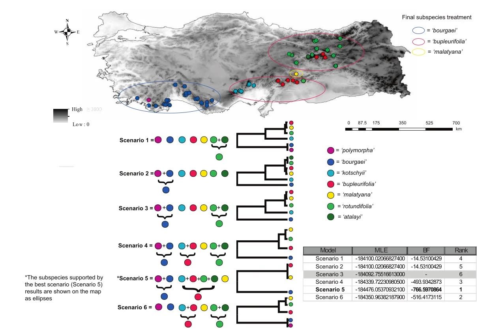
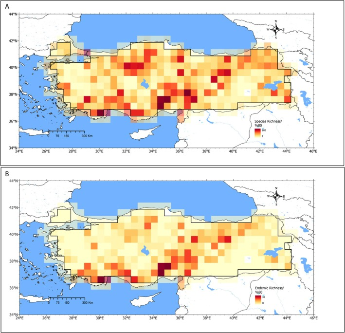
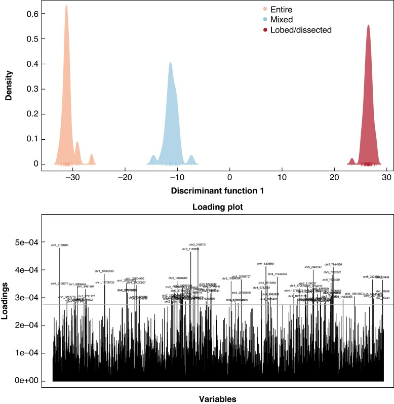
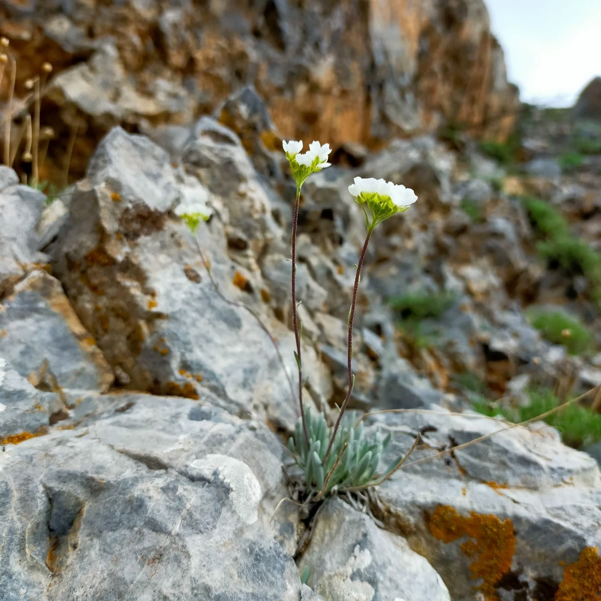
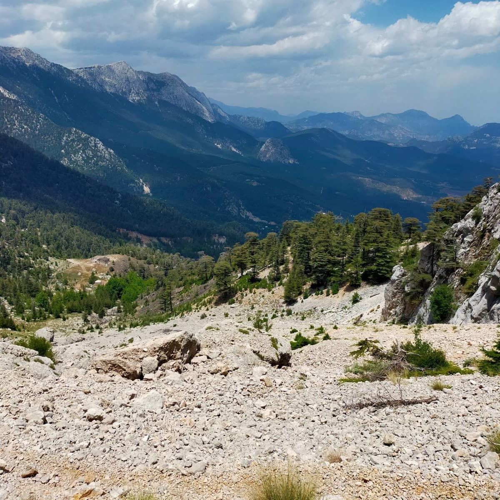
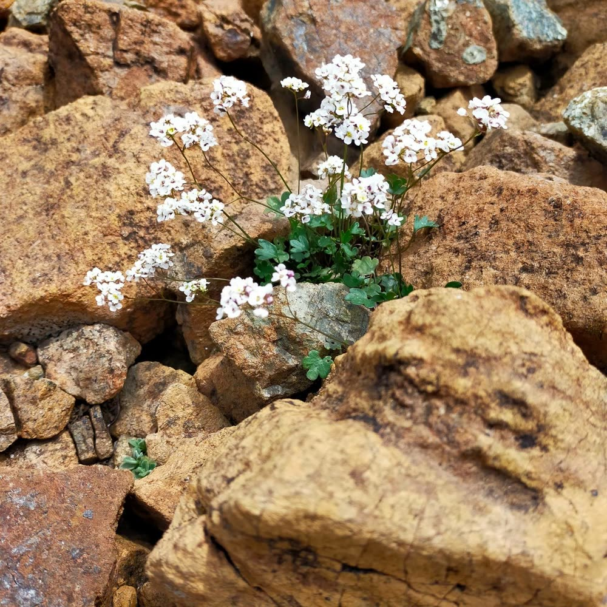
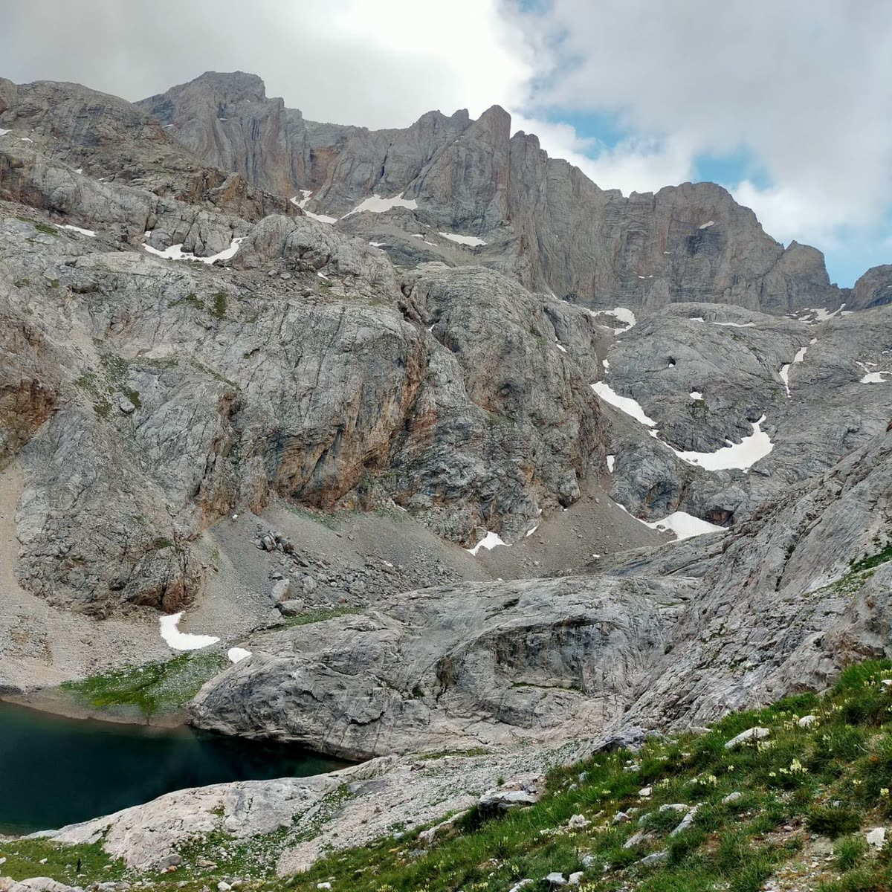
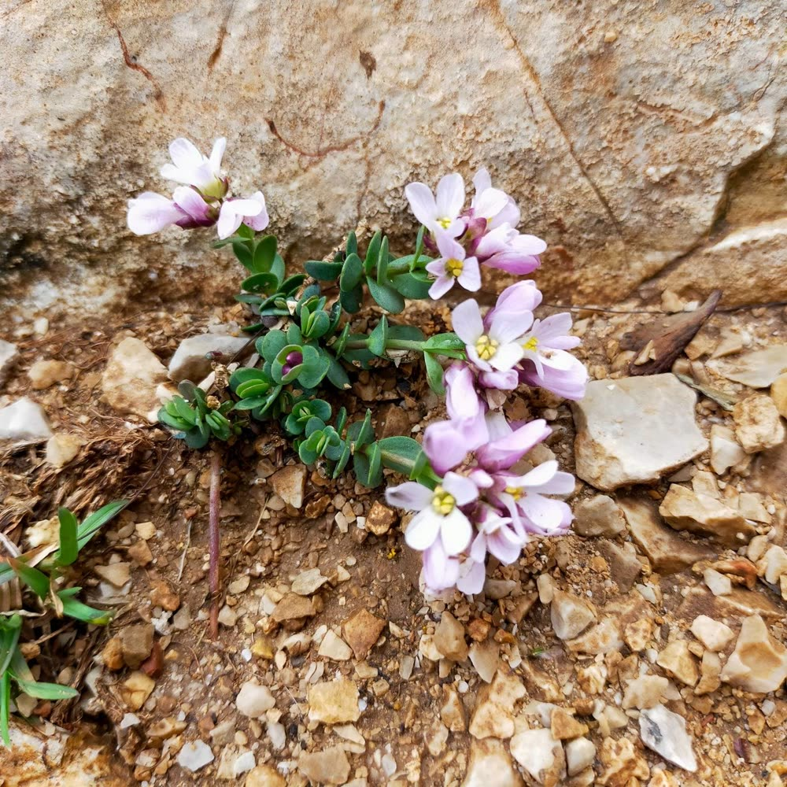

<title>Plant Biogeography</title>
<meta name="claude:viewport-fit-sides" content="cover">
<meta name="description" content="Plant Biogeography Lab, Hacettepe University: evolution, diversity and distribution of Brassicaceae across Anatolia.">
<meta name="theme-color" content="#f3f6f1">
<link rel="icon" href="brand/favicon.svg?v=3" type="image/svg+xml">
<link rel="icon" href="brand/favicon-32.png?v=3" type="image/png" sizes="32x32">
<link rel="apple-touch-icon" href="brand/apple-touch-icon.png?v=3">
<link rel="preconnect" href="https://fonts.googleapis.com">
<link rel="preconnect" href="https://fonts.gstatic.com" crossorigin>
<link rel="stylesheet" href="https://fonts.googleapis.com/css2?family=Archivo:wdth,wght@62..125,400..800&family=Source+Serif+4:ital,opsz,wght@0,8..60,400;0,8..60,600;1,8..60,400;1,8..60,600&display=swap">
<style>
/* Layout: a relief map of Anatolia. The hero is a live hypsometric contour field crossed by the Anatolian Diagonal; every section below sits on one tint band of the map legend. */
:root{
  --ink:#2b2b2b;
  --ink-soft:#55504a;
  --paper:#f3f6f1;
  --stone:#e8f1d8;
  --steppe:#f8dcc8;
  --butter:#f8ecc0;
  --sand2:#dde9f3;
  --butter2:#d9eeee;
  --steppe-ink:#7a4526;
  --foothill:#f7e1e4;
  --lowland:#f6d5c8;
  --on-lowland:#1b2620;
  --on-lowland-soft:#3d5345;
  --rule:#d6cfc0;
  --diag:#f8b500;
  --diag-on-low:#6a3f22;
  --leaf:#3b5f87;
  --diag-ink:#6a5000;
  /* hypsometric bands, lowland to alpine */
  --b0:#b5d9a8; --b1:#cfe5b0; --b2:#e4eebb; --b3:#f4ecbc; --b4:#f6d3a6; --b5:#eeb79a; --b6:#f3f6f1;
  --contour:rgba(43,43,43,.16);
  --f-map:"Archivo","Arial Narrow",Arial,sans-serif;
  --f-text:"Source Serif 4",Georgia,"Times New Roman",serif;
  --f-data:"Archivo","Arial Narrow",Arial,sans-serif;
  --step--1:.84rem; --step0:1.0625rem; --step1:1.3rem; --step2:clamp(1.55rem,3.6vw,2.1rem); --step3:clamp(2rem,5.4vw,3.2rem); --step4:clamp(2.1rem,7.4vw,4.6rem);
  --ease-out:cubic-bezier(.16,1,.3,1);
}

/* bilingual: every string exists as .en and .tr */
:root:not([data-lang="tr"]) .tr{display:none!important}
:root[data-lang="tr"] .en{display:none!important}

html{color-scheme:light}
*{box-sizing:border-box}
[hidden]{display:none!important}
html{-webkit-tap-highlight-color:transparent;-webkit-text-size-adjust:100%;scroll-behavior:smooth;scroll-padding-top:4.75rem}
@media (prefers-reduced-motion: reduce){html{scroll-behavior:auto}*{animation:none!important;transition:none!important}}
body{margin:0;background:var(--paper);color:var(--ink);font-family:var(--f-text);font-size:var(--step0);line-height:1.6;font-optical-sizing:auto}
body::before{content:"";position:fixed;inset:0 0 auto;height:env(safe-area-inset-top,0px);z-index:20;background:var(--paper)}
::selection{background:var(--diag);color:#1b1500}
:focus-visible{outline:2px solid var(--diag);outline-offset:3px}
html{scrollbar-color:var(--rule) transparent}
a{color:inherit;text-decoration-color:var(--diag);text-decoration-thickness:2px;text-underline-offset:4px}
h1,h2,h3{margin:0;font-family:var(--f-map);font-weight:700;line-height:1.05;text-wrap:balance;font-stretch:112%}
p{margin:0}
i,em{font-style:italic}
.wrap{max-width:72rem;margin:0 auto;padding-left:max(16px,env(safe-area-inset-left,0px));padding-right:max(16px,env(safe-area-inset-right,0px))}
.data{font-family:var(--f-data);font-size:.86rem;letter-spacing:0;font-variant-numeric:tabular-nums}
button,a.btn,[role="button"]{touch-action:manipulation}
button{-webkit-user-select:none;user-select:none;font:inherit}

/* ---------- header: the map legend ---------- */
.top{position:sticky;top:env(safe-area-inset-top,0px);z-index:15;background:color-mix(in srgb,var(--paper) 94%,transparent);-webkit-backdrop-filter:saturate(1.2) blur(10px);backdrop-filter:saturate(1.2) blur(10px);border-bottom:1px solid var(--rule)}
.top .bar{display:flex;align-items:center;gap:1rem;min-height:4rem}
.brand{display:flex;align-items:center;gap:.6rem;text-decoration:none;margin-right:auto;min-width:0}
.brand-mark{width:38px;height:44px;flex:none;display:block}
.brand b{font-family:var(--f-map);font-weight:700;font-stretch:125%;text-transform:uppercase;letter-spacing:.08em;font-size:.82rem;line-height:1.15;white-space:nowrap}
.nav ul{list-style:none;margin:0;padding:0;display:flex;gap:.15rem}
.nav a{display:flex;align-items:center;gap:.5rem;padding:.45rem .7rem;border-radius:6px;text-decoration:none;font-family:var(--f-map);font-size:.9rem;font-weight:500;color:var(--ink-soft);white-space:nowrap;transition:background-color .16s var(--ease-out),color .16s}
.nav a .key{width:.6rem;height:.6rem;border-radius:50%;box-shadow:inset 0 0 0 1px color-mix(in srgb,var(--ink) 40%,transparent);flex:none;transition:transform .2s var(--ease-out)}
.nav a{position:relative}
.nav a::after{content:"";position:absolute;left:.7rem;right:.7rem;bottom:.2rem;height:2px;border-radius:2px;background:var(--ink);transform:scaleX(0);transform-origin:left;transition:transform .26s var(--ease-out)}
.nav a.on::after{transform:scaleX(1)}
.nav a.on .key{transform:scale(1.35)}
.nav a.on{color:var(--ink);background:transparent}
.nav .sheet-mail{display:none}
.lang{display:inline-flex;border:1px solid var(--rule);border-radius:7px;overflow:hidden;flex:none}
.lang button{border:0;background:transparent;color:var(--ink-soft);font-family:var(--f-data);font-size:.74rem;font-weight:500;min-width:2.6rem;min-height:2.3rem;cursor:pointer;transition:background-color .14s,color .14s}
.lang button+button{border-left:1px solid var(--rule)}
.lang button[aria-pressed="true"]{background:var(--ink);color:var(--paper)}
.menu-btn{display:none;width:2.75rem;height:2.75rem;border:1px solid var(--rule);border-radius:7px;background:transparent;color:var(--ink);cursor:pointer;place-items:center;flex:none}
.menu-btn svg{width:20px;height:20px}
.menu-btn .x,.top.open .menu-btn .burger{display:none}
.top.open .menu-btn .x{display:block}

/* ---------- hero: the relief field ---------- */
.hero{position:relative;min-height:clamp(36rem,88svh,54rem);display:grid;align-items:center;overflow:hidden;background:var(--b3);isolation:isolate}
.hero canvas{position:absolute;inset:0;width:100%;height:100%;z-index:-1;touch-action:pan-y}
.hero>.wrap{width:100%;padding-block:3rem 5.5rem}
.cartouche{max-width:38rem;background:var(--paper);border:1px solid var(--ink);border-radius:4px;padding:clamp(1.4rem,3.5vw,2.4rem);display:grid;container-type:inline-size;width:min(100%,38rem);gap:1.1rem;animation:settle 1.1s var(--ease-out) both .15s}
@keyframes settle{from{transform:translateY(14px)}to{transform:none}}
.cartouche h1 .tr{font-size:.82em}
.cartouche h1{font-size:clamp(1.6rem,7.4vw,3.3rem);font-size:min(9.2cqi,3.6rem);font-stretch:125%;font-weight:800;text-transform:uppercase;letter-spacing:.02em;line-height:.95}
.cartouche .place{font-family:var(--f-map);font-size:.95rem;color:var(--ink-soft);display:flex;flex-wrap:wrap;gap:.2rem .75rem}
.cartouche .motto{font-family:var(--f-text);font-style:italic;font-weight:600;font-size:clamp(1.35rem,2.6vw,1.7rem);line-height:1.2;color:var(--ink);margin-top:.2rem}
.cartouche .thesis{font-size:1.12rem;line-height:1.5;max-width:36ch;color:var(--ink-soft)}
.actions{display:flex;flex-wrap:wrap;gap:.6rem}
.btn{display:inline-flex;align-items:center;justify-content:center;gap:.55rem;white-space:nowrap;min-height:2.9rem;padding:.7rem 1.15rem;border-radius:6px;font-family:var(--f-map);font-weight:600;font-size:.98rem;text-decoration:none;border:1px solid var(--ink);cursor:pointer;transition:transform .12s var(--ease-out),background-color .16s,color .16s;-webkit-user-select:none;user-select:none}
.btn svg{width:18px;height:18px;flex:none}
.btn.solid{background:var(--ink);color:var(--paper)}
.btn.line{background:transparent;color:var(--ink)}
.btn:active{transform:scale(.97)}
.legend{position:absolute;left:0;right:0;bottom:0;background:color-mix(in srgb,var(--paper) 90%,transparent);border-top:1px solid var(--ink)}
.legend .wrap{padding-block:.6rem;display:flex;flex-wrap:wrap;align-items:center;gap:.5rem 1.4rem;color:var(--ink-soft)}
.legend .ramp{display:flex;align-items:center;gap:.5rem}
.legend .ramp span.sw{display:flex;height:.7rem;width:7.5rem;border:1px solid var(--ink);border-radius:1px;overflow:hidden}
.legend .ramp span.sw i{flex:1}
.legend .dline{display:flex;align-items:center;gap:.5rem}
.legend .dline::before{content:"";width:1.8rem;border-top:3px dashed var(--diag)}
.legend .note{margin-left:auto}

/* ---------- sections on tint bands ---------- */
section.band>.wrap{padding-block:clamp(3.5rem,8vw,6.5rem);display:grid;gap:clamp(1.75rem,4vw,2.75rem)}
.band-stone{background:var(--stone)}
.band-paper{background:var(--paper)}
.band-butter{background:var(--butter)}
.band-sand2{background:var(--sand2)}
.band-butter2{background:var(--butter2)}
.band-steppe{background:var(--steppe)}
.band-foothill{background:var(--foothill)}
.band-lowland{background:var(--lowland);color:var(--on-lowland)}
.sec-title{font-size:clamp(1.8rem,4.8vw,2.9rem);max-width:22ch;font-stretch:125%;letter-spacing:.012em}
.lede{font-size:var(--step1);line-height:1.45;max-width:40ch}
.prose{display:grid;gap:1rem;max-width:66ch;color:var(--ink-soft)}
.prose strong{color:var(--ink);font-weight:600}

/* about */
.about{display:grid;grid-template-columns:minmax(0,1.3fr) minmax(0,1fr);gap:clamp(2rem,6vw,5rem);align-items:start}
.methods{list-style:none;margin:0;padding:0;border-top:1px solid var(--ink)}
.photo{margin:0;position:relative;border-radius:12px;overflow:hidden;aspect-ratio:1/1;max-width:100%;background:var(--b2)}
.photo img{display:block;width:100%;height:100%;object-fit:cover}
.specimen-tag{position:absolute;left:.75rem;bottom:.75rem;background:var(--paper);color:var(--ink);font-family:var(--f-text);font-size:1rem;padding:.25rem .65rem;border:1px solid var(--ink);border-radius:2px}
.methods-head{margin-top:.5rem}
.methods{display:grid;grid-template-columns:repeat(3,minmax(0,1fr));column-gap:clamp(1rem,3vw,2rem)}

.methods li{display:grid;grid-template-columns:minmax(0,1fr);gap:.9rem;padding:1rem 0;border-bottom:1px solid var(--rule)}
.methods svg{width:2.4rem;height:2.4rem;color:var(--ink)}
.methods h3{font-size:1.05rem;font-stretch:100%;margin-bottom:.2rem}
.methods p{font-size:.95rem;color:var(--ink-soft);line-height:1.5}
.hotspots{display:flex;flex-wrap:wrap;gap:.4rem 1.3rem}
.hotspots span{font-family:var(--f-map);font-size:.92rem;font-weight:500;display:inline-flex;align-items:center;gap:.45rem}
.hotspots span::before{content:"";width:.5rem;height:.5rem;border-radius:50%;background:var(--diag)}

/* research: annotations on the map */
.filters{display:flex;gap:.45rem;flex-wrap:wrap}
.chip{display:inline-flex;align-items:center;gap:.45rem;min-height:2.5rem;padding:.4rem .9rem;border-radius:999px;border:1px solid var(--steppe-ink);background:transparent;color:var(--steppe-ink);font-family:var(--f-map);font-size:.9rem;font-weight:500;cursor:pointer;white-space:nowrap;transition:background-color .16s,color .16s,transform .12s var(--ease-out)}
.chip:active{transform:scale(.97)}
.chip[aria-pressed="true"]{background:var(--ink);border-color:var(--ink);color:var(--paper)}
.studies{display:grid;grid-template-columns:repeat(2,minmax(0,1fr));column-gap:clamp(1.5rem,5vw,4rem);border-top:1px solid var(--ink)}
.study{display:grid;gap:.6rem;padding:1.6rem 0;border-bottom:1px solid color-mix(in srgb,var(--steppe-ink) 35%,transparent);align-content:start}
.study .taxon{font-family:var(--f-text);font-style:italic;font-weight:600;font-size:var(--step2);line-height:1.1;font-stretch:normal}
.study .taxon .plain{font-style:normal}
.study .meta{display:flex;flex-wrap:wrap;align-items:center;gap:.3rem .5rem;color:var(--steppe-ink)}
.study .meta svg{width:14px;height:14px;flex:none;margin-right:-.15rem}
.study .meta .sep{display:none}
.study .meta .src{flex-basis:100%;opacity:.85}
.study p.desc{color:var(--ink-soft);max-width:52ch}

/* publications */
.pubs{list-style:none;margin:0;padding:0;border-top:1px solid var(--ink)}
.pubs li{display:grid;grid-template-columns:5.5rem minmax(0,1fr);gap:1.25rem;padding:1.25rem 0;border-bottom:1px solid var(--rule)}
.pubs .yr{font-family:var(--f-data);font-size:.95rem;color:var(--ink);padding-top:.15rem}
.pubs .t{font-size:1.08rem;font-weight:600;line-height:1.35;max-width:70ch}
.pubs .a{color:var(--ink-soft);font-size:.95rem;margin-top:.3rem}
.pubs .j{color:var(--ink-soft);font-size:.95rem}
.pubs a{overflow-wrap:anywhere}
.profiles{display:flex;flex-wrap:wrap;gap:.5rem 1.6rem}
.tlink{display:inline-flex;align-items:center;gap:.35rem;min-height:2.4rem;font-family:var(--f-map);font-weight:600;text-decoration:underline;text-decoration-color:var(--diag);text-decoration-thickness:2px;text-underline-offset:5px}
.tlink svg{width:16px;height:16px;transition:transform .2s var(--ease-out)}


/* hero actions: two map-label pills set on the relief, outside the title card */
.hero>.wrap{display:grid;gap:1rem;justify-items:start}
.hero-actions{display:flex;flex-wrap:wrap;gap:.75rem;animation:settle 1.1s var(--ease-out) both .3s}
.ha{display:inline-flex;align-items:center;gap:.8rem;min-height:3.25rem;border-radius:999px;text-decoration:none;font-family:var(--f-map);font-weight:600;font-size:1.02rem;-webkit-user-select:none;user-select:none;touch-action:manipulation;transition:transform .16s var(--ease-out),box-shadow .2s var(--ease-out),background-color .2s}
.ha-ico{display:grid;place-items:center;width:2.4rem;height:2.4rem;border-radius:50%;flex:none;transition:transform .22s var(--ease-out)}
.ha-ico svg{width:18px;height:18px}
.ha-main{background:var(--ink);color:var(--paper);padding:.4rem .42rem .4rem 1.3rem;box-shadow:0 10px 24px -14px rgba(16,26,20,.7)}
.ha-main .ha-ico{background:var(--diag);color:#1b1500}
.ha-alt{background:color-mix(in srgb,var(--paper) 82%,transparent);-webkit-backdrop-filter:blur(8px) saturate(1.2);backdrop-filter:blur(8px) saturate(1.2);color:var(--ink);padding:.4rem 1.3rem .4rem .42rem;box-shadow:0 8px 20px -14px rgba(16,26,20,.55),inset 0 0 0 1px color-mix(in srgb,var(--ink) 12%,transparent)}
.ha-alt .ha-ico{background:var(--ink);color:var(--paper)}
.ha:active{transform:scale(.97)}
@media (hover:hover) and (pointer:fine){
  .ha-main:hover .ha-ico{transform:translateY(3px)}
  .ha-alt:hover .ha-ico{transform:rotate(-8deg) scale(1.06)}
  .ha:hover{box-shadow:0 14px 28px -14px rgba(16,26,20,.75)}
}


/* habitat plates: full photograph + label, alternating sides */
.plate{background:var(--paper)}
.plate>.wrap{display:grid;grid-template-columns:minmax(0,1.15fr) minmax(0,1fr);gap:clamp(1.5rem,5vw,4rem);align-items:center;padding-block:clamp(2.5rem,6vw,4.5rem)}
.plate.flip>.wrap{grid-template-columns:minmax(0,1fr) minmax(0,1.15fr)}
.plate-img{margin:0;border-radius:14px;overflow:hidden;aspect-ratio:1/1;max-width:100%;background:var(--b2)}
.plate-img img{display:block;width:100%;height:100%;object-fit:contain;transition:transform 1.2s var(--ease-out)}
.anim .plate:not(.seen) .plate-img img{transform:scale(1.03)}
.plate-txt{display:grid;gap:.8rem;max-width:30rem}
.plate-k{color:var(--steppe-ink);letter-spacing:.08em;text-transform:uppercase}
.plate-h{font-family:var(--f-map);font-size:clamp(1.6rem,3.4vw,2.4rem);font-stretch:112%;line-height:1.1}
.plate-h i{font-family:var(--f-text);font-weight:600}
.plate-d{color:var(--ink-soft);font-size:1.1rem;line-height:1.55}
.ptag{position:absolute;left:.75rem;bottom:.75rem;background:color-mix(in srgb,var(--paper) 88%,transparent);-webkit-backdrop-filter:blur(6px);backdrop-filter:blur(6px);color:var(--ink);font-family:var(--f-text);font-size:1rem;padding:.25rem .75rem;border-radius:999px}
@media (max-width:860px){.plate>.wrap,.plate.flip>.wrap{grid-template-columns:minmax(0,1fr)}.plate.flip .plate-txt{order:2}}
.foot-id{display:inline-flex;align-items:center;gap:.75rem}
.foot-mark{width:34px;height:40px;flex:none}
/* field photographs */
.photo-band{margin:0;position:relative;height:clamp(16rem,42vw,30rem);overflow:hidden;background:var(--b2)}
.photo-band picture,.photo-band img{display:block;width:100%;height:100%;object-fit:cover}
.photo-band img{transition:transform 1.4s var(--ease-out)}
.photo-band.seen img,.no-anim .photo-band img{transform:none}
.feature-wrap{display:grid;grid-template-columns:minmax(0,1.6fr) minmax(0,1fr);gap:clamp(1.5rem,4vw,3rem);align-items:start}
.theses-wrap{display:grid;grid-template-columns:minmax(0,1.8fr) minmax(0,1fr);gap:clamp(1.5rem,4vw,3rem);align-items:start}
.side-photo{margin:0;border-radius:12px;overflow:hidden;aspect-ratio:1/1;max-width:100%;background:var(--b2);position:sticky;top:5rem}
.side-photo{position:relative}
@media (min-width:981px){.side-photo{position:sticky}}
.side-photo img{display:block;width:100%;height:100%;object-fit:cover;transition:transform .6s var(--ease-out)}
@media (hover:hover) and (pointer:fine){.side-photo:hover img{transform:scale(1.03)}}
@media (max-width:980px){.feature-wrap,.theses-wrap{grid-template-columns:minmax(0,1fr)}.side-photo{position:relative;top:auto;max-width:30rem}}

/* ---------- highlights ---------- */
.highlights{background:var(--paper);border-bottom:1px solid var(--rule)}
.highlights>.wrap{padding-block:clamp(2.75rem,6vw,4.5rem);display:grid;gap:1.75rem}
.hl-head{display:flex;flex-wrap:wrap;align-items:baseline;justify-content:space-between;gap:.5rem 2rem}
.hl-grid{display:grid;grid-template-columns:repeat(3,minmax(0,1fr));gap:0;border-top:2px solid var(--ink)}
.hl{display:grid;gap:.7rem;align-content:start;padding:1.4rem clamp(1rem,2.4vw,1.8rem) 1.4rem 0}
.hl+.hl{padding-left:clamp(1rem,2.4vw,1.8rem);border-left:1px solid var(--rule)}
.hl-j{font-family:var(--f-map);font-size:.92rem;color:var(--steppe-ink)}
.hl-t{font-family:var(--f-text);font-weight:600;font-stretch:normal;font-size:1.25rem;line-height:1.3}
.hl-lead .hl-t{font-size:1.25rem;line-height:1.3}
@supports (grid-template-rows:subgrid){@media (min-width:861px){.hl{grid-row:span 5;grid-template-rows:subgrid;row-gap:.7rem}}}
.hl-fig{margin:.4rem 0 0;display:grid;gap:.45rem}
.hl-fig a{display:block;border-radius:10px;overflow:hidden;background:#fff;aspect-ratio:4/3;box-shadow:inset 0 0 0 1px var(--rule)}
.hl-fig img{display:block;width:100%;height:100%;object-fit:contain;transition:transform .5s var(--ease-out)}
.photo-fig a{background:var(--stone)}
.photo-fig img{object-fit:cover}
.hl-fig figcaption{font-size:.82rem;line-height:1.4;color:var(--ink-soft)}
@media (hover:hover) and (pointer:fine){.hl-fig a:hover img{transform:scale(1.02)}}
.hl-t a{text-decoration:none;background-image:linear-gradient(var(--diag),var(--diag));background-size:0 2px;background-repeat:no-repeat;background-position:0 100%;transition:background-size .35s var(--ease-out)}
.hl-s{color:var(--ink-soft);max-width:56ch}
.hl-a{font-size:.88rem;color:var(--ink-soft)}
@media (hover:hover) and (pointer:fine){.hl-t a:hover{background-size:100% 2px}}
/* ---------- project timeline ---------- */
.timeline{display:grid;gap:.6rem;margin-top:1rem}
.tl-key{display:flex;flex-wrap:wrap;gap:.4rem 1.4rem;font-family:var(--f-map);font-size:.9rem;color:var(--ink-soft)}
.tl-key .k{display:inline-flex;align-items:center;gap:.45rem}
.tl-key .k::before{content:"";width:1.4rem;height:.55rem;border-radius:3px;background:var(--c)}
.tl-key .tub{--c:#2a6fb8}.tl-key .bap{--c:#d2602f}.tl-key .oth{--c:#6f7f8f}
.tl-key .pi-k::before{width:.6rem;height:.6rem;border-radius:50%;background:var(--ink);box-shadow:0 0 0 2px var(--sand2),0 0 0 3px var(--ink)}
.tl-axis{display:grid;grid-template-columns:minmax(0,1fr) minmax(0,1.25fr);gap:1.5rem;font-family:var(--f-map);font-size:.78rem;color:var(--ink-soft);border-bottom:1px solid var(--ink);padding-bottom:.3rem}
.tl-axis-in{grid-column:2;position:relative;height:1.1rem}
.tl-axis-in span{position:absolute;transform:translateX(-50%);font-variant-numeric:tabular-nums}
.tl-axis-in span:first-child{transform:none}.tl-axis-in span:last-child{transform:translateX(-100%)}
.tl-list{list-style:none;margin:0;padding:0}
.tl-row{display:grid;grid-template-columns:minmax(0,1fr) minmax(0,1.25fr);gap:1.5rem;align-items:center;padding:.55rem 0;border-bottom:1px solid color-mix(in srgb,var(--ink) 12%,transparent)}
.tl-row .t{font-weight:600;line-height:1.3;font-size:.98rem}
.tl-row .m{font-size:.82rem;color:var(--ink-soft);margin-top:.15rem}
.tl-track{position:relative;height:1.6rem;background:repeating-linear-gradient(90deg,transparent 0 calc(100%/6 - 1px),color-mix(in srgb,var(--ink) 10%,transparent) calc(100%/6 - 1px) calc(100%/6))}
.tl-bar{position:absolute;top:.3rem;bottom:.3rem;border-radius:4px;background:var(--c);min-width:.9rem;display:flex;align-items:center;transform-origin:left;transition:transform .7s var(--ease-out)}
.tub .tl-bar{--c:#2a6fb8}.bap .tl-bar{--c:#d2602f}.oth .tl-bar{--c:#6f7f8f}
.lead .tl-bar::before{content:"";position:absolute;left:-.35rem;width:.7rem;height:.7rem;border-radius:50%;background:var(--ink);box-shadow:0 0 0 2px var(--sand2)}
.tl-bar.end .tl-yr{left:auto;right:calc(100% + .9rem)}
.tl-yr{position:absolute;left:calc(100% + .45rem);white-space:nowrap;font-family:var(--f-map);font-size:.78rem;color:var(--ink-soft);font-variant-numeric:tabular-nums}
.anim #projects:not(.seen) .tl-bar{transform:scaleX(0)}
@media (hover:hover) and (pointer:fine){.tl-row:hover{background:color-mix(in srgb,var(--paper) 55%,transparent)}}
/* ---------- publication tools ---------- */
.pub-tools{display:grid;gap:1rem}
.pub-tools>*{min-width:0}
.pub-tools .chip[aria-pressed="true"]{color:var(--paper)}
.search{display:flex;align-items:center;gap:.6rem;background:var(--paper);border-radius:999px;padding:0 1rem;min-height:3rem;box-shadow:inset 0 0 0 1px color-mix(in srgb,var(--ink) 18%,transparent)}
.search:focus-within{box-shadow:inset 0 0 0 2px var(--ink)}
.search svg{width:18px;height:18px;flex:none;color:var(--ink-soft)}
.search input{flex:1;min-width:0;border:0;background:transparent;font:400 16px var(--f-text);color:var(--ink);outline:none;min-height:2.8rem}
.search input::placeholder{color:var(--ink-soft)}
.pub-tools .chip{border-color:color-mix(in srgb,var(--ink) 35%,transparent);color:var(--ink)}
.years{display:grid;grid-template-columns:repeat(21,minmax(0,1fr));gap:3px;align-items:end;height:6.5rem;padding-top:1rem}
.yb{position:relative;display:flex;flex-direction:column;justify-content:flex-end;align-items:center;height:100%;border:0;background:transparent;padding:0;cursor:pointer;font:inherit;color:var(--ink-soft)}
.yb-bar{width:100%;max-width:1.6rem;height:calc(var(--h) * .72);min-height:4px;border-radius:4px 4px 0 0;background:#2a6fb8;opacity:.78;transition:opacity .15s,transform .15s var(--ease-out)}
.yb-n{position:absolute;bottom:calc(var(--h) * .72 + 1.25rem);font-family:var(--f-map);font-size:.72rem;opacity:0;transition:opacity .15s}
.yb-y{font-family:var(--f-map);font-size:.7rem;margin-top:.25rem;font-variant-numeric:tabular-nums}
.yb.empty{cursor:default}
.yb[aria-pressed="true"] .yb-bar{opacity:1;background:var(--ink)}
.yb[aria-pressed="true"] .yb-n,.yb:focus-visible .yb-n{opacity:1}
@media (hover:hover) and (pointer:fine){.yb[data-y]:hover .yb-bar{opacity:1}.yb[data-y]:hover .yb-n{opacity:1}}
.pub-count{font-family:var(--f-map);font-size:.92rem;color:var(--ink-soft);min-height:1.2em}
@media (max-width:860px){
  .hl-grid{grid-template-columns:minmax(0,1fr)}
  .hl+.hl{padding-left:0;border-left:0;border-top:1px solid var(--rule)}
  .tl-axis{display:none}
  .tl-row{grid-template-columns:minmax(0,1fr);gap:.35rem}
  .tl-track{background:none;height:1.3rem}
  .years{grid-template-columns:repeat(21,minmax(0,1fr));gap:2px}
  .yb-y{font-size:.7rem;letter-spacing:-.02em}
}

/* PI details from the CV */
.pi-sub{font-family:var(--f-map);font-size:1.05rem;font-stretch:112%;margin:0}
.pi-details{display:grid;grid-template-columns:repeat(2,minmax(0,1fr));gap:1.6rem 2.5rem;margin-top:.6rem;padding-top:1.2rem;border-top:1px solid color-mix(in srgb,var(--ink) 22%,transparent)}
.pd{display:grid;gap:.55rem;align-content:start;min-width:0}
.pd-wide{grid-column:1/-1}
.pd h4{margin:0;font-family:var(--f-map);font-size:1rem;font-stretch:112%}
.pd ul{margin:0;padding:0;list-style:none}
.pd .dl li{padding:.3rem 0 .3rem 1rem;position:relative;color:var(--ink-soft)}
.pd .dl li::before{content:"";position:absolute;left:0;top:.85rem;width:.35rem;height:.35rem;border-radius:50%;background:var(--diag)}
.tags{display:grid;grid-template-columns:repeat(2,minmax(0,1fr));column-gap:2rem}
.tags li{padding:.3rem 0 .3rem 1rem;position:relative;color:var(--ink-soft)}
.tags li::before{content:"";position:absolute;left:0;top:.85rem;width:.35rem;height:.35rem;border-radius:50%;background:var(--diag)}
@media (max-width:600px){.tags{grid-template-columns:minmax(0,1fr)}}
.edu-t{border-collapse:collapse;width:100%;font-size:.95rem}
.edu-t th{text-align:left;font-family:var(--f-map);font-weight:600;font-size:.82rem;color:var(--ink-soft);padding:.3rem .6rem .3rem 0;border-bottom:1px solid color-mix(in srgb,var(--ink) 22%,transparent)}
.edu-t td{padding:.45rem .6rem .45rem 0;border-bottom:1px solid color-mix(in srgb,var(--ink) 10%,transparent);color:var(--ink-soft)}
.edu-t td:last-child,.edu-t th:last-child{text-align:right;font-variant-numeric:tabular-nums}
.topics-intro{max-width:62ch;color:var(--ink-soft)}
.topic-wide{grid-column:1/-1}
.topic .refs b{font-weight:600;color:var(--ink)}
@media (max-width:860px){.pi-details{grid-template-columns:minmax(0,1fr)}.methods{grid-template-columns:minmax(0,1fr)!important}}
@media (min-width:861px) and (max-width:1100px){.methods{grid-template-columns:repeat(2,minmax(0,1fr))!important}}
/* ---------- motion: small, compositor-only ---------- */
.sec-title,.sub-head{position:relative;padding-bottom:.55rem}
.sec-title::after,.sub-head::after{display:none;content:"";position:absolute;left:0;bottom:0;width:3.2rem;height:3px;border-radius:3px;background:var(--diag);transform-origin:left;transition:transform .7s var(--ease-out) .1s}
.anim .band:not(.seen) .sec-title::after,.anim .band:not(.seen) .sub-head::after{transform:scaleX(0)}
@keyframes rise{from{opacity:0;transform:translateY(8px)}to{opacity:1;transform:none}}
.anim .photo-band:not(.seen) img{transform:scale(1.04)}
.pubs li.rise{animation:rise .32s var(--ease-out) both}
@media (hover:hover) and (pointer:fine){
  .member:hover .tile,.pi-link:hover .tile{transform:translateY(-4px) rotate(-.6deg)}
  .photo img{transition:transform .6s var(--ease-out)}
  .photo:hover img{transform:scale(1.03)}
  .tlink:hover svg{transform:translate(2px,-2px)}
  .btn:hover svg{transform:translateY(2px)}
  .nav a:hover .key{transform:scale(1.3)}
}
.btn svg{transition:transform .2s var(--ease-out)}
/* ---------- research subsections ---------- */
.vh{position:absolute;width:1px;height:1px;overflow:hidden;clip:rect(0 0 0 0);white-space:nowrap}
.sub-head{font-size:clamp(1.5rem,3.6vw,2.2rem);font-stretch:125%;letter-spacing:.012em;max-width:24ch}
.band-sand2>.wrap,.band-butter>.wrap,.band-butter2>.wrap{padding-block:clamp(2.75rem,6vw,4.5rem)}
.subsec{display:grid;gap:1.5rem}
.topics{display:grid;grid-template-columns:repeat(2,minmax(0,1fr));column-gap:clamp(1.5rem,5vw,4rem);border-top:1px solid var(--ink)}
.topic{display:grid;gap:.55rem;align-content:start;padding:1.4rem 0;border-bottom:1px solid color-mix(in srgb,var(--steppe-ink) 35%,transparent)}
.topic h4{margin:0;font-family:var(--f-map);font-size:1.22rem;font-stretch:112%;line-height:1.2}
.topic .desc{color:var(--ink-soft);max-width:60ch}
.topic .refs{color:var(--steppe-ink);line-height:1.6}
.project.feature h4{margin:0;font-family:var(--f-map);font-size:clamp(1.3rem,2.6vw,1.7rem);font-stretch:112%;line-height:1.15}
.project .m,.plist .m{color:var(--steppe-ink)}
.project-list{min-width:0}
.plist{list-style:none;margin:0;padding:0}
.plist li{display:grid;grid-template-columns:5.5rem minmax(0,1fr);gap:1rem;padding:.8rem 0;border-bottom:1px solid color-mix(in srgb,var(--steppe-ink) 30%,transparent)}
.plist .yr{font-family:var(--f-data);font-size:.85rem;color:var(--steppe-ink);padding-top:.15rem;font-variant-numeric:tabular-nums}
.plist .t{font-weight:600;line-height:1.35}
.plist .m{font-size:.76rem;margin-top:.2rem}
.conf{border-top:1px solid var(--ink);padding-top:1rem}
.conf summary{cursor:pointer;font-family:var(--f-map);font-weight:600;font-size:1.05rem;padding:.5rem 0;min-height:2.75rem;display:flex;align-items:center;gap:.5rem;list-style:none}
.conf summary::-webkit-details-marker{display:none}
.conf summary::before{content:"";width:.55rem;height:.55rem;border-right:2px solid currentColor;border-bottom:2px solid currentColor;transform:rotate(-45deg);transition:transform .18s var(--ease-out)}
.conf[open] summary::before{transform:rotate(45deg)}
.theses .t{font-weight:600}
#projects .projects{grid-template-columns:minmax(0,1fr);border-top:1px solid var(--ink)}
#projects .project:first-child{grid-row:auto}
.plist{column-count:2;column-gap:clamp(1.5rem,5vw,4rem)}
.plist li{break-inside:avoid}
/* PI profile in About */
.pi-profile{display:grid;grid-template-columns:minmax(0,13rem) minmax(0,1fr);gap:clamp(1.25rem,5vw,3.5rem);align-items:start;border-top:1px solid var(--ink);padding-top:clamp(1.5rem,4vw,2.5rem)}
.pi-body{display:grid;gap:.9rem;max-width:78ch}
.pi-body h3{font-size:var(--step2);margin:0}
.pi-body>p:not(.role):not(.src){color:var(--ink-soft)}
.stats{display:grid;grid-template-columns:repeat(5,minmax(0,1fr));gap:1rem 0;margin:.4rem 0 0}
.stats div{padding:0 1rem;display:flex;flex-direction:column-reverse;justify-content:flex-end;gap:.2rem;border-left:1px solid color-mix(in srgb,var(--ink) 25%,transparent)}
.stats div:first-child{border-left:0;padding-left:0}
.stats dt{font-size:.76rem;color:var(--ink-soft)}
.stats dd{margin:0;font-family:var(--f-map);font-stretch:125%;font-weight:700;font-size:clamp(1.5rem,3vw,2rem);line-height:1;font-variant-numeric:tabular-nums}
.pi-body .src{font-size:.78rem;color:var(--ink-soft)}
/* PI link in People */
.pi-link{display:grid;grid-template-columns:minmax(0,7rem) minmax(0,1fr);gap:1.25rem;align-items:center;text-decoration:none;color:inherit;max-width:32rem;transition:transform .14s var(--ease-out)}
.pi-link:active{transform:scale(.98)}
.pi-link h3{font-size:1.2rem;margin:0 0 .15rem}
.pi-link .more-link{font-family:var(--f-map);font-size:.9rem;font-weight:600;margin-top:.35rem;text-decoration:underline;text-decoration-color:var(--diag);text-underline-offset:4px}
.member .note{margin-top:.1rem}
/* nav submenu */
.has-sub{position:relative;display:flex;align-items:center}
.sub-toggle{display:grid;place-items:center;width:1.9rem;height:2.1rem;margin-left:-.35rem;border:0;border-radius:6px;background:transparent;color:var(--ink-soft);cursor:pointer;transition:background-color .14s,color .14s}
.sub-toggle svg{width:14px;height:14px;transition:transform .18s var(--ease-out)}
.has-sub.open .sub-toggle svg{transform:rotate(180deg)}
.nav .sub{display:grid;flex-direction:column}
.sub{list-style:none;margin:0;padding:.35rem;position:absolute;top:calc(100% + .4rem);left:0;min-width:15.5rem;display:grid;gap:2px;background:var(--paper);border:1px solid var(--ink);border-radius:8px;box-shadow:0 12px 28px -16px rgba(20,30,24,.45);transform-origin:top left;opacity:0;visibility:hidden;transform:translateY(-4px) scale(.97);transition:opacity .15s var(--ease-out),transform .18s var(--ease-out),visibility 0s linear .18s;z-index:20}
.sub::before{content:"";position:absolute;left:0;right:0;top:-.5rem;height:.5rem}
.has-sub.open .sub{opacity:1;visibility:visible;transform:none;transition:opacity .15s var(--ease-out),transform .18s var(--ease-out),visibility 0s}
.sub a{padding:.55rem .7rem;border-radius:6px}
@media (hover:hover) and (pointer:fine) and (min-width:861px){
  .has-sub:hover .sub{opacity:1;visibility:visible;transform:none;transition:opacity .15s var(--ease-out),transform .18s var(--ease-out),visibility 0s}
  .sub-toggle:hover{background:var(--stone);color:var(--ink)}
}
/* projects */
.projects{display:grid;grid-template-columns:minmax(0,1.5fr) minmax(0,1fr);grid-template-rows:auto auto;gap:0 clamp(1.5rem,5vw,4rem);border-top:1px solid var(--ink)}
.project{display:grid;gap:.7rem;align-content:start;padding:1.6rem 0;border-bottom:1px solid color-mix(in srgb,var(--steppe-ink) 35%,transparent)}
.project:first-child{grid-row:span 2}
.project h3{font-size:clamp(1.25rem,2.4vw,1.6rem);font-stretch:112%;line-height:1.15}
.project:first-child h3{font-size:clamp(1.4rem,3vw,2rem)}
.project .desc{color:var(--ink-soft);max-width:62ch}
.project .facts{display:grid;grid-template-columns:repeat(4,minmax(0,1fr));gap:1rem 0;margin:.6rem 0 0}
.project .facts div{padding:0 1rem;display:flex;flex-direction:column-reverse;justify-content:flex-end;gap:.2rem;border-left:1px solid color-mix(in srgb,var(--steppe-ink) 35%,transparent)}
.project .facts div:first-child{border-left:0;padding-left:0}
.project .facts dt{color:var(--steppe-ink);font-size:.76rem}
.project .facts dd{margin:0;font-family:var(--f-map);font-stretch:125%;font-weight:700;font-size:clamp(1.3rem,2.6vw,1.7rem);line-height:1.05;color:var(--ink)}
.sub-title{font-size:1.15rem;font-stretch:112%;letter-spacing:.01em;margin-top:.5rem}
.media{color:var(--ink-soft)}
.more-btn{justify-self:start}
.pubs b{font-weight:600;color:var(--ink)}
/* people */
.pi{display:grid;grid-template-columns:minmax(0,15rem) minmax(0,1fr);gap:clamp(1.25rem,5vw,3.5rem);align-items:end}
.tile{position:relative;aspect-ratio:4/5;max-width:100%;border-radius:10px;overflow:hidden;background:var(--b2);transition:transform .3s var(--ease-out)}
.tile canvas{position:absolute;inset:0;width:100%;height:100%}
.tile .mono{position:absolute;left:.6rem;bottom:.55rem;background:var(--paper);color:var(--ink);font-family:var(--f-map);font-stretch:125%;font-weight:700;font-size:1.05rem;letter-spacing:.06em;padding:.15rem .5rem;border-radius:999px;font-size:.95rem;padding:.2rem .6rem}
.role{font-family:var(--f-map);font-size:.88rem;font-weight:600;color:var(--leaf)}
.pi h3{font-size:var(--step2);margin-bottom:.3rem}
.pi .role{margin-bottom:.75rem}
.member .role{margin-top:.2rem}
.pi .aff{color:var(--ink-soft);max-width:52ch}
.team{display:grid;grid-template-columns:repeat(5,minmax(0,1fr));gap:clamp(.9rem,2.4vw,1.5rem)}
.member{display:grid;gap:.65rem;align-content:start}
.member h3{font-size:1.05rem;font-stretch:100%;line-height:1.2}
.member .note{font-size:.88rem;color:var(--ink-soft);line-height:1.4}
.edu{list-style:none;margin:.9rem 0 0;padding:.75rem 0 0;border-top:1px solid color-mix(in srgb,var(--ink) 25%,transparent);display:grid;gap:.3rem;color:var(--ink-soft)}
.groups{display:grid;grid-template-columns:minmax(0,1fr) minmax(0,2fr);gap:clamp(1.5rem,5vw,4rem);align-items:start}
.roster{list-style:none;margin:.75rem 0 0;padding:0;border-top:1px solid var(--ink)}
.roster li{display:grid;gap:.1rem;padding:.75rem 0;border-bottom:1px solid color-mix(in srgb,var(--ink) 18%,transparent)}
.roster b{font-family:var(--f-map);font-weight:600;font-size:1rem}
.roster .note{font-size:.9rem;color:var(--ink-soft);line-height:1.4}
.roster.collab{display:grid;grid-template-columns:repeat(2,minmax(0,1fr));column-gap:2rem}
.join{display:flex;flex-wrap:wrap;align-items:center;justify-content:space-between;gap:1rem;padding-top:1.4rem;border-top:1px solid var(--ink)}
.join p{font-size:1.1rem}
.join p{max-width:52ch}

/* contact: the lowland */
.contact{display:grid;grid-template-columns:minmax(0,1.1fr) minmax(0,1fr);gap:clamp(2rem,6vw,5rem);align-items:start}
.band-lowland .sec-title{color:var(--on-lowland)}
.band-lowland .lede{color:var(--on-lowland-soft)}
.mail{display:grid;gap:.9rem}
.mail .addr{font-family:var(--f-data);font-size:clamp(1rem,3.6vw,1.35rem);color:var(--on-lowland);overflow-wrap:anywhere;-webkit-user-select:all;user-select:all}
.band-lowland .btn.solid{background:var(--ink);border-color:var(--ink);color:var(--paper)}
.band-lowland .btn.line{border-color:var(--on-lowland-soft);color:var(--on-lowland)}
.visit{display:grid;gap:1.1rem;border-top:1px solid var(--on-lowland-soft);padding-top:1.1rem}
.visit .k{font-family:var(--f-map);font-size:.85rem;font-weight:600;color:var(--on-lowland-soft);margin-bottom:.15rem}
.visit p{color:var(--on-lowland)}
.visit .data{color:var(--diag-on-low)}
.toast{font-family:var(--f-map);font-size:.9rem;color:var(--diag-on-low);min-height:1.4em}

footer{background:#e4ebe6;color:var(--ink);border-top:1px solid var(--rule)}
footer .wrap{align-items:center;padding-block:1.6rem;display:flex;flex-wrap:wrap;justify-content:space-between;gap:.75rem 1.5rem;font-family:var(--f-map);font-size:.88rem;padding-bottom:calc(1.6rem + env(safe-area-inset-bottom,0px))}
footer .data{opacity:.8}

/* hover only where a precise pointer exists */
@media (hover:hover) and (pointer:fine){
  .nav a:hover{background:var(--stone);color:var(--ink)}
  .lang button:hover:not([aria-pressed="true"]){background:var(--stone);color:var(--ink)}
  .btn.solid:hover{background:color-mix(in srgb,var(--ink) 86%,var(--b0))}
  .btn.line:hover{background:color-mix(in srgb,var(--ink) 8%,transparent)}
  .chip:hover:not([aria-pressed="true"]){background:color-mix(in srgb,var(--steppe-ink) 12%,transparent)}
  .band-lowland .btn.solid:hover{background:color-mix(in srgb,var(--ink) 86%,var(--b0))}
  .band-lowland .btn.line:hover{background:rgba(27,38,32,.06)}
  .pubs a:hover,.member a:hover{text-decoration-thickness:3px}
}

/* ---------- tablet ---------- */
@media (max-width:980px){
  .team{grid-template-columns:repeat(3,minmax(0,1fr))}
  .projects,.groups,.topics{grid-template-columns:minmax(0,1fr)}
  .stats{grid-template-columns:repeat(3,minmax(0,1fr))}
  .stats div:nth-child(3n+1){border-left:0;padding-left:0}
  .stats div:nth-child(3n+2),.stats div:nth-child(3n+3){border-left:1px solid color-mix(in srgb,var(--ink) 25%,transparent);padding-left:1rem}
  .plist{column-count:1}
  .methods{grid-template-columns:repeat(2,minmax(0,1fr))}
  .about .photo{max-width:30rem}
  .project:first-child{grid-row:auto}
  .about,.contact{grid-template-columns:minmax(0,1fr)}
}
/* ---------- phone: legend becomes a sheet ---------- */
@media (max-width:860px){
  .menu-btn{display:grid}
  .top .bar{flex-wrap:wrap;gap:.5rem}
  .nav{display:none;order:3;width:100%;padding:.25rem 0 1rem;max-height:calc(100dvh - 4.5rem - env(safe-area-inset-top,0px));overflow-y:auto;overscroll-behavior:contain}
  .top.open .nav{display:block;animation:sheet .26s var(--ease-out)}
  @keyframes sheet{from{transform:translateY(-6px);opacity:.4}to{transform:none;opacity:1}}
  .nav ul{flex-direction:column;gap:0;border-top:1px solid var(--rule)}
  .nav a{font-size:1.1rem;padding:.95rem .5rem;border-radius:0;border-bottom:1px solid var(--rule)}
  .nav a .key{width:1rem;height:1rem}
  .nav .sheet-mail{display:flex;margin-top:1rem}
  .has-sub{display:block}
  .has-sub>a{border-bottom:1px solid var(--rule)}
  .sub-toggle{display:none}
  .sub{position:static;opacity:1;visibility:visible;transform:none;border:0;box-shadow:none;background:transparent;padding:0 0 0 1.4rem;min-width:0;transition:none}
  .sub::before{display:none}
  .sub a{font-size:1rem;padding:.75rem .5rem;border-radius:0}
  .nav .sheet-mail .btn{width:100%}
}
@media (max-width:760px){
  .hero{align-items:end;min-height:clamp(38rem,92svh,46rem)}
  .hero>.wrap{padding-block:9rem 8.25rem}
  .cartouche{max-width:none}
  .cartouche .thesis{font-size:1.15rem}
  .actions .btn{flex:1 1 9rem}
  .hero>.wrap{justify-items:stretch}
  .hero-actions{display:grid;grid-template-columns:1.2fr 1fr;gap:.6rem}
  .ha{white-space:nowrap}
  .ha{justify-content:space-between;font-size:.98rem}
  .ha-alt{justify-content:flex-start}
  .legend .note{margin-left:0}
  .studies{grid-template-columns:minmax(0,1fr)}
  .filters{flex-wrap:nowrap;overflow-x:auto;scrollbar-width:none;margin-inline:calc(-1 * max(16px,env(safe-area-inset-left,0px)));padding-inline:max(16px,env(safe-area-inset-left,0px));scroll-padding-inline:max(16px,env(safe-area-inset-left,0px));scroll-snap-type:x proximity}
  .filters::-webkit-scrollbar{display:none}
  .chip{scroll-snap-align:start}
  .pi{grid-template-columns:minmax(0,9rem) minmax(0,1fr);align-items:center}
  .pi h3{font-size:1.4rem}
  .team{grid-template-columns:repeat(2,minmax(0,1fr))}
  .pubs li,.plist li{grid-template-columns:minmax(0,1fr);gap:.3rem}
  .pi-profile{grid-template-columns:minmax(0,1fr)}
  .pi-profile .tile{max-width:9rem}
  .stats{grid-template-columns:repeat(2,minmax(0,1fr))}
  .stats div:nth-child(n){border-left:1px solid color-mix(in srgb,var(--ink) 25%,transparent);padding-left:1rem}
  .stats div:nth-child(2n+1){border-left:0;padding-left:0}
  .project .facts{grid-template-columns:repeat(2,minmax(0,1fr))}
  .project .facts div:nth-child(n){border-left:1px solid color-mix(in srgb,var(--steppe-ink) 35%,transparent);padding-left:1rem}
  .project .facts div:nth-child(2n+1){border-left:0;padding-left:0}
  .roster.collab{grid-template-columns:minmax(0,1fr)}
  .methods{grid-template-columns:minmax(0,1fr)}
  .more-btn{width:100%}
  .join .btn{width:100%}
  .mail .actions .btn{flex:1 1 100%}
}
@media (max-width:420px){
  .hero-actions{grid-template-columns:minmax(0,1fr)}
  .brand b{font-size:.72rem;letter-spacing:.06em}
  .brand-mark{width:33px;height:38px}
  .lang button{min-width:2.4rem}
  .pi{grid-template-columns:minmax(0,1fr)}
  .pi .tile{max-width:10rem}
}
</style>

<header class="top" id="hdr">
  <div class="wrap">
    <div class="bar">
      <a class="brand" href="#top" aria-label="Plant Biogeography · Bitki Biyocoğrafyası">
        
        <b class="en">Plant<br>Biogeography</b><b class="tr">Bitki<br>Biyocoğrafyası</b>
      </a>
      <nav class="nav" id="nav" aria-label="Sections">
        <ul>
          <li class="has-sub" id="nav-about">
            <a href="#about"><span class="key" style="background:var(--stone)"></span><span class="en">About</span><span class="tr">Hakkımızda</span></a>
            <button class="sub-toggle" type="button" aria-expanded="false" aria-controls="sub-about"><span class="en vh">About: sections</span><span class="tr vh">Hakkımızda: alt başlıklar</span><svg viewBox="0 0 16 16" fill="none" stroke="currentColor" stroke-width="1.6" stroke-linecap="round" aria-hidden="true"><path d="m4 6 4 4 4-4"/></svg></button>
            <ul class="sub" id="sub-about">
              <li><a href="#about" data-parent="about"><span class="key" style="background:var(--stone)"></span><span class="en">The laboratory</span><span class="tr">Laboratuvar</span></a></li>
              <li><a href="#methods" data-parent="about"><span class="key" style="background:var(--stone)"></span><span class="en">How we work</span><span class="tr">Nasıl çalışıyoruz</span></a></li>
              <li><a href="#pi" data-parent="about"><span class="key" style="background:var(--stone)"></span><span class="en">Prof. Dr. Barış Özüdoğru</span><span class="tr">Prof. Dr. Barış Özüdoğru</span></a></li>
              <li><a href="#habitat-heldreichia" data-parent="about"><span class="key" style="background:var(--paper)"></span><span class="en">Field photographs</span><span class="tr">Arazi fotoğrafları</span></a></li>
            </ul>
          </li>
          <li class="has-sub" id="nav-research">
            <a href="#research"><span class="key" style="background:var(--steppe)"></span><span class="en">Research</span><span class="tr">Araştırma</span></a>
            <button class="sub-toggle" type="button" aria-expanded="false" aria-controls="sub-research"><span class="en vh">Research: sections</span><span class="tr vh">Araştırma: alt başlıklar</span><svg viewBox="0 0 16 16" fill="none" stroke="currentColor" stroke-width="1.6" stroke-linecap="round" aria-hidden="true"><path d="m4 6 4 4 4-4"/></svg></button>
            <ul class="sub" id="sub-research">
              <li><a href="#highlights" data-parent="research"><span class="key" style="background:var(--paper)"></span><span class="en">Highlights</span><span class="tr">Öne çıkanlar</span></a></li>
              <li><a href="#topics" data-parent="research"><span class="key" style="background:var(--steppe)"></span><span class="en">Main research topics</span><span class="tr">Ana çalışma konuları</span></a></li>
              <li><a href="#projects" data-parent="research"><span class="key" style="background:var(--sand2)"></span><span class="en">Projects</span><span class="tr">Projeler</span></a></li>
              <li><a href="#publications" data-parent="research"><span class="key" style="background:var(--butter)"></span><span class="en">Publications</span><span class="tr">Yayınlar</span></a></li>
              <li><a href="#theses" data-parent="research"><span class="key" style="background:var(--butter2)"></span><span class="en">Theses</span><span class="tr">Tezler</span></a></li>
            </ul>
          </li>
          <li class="has-sub" id="nav-people">
            <a href="#people"><span class="key" style="background:var(--foothill)"></span><span class="en">People</span><span class="tr">Ekip</span></a>
            <button class="sub-toggle" type="button" aria-expanded="false" aria-controls="sub-people"><span class="en vh">People: sections</span><span class="tr vh">Ekip: alt başlıklar</span><svg viewBox="0 0 16 16" fill="none" stroke="currentColor" stroke-width="1.6" stroke-linecap="round" aria-hidden="true"><path d="m4 6 4 4 4-4"/></svg></button>
            <ul class="sub" id="sub-people">
              <li><a href="#team" data-parent="people"><span class="key" style="background:var(--foothill)"></span><span class="en">Current team</span><span class="tr">Güncel ekip</span></a></li>
              <li><a href="#alumni" data-parent="people"><span class="key" style="background:var(--foothill)"></span><span class="en">Alumni</span><span class="tr">Mezunlar</span></a></li>
              <li><a href="#collaborations" data-parent="people"><span class="key" style="background:var(--foothill)"></span><span class="en">Collaborations</span><span class="tr">İş birlikleri</span></a></li>
            </ul>
          </li>
          <li class="has-sub" id="nav-contact">
            <a href="#contact"><span class="key" style="background:var(--lowland)"></span><span class="en">Contact</span><span class="tr">İletişim</span></a>
            <button class="sub-toggle" type="button" aria-expanded="false" aria-controls="sub-contact"><span class="en vh">Contact: sections</span><span class="tr vh">İletişim: alt başlıklar</span><svg viewBox="0 0 16 16" fill="none" stroke="currentColor" stroke-width="1.6" stroke-linecap="round" aria-hidden="true"><path d="m4 6 4 4 4-4"/></svg></button>
            <ul class="sub" id="sub-contact">
              <li><a href="#contact" data-parent="contact"><span class="key" style="background:var(--lowland)"></span><span class="en">Write to the lab</span><span class="tr">Laboratuvara yazın</span></a></li>
              <li><a href="#visit" data-parent="contact"><span class="key" style="background:var(--lowland)"></span><span class="en">Address and phone</span><span class="tr">Adres ve telefon</span></a></li>
            </ul>
          </li>
        </ul>
        <div class="sheet-mail"><a class="btn solid" href="mailto:barisoz@hacettepe.edu.tr"><svg viewBox="0 0 24 24" fill="none" stroke="currentColor" stroke-width="1.8" aria-hidden="true"><rect x="3" y="5" width="18" height="14" rx="1.5"/><path d="m4 6 8 7 8-7"/></svg><span class="en">E-mail the lab</span><span class="tr">Laboratuvara e-posta gönder</span></a></div>
      </nav>
      <div class="lang" role="group" aria-label="Language / Dil">
        <button type="button" id="lang-tr" data-lang="tr" aria-pressed="false" lang="tr">TR</button>
        <button type="button" id="lang-en" data-lang="en" aria-pressed="true" lang="en">EN</button>
      </div>
      <button type="button" class="menu-btn" id="menu-btn" aria-expanded="false" aria-controls="nav">
        <span class="en" style="position:absolute;width:1px;height:1px;overflow:hidden;clip:rect(0 0 0 0)">Menu</span><span class="tr" style="position:absolute;width:1px;height:1px;overflow:hidden;clip:rect(0 0 0 0)">Menü</span>
        <svg class="burger" viewBox="0 0 24 24" fill="none" stroke="currentColor" stroke-width="2" stroke-linecap="round" aria-hidden="true"><path d="M4 7h16M4 12h16M4 17h10"/></svg>
        <svg class="x" viewBox="0 0 24 24" fill="none" stroke="currentColor" stroke-width="2" stroke-linecap="round" aria-hidden="true"><path d="M6 6l12 12M18 6 6 18"/></svg>
      </button>
    </div>
  </div>
</header>

<main>
  <section class="hero" id="top" aria-labelledby="h1">
    <canvas id="relief" aria-hidden="true"></canvas>
    <div class="wrap">
      <div class="cartouche">
        <h1 id="h1"><span class="en">Plant<br>Biogeography</span><span class="tr">Bitki<br>Biyocoğrafyası</span></h1>
        <p class="place"><span class="en">Laboratory · Hacettepe University, Ankara</span><span class="tr">Laboratuvarı · Hacettepe Üniversitesi, Ankara</span></p>
        <p class="motto"><span class="en">From genomes to floras.</span><span class="tr">Genomlardan floralara.</span></p>
        <p class="thesis"><span class="en">We explore the origin, evolution, diversification and geographical distribution of plant diversity, with Anatolia at the heart of our research.</span><span class="tr">Anadolu'yu araştırmalarımızın merkezine koyarak bitki çeşitliliğinin kökenini, evrimini, çeşitlenmesini ve coğrafi dağılımını araştırıyoruz.</span></p>
      </div>
      <nav class="hero-actions" aria-label="Start">
        <a class="ha ha-main" href="#research"><span class="ha-txt"><span class="en">See our research</span><span class="tr">Araştırmalarımız</span></span><span class="ha-ico" aria-hidden="true"><svg viewBox="0 0 24 24" fill="none" stroke="currentColor" stroke-width="2" stroke-linecap="round" stroke-linejoin="round"><path d="M12 5v14m0 0 6-6m-6 6-6-6"/></svg></span></a>
        <a class="ha ha-alt" href="#contact"><span class="ha-ico" aria-hidden="true"><svg viewBox="0 0 24 24" fill="none" stroke="currentColor" stroke-width="1.9" stroke-linecap="round" stroke-linejoin="round"><rect x="3" y="5" width="18" height="14" rx="2"/><path d="m4 7 8 6 8-6"/></svg></span><span class="ha-txt"><span class="en">Contact</span><span class="tr">İletişim</span></span></a>
      </nav>
    </div>
    <div class="legend" aria-hidden="true">
      <div class="wrap data">
        <span class="ramp"><span class="en">Lowland</span><span class="tr">Ova</span><span class="sw"><i style="background:var(--b0)"></i><i style="background:var(--b1)"></i><i style="background:var(--b2)"></i><i style="background:var(--b3)"></i><i style="background:var(--b4)"></i><i style="background:var(--b5)"></i><i style="background:var(--b6)"></i></span><span class="en">Alpine</span><span class="tr">Alpin</span></span>
        <span class="dline"><span class="en">Anatolian Diagonal</span><span class="tr">Anadolu Diyagonali</span></span>
        <span class="note"><span class="en">Schematic relief</span><span class="tr">Şematik rölyef</span><span class="loc"><span class="en"> · lab at <span style="white-space:nowrap">39.87° N 32.73° E</span></span><span class="tr"> · lab <span style="white-space:nowrap">39,87° K 32,73° D</span></span></span></span>
      </div>
    </div>
  </section>

  <!-- HIGHLIGHTS -->
  <section class="highlights" id="highlights" aria-labelledby="hl-h">
    <div class="wrap">
      <div class="hl-head">
        <h2 class="sec-title" id="hl-h"><span class="en">Recent work</span><span class="tr">Son çalışmalar</span></h2>
        <a class="tlink" href="#publications"><span class="en">All 66 articles</span><span class="tr">66 makalenin tamamı</span> <svg viewBox="0 0 24 24" fill="none" stroke="currentColor" stroke-width="1.8" aria-hidden="true"><path d="M5 12h14m-6-6 6 6-6 6"/></svg></a>
      </div>
      <div class="hl-grid">
        <article class="hl hl-lead">
          <p class="hl-j"><i>Molecular Phylogenetics and Evolution</i> · 2026</p>
          <h3 class="hl-t"><a href="https://doi.org/10.1016/j.ympev.2025.108518" target="_blank" rel="noopener">Disentangling subspecies delimitation in <i>Heldreichia bupleurifolia</i> through genomic and quantitative morphological approaches</a></h3>
          <p class="hl-s"><span class="en">Genome-wide data and measured leaf form are combined to test where the subspecies of an alpine Anatolian crucifer begin and end.</span><span class="tr">Genom çapında veri ve ölçülmüş yaprak biçimi birleştirilerek alpin bir Anadolu turpgilinde alttür sınırları test ediliyor.</span></p>
          <p class="hl-a">Can I.D., Yılmaz E., Özgişi K., Gür H., Sağlam İ.K., <b>Özüdoğru B.</b></p>
          <figure class="hl-fig"><a href="https://doi.org/10.1016/j.ympev.2025.108518" target="_blank" rel="noopener"></a><figcaption><span class="en">Final subspecies treatment and the six delimitation scenarios tested (Scenario 5 best supported). Figure from the article.</span><span class="tr">Son alttür düzenlemesi ve test edilen altı sınırlandırma senaryosu (en iyi destek: Senaryo 5). Makaleden şekil.</span></figcaption></figure>
        </article>
        <article class="hl">
          <p class="hl-j"><i>Ecology and Evolution</i> · 2026</p>
          <h3 class="hl-t"><a href="https://doi.org/10.1002/ece3.73246" target="_blank" rel="noopener">A plant-diversity dark spot at the intersection of three biodiversity hotspots: environmental drivers of Brassicaceae richness in Türkiye</a></h3>
          <p class="hl-s"><span class="en">From more than 15,000 herbarium records: the topographically complex, climatically stable mountains of southern Anatolia and the Anatolian Diagonal hold the most species and endemics.</span><span class="tr">15.000'den fazla herbaryum kaydına göre en çok tür ve endemik, güney Anadolu'nun ve Anadolu Diyagonali'nin topoğrafik olarak karmaşık, iklimsel olarak kararlı dağlarında.</span></p>
          <p class="hl-a">Dumlupınar İ., <b>Özüdoğru B.</b>, Gür H.</p>
          <figure class="hl-fig"><a href="https://doi.org/10.1002/ece3.73246" target="_blank" rel="noopener"></a><figcaption><span class="en">Species (A) and endemic (B) richness per 0.5° cell. Fig. 3 from the article, CC BY 4.0.</span><span class="tr">Hücre (0,5°) başına tür (A) ve endemik (B) zenginliği. Makaleden Şekil 3, CC BY 4.0.</span></figcaption></figure>
        </article>
        <article class="hl">
          <p class="hl-j"><i>Annals of Botany</i> · 2025</p>
          <h3 class="hl-t"><a href="https://doi.org/10.1093/aob/mcaf223" target="_blank" rel="noopener">Polygenic discrimination of leaf morphotypes in alpine <i>Heldreichia bupleurifolia</i> (Brassicaceae) across its natural range</a></h3>
          <p class="hl-s"><span class="en">61,286 genome-wide SNPs from 131 plants in 20 populations across the Taurus Mountains and the Anatolian Diagonal are used to tell apart entire, mixed and lobed leaf morphotypes.</span><span class="tr">Toroslar ve Anadolu Diyagonali boyunca 20 popülasyondan 131 bireyde 61.286 genom çapında SNP ile tam, karışık ve loblu yaprak morfotipleri ayırt ediliyor.</span></p>
          <p class="hl-a">Yılmaz E., Can I.D., Özgişi K., Gür H., Sağlam İ.K., <b>Özüdoğru B.</b></p>
          <figure class="hl-fig"><a href="https://doi.org/10.1093/aob/mcaf223" target="_blank" rel="noopener"></a><figcaption><span class="en">DAPC separates entire, mixed and lobed/dissected morphotypes (A); SNP loadings (B). Fig. 3 from the article, CC BY 4.0.</span><span class="tr">DAPC tam, karışık ve loblu/parçalı morfotipleri ayırıyor (A); SNP yükleri (B). Makaleden Şekil 3, CC BY 4.0.</span></figcaption></figure>
        </article>
      </div>
    </div>
  </section>

  <!-- ABOUT -->
  <section class="band band-stone" id="about" aria-labelledby="about-h">
    <div class="wrap">
      <h2 class="sec-title" id="about-h"><span class="en">About the laboratory</span><span class="tr">Laboratuvar hakkında</span></h2>
      <div class="about">
        <div class="prose">
          <p class="lede" style="color:var(--ink)"><span class="en">The Plant Biogeography Laboratory at Hacettepe University investigates the evolutionary and ecological processes that shape plant diversity and its geographical distribution. Our research lies at the intersection of biogeography, evolutionary biology, plant systematics and population genomics, with a particular focus on the flora of Anatolia and its surrounding regions. We primarily use the mustard family (Brassicaceae) as a model system to address fundamental questions in plant evolution and biogeography at both regional and global scales.</span><span class="tr">Hacettepe Üniversitesi Bitki Biyocoğrafyası Laboratuvarı, bitki çeşitliliğini ve bu çeşitliliğin coğrafi dağılımını biçimlendiren evrimsel ve ekolojik süreçleri araştırır. Çalışmalarımız biyocoğrafya, evrimsel biyoloji, bitki sistematiği ve popülasyon genomiğinin kesişiminde yer alır ve özellikle Anadolu ile çevresindeki bölgelerin florasına odaklanır. Bitki evrimi ve biyocoğrafyasına ilişkin temel soruları bölgesel ve küresel ölçekte ele almak için model sistem olarak öncelikle turpgiller (Brassicaceae) familyasını kullanırız.</span></p>
          <p class="en">Situated at the crossroads of Europe and Asia, Anatolia encompasses parts of three global biodiversity hotspots: the Mediterranean Basin, Irano-Anatolian and Caucasus hotspots. Its complex geological history, diverse landscapes and pronounced climatic heterogeneity make it a particularly interesting region for investigating the origin, diversification and geographical distribution of plant lineages. We seek to understand how geological and climatic changes, geographical isolation, ecological differentiation and historical connections between floristic regions have shaped contemporary patterns of plant diversity, endemism and genetic variation.</p>
          <p class="tr">Avrupa ile Asya'nın kesişiminde yer alan Anadolu, üç küresel biyoçeşitlilik sıcak noktasının, yani Akdeniz Havzası, İran-Anadolu ve Kafkasya sıcak noktalarının bir kısmını kapsar. Karmaşık jeolojik geçmişi, çeşitli yer şekilleri ve belirgin iklimsel heterojenliği, Anadolu'yu bitki soy hatlarının kökenini, çeşitlenmesini ve coğrafi dağılımını araştırmak için özellikle ilgi çekici bir bölge yapar. Jeolojik ve iklimsel değişimlerin, coğrafi izolasyonun, ekolojik farklılaşmanın ve floristik bölgeler arasındaki tarihsel bağlantıların bugünkü bitki çeşitliliği, endemizm ve genetik varyasyon örüntülerini nasıl biçimlendirdiğini anlamaya çalışırız.</p>
          <p class="en">Our research integrates fieldwork and herbarium studies with molecular phylogenetics, phylogenomics, population genomics, ecological niche modelling, comparative biogeographic analyses, and morphological and numerical taxonomy. By combining these approaches, we investigate evolutionary processes across different spatial and temporal scales, from genetic differentiation within populations and species boundaries to lineage diversification and the assembly of regional floras.</p>
          <p class="tr">Araştırmalarımız arazi ve herbaryum çalışmalarını moleküler filogenetik, filogenomik, popülasyon genomiği, ekolojik niş modellemesi, karşılaştırmalı biyocoğrafik analizler ile morfolojik ve numerik taksonomiyle bütünleştirir. Bu yaklaşımları birleştirerek, popülasyon içi genetik farklılaşma ve tür sınırlarından soy hattı çeşitlenmesine ve bölgesel floraların oluşumuna kadar farklı mekânsal ve zamansal ölçeklerdeki evrimsel süreçleri inceleriz.</p>
          <p class="en">Beyond understanding the evolutionary history of plants, we aim to contribute to the documentation, taxonomic revision and conservation of plant diversity, particularly in Anatolia. We consider an understanding of the evolutionary and biogeographical processes underlying biodiversity essential for developing effective conservation strategies in the face of accelerating environmental change.</p>
          <p class="tr">Bitkilerin evrimsel geçmişini anlamanın ötesinde, özellikle Anadolu'da bitki çeşitliliğinin belgelenmesine, taksonomik revizyonuna ve korunmasına katkı sağlamayı amaçlarız. Biyoçeşitliliğin altında yatan evrimsel ve biyocoğrafik süreçleri anlamanın, hızlanan çevresel değişim karşısında etkili koruma stratejileri geliştirmek için vazgeçilmez olduğunu düşünüyoruz.</p>
          <p class="en">The laboratory is funded by the Scientific and Technological Research Council of Türkiye (TÜBİTAK) and the Hacettepe University Scientific Research Projects Coordination Unit (BAP), and collaborates with research groups in Türkiye, Germany, the Czech Republic, Russia, Slovakia, the Netherlands and the United States.</p>
          <p class="tr">Laboratuvar, Türkiye Bilimsel ve Teknolojik Araştırma Kurumu (TÜBİTAK) ve Hacettepe Üniversitesi Bilimsel Araştırma Projeleri Koordinasyon Birimi (BAP) tarafından desteklenmekte; Türkiye, Almanya, Çekya, Rusya, Slovakya, Hollanda ve ABD'deki araştırma gruplarıyla iş birliği yapmaktadır.</p>
          <div class="hotspots" aria-label="Hotspots">
            <span class="en">Mediterranean Basin</span><span class="tr">Akdeniz Havzası</span>
            <span class="en">Irano-Anatolian</span><span class="tr">İran-Anadolu</span>
            <span class="en">Caucasus</span><span class="tr">Kafkasya</span>
          </div>
        </div>
        <figure class="photo">
          
          <figcaption class="ptag"><i>Phyllolepidium</i></figcaption>
        </figure>
      </div>
      <h3 class="sub-head methods-head" id="methods"><span class="en">How we work</span><span class="tr">Nasıl çalışıyoruz</span></h3>
      <ul class="methods">
          <li>
            <div><h3><span class="en">Molecular phylogenetics and phylogenomics</span><span class="tr">Moleküler filogenetik ve filogenomik</span></h3><p><span class="en">We use nuclear and plastid DNA sequences, RADseq and genome-scale datasets to reconstruct evolutionary relationships, investigate lineage diversification and resolve complex taxonomic relationships within Brassicaceae and other plant groups.</span><span class="tr">Brassicaceae ve diğer bitki gruplarında evrimsel akrabalıkları yeniden kurmak, soy hattı çeşitlenmesini araştırmak ve karmaşık taksonomik ilişkileri çözümlemek için çekirdek ve plastid DNA dizileri, RADseq ve genom ölçekli veri setleri kullanırız.</span></p></div>
          </li>
          <li>
            <div><h3><span class="en">Population genomics and species delimitation</span><span class="tr">Popülasyon genomiği ve tür sınırlandırması</span></h3><p><span class="en">We integrate genome-wide genetic variation with morphological, ecological and geographical data to investigate population structure, genetic differentiation, gene flow, hybridisation and species boundaries.</span><span class="tr">Popülasyon yapısını, genetik farklılaşmayı, gen akışını, hibritleşmeyi ve tür sınırlarını araştırmak için genom çapındaki genetik varyasyonu morfolojik, ekolojik ve coğrafi verilerle birleştiririz.</span></p></div>
          </li>
          <li>
            <div><h3><span class="en">Historical biogeography and diversification</span><span class="tr">Tarihsel biyocoğrafya ve çeşitlenme</span></h3><p><span class="en">We investigate the geographical origins, dispersal histories and diversification of plant lineages using time-calibrated phylogenies, ancestral area reconstruction and comparative phylogenetic approaches, with particular emphasis on Anatolia and its surrounding regions.</span><span class="tr">Anadolu ve çevresine özel önem vererek bitki soy hatlarının coğrafi kökenlerini, yayılım geçmişlerini ve çeşitlenmesini zaman kalibrasyonlu filogeniler, atasal alan rekonstrüksiyonu ve karşılaştırmalı filogenetik yaklaşımlarla araştırırız.</span></p></div>
          </li>
          <li>
            <div><h3><span class="en">Ecological niche modelling and phylogeography</span><span class="tr">Ekolojik niş modellemesi ve filocoğrafya</span></h3><p><span class="en">We combine species occurrence records, environmental variables and population genetic data to investigate ecological differentiation, potential species distributions, historical range dynamics, and plant responses to Quaternary climatic fluctuations and contemporary environmental change.</span><span class="tr">Ekolojik farklılaşmayı, potansiyel tür dağılımlarını, tarihsel yayılış dinamiklerini ve bitkilerin Kuvaterner iklim salınımlarına ve günümüz çevresel değişimine verdiği tepkileri araştırmak için tür kayıtlarını, çevresel değişkenleri ve popülasyon genetiği verilerini birleştiririz.</span></p></div>
          </li>
          <li>
            <div><h3><span class="en">Biodiversity patterns and floristic biogeography</span><span class="tr">Biyoçeşitlilik örüntüleri ve floristik biyocoğrafya</span></h3><p><span class="en">We investigate spatial patterns of species richness, endemism, taxonomic and phylogenetic diversity, and floristic turnover using georeferenced occurrence records and evolutionary data. Our research explores the processes underlying the geographical organisation of plant diversity and the delimitation of biogeographical regions.</span><span class="tr">Koordinatlı tür kayıtları ve evrimsel verilerle tür zenginliğinin, endemizmin, taksonomik ve filogenetik çeşitliliğin ve floristik değişimin mekânsal örüntülerini araştırırız. Bitki çeşitliliğinin coğrafi düzenlenmesinin ve biyocoğrafik bölgelerin sınırlandırılmasının altında yatan süreçleri inceleriz.</span></p></div>
          </li>
          <li>
            <div><h3><span class="en">Plant systematics, taxonomy and field botany</span><span class="tr">Bitki sistematiği, taksonomi ve arazi botaniği</span></h3><p><span class="en">We integrate fieldwork, herbarium studies, comparative morphology, anatomy, numerical taxonomy and molecular evidence to revise taxonomically complex plant groups, describe taxa new to science, and contribute to the documentation and conservation of plant diversity.</span><span class="tr">Taksonomik olarak karmaşık bitki gruplarını revize etmek, bilim için yeni taksonlar tanımlamak ve bitki çeşitliliğinin belgelenmesine ve korunmasına katkı sağlamak için arazi çalışmalarını, herbaryum çalışmalarını, karşılaştırmalı morfoloji, anatomi, numerik taksonomi ve moleküler kanıtları bütünleştiririz.</span></p></div>
          </li>
        </ul>

      <article class="pi-profile" id="pi" aria-labelledby="pi-h">
        <div class="tile"><canvas data-seed="Barış Özüdoğru" aria-hidden="true"></canvas><span class="mono" aria-hidden="true">BÖ</span></div>
        <div class="pi-body">
          <h3 id="pi-h">Prof. Dr. Barış Özüdoğru</h3>
          <p class="role"><span class="en">Principal Investigator · Department of Biology, Faculty of Science, Hacettepe University</span><span class="tr">Laboratuvar yürütücüsü · Hacettepe Üniversitesi Fen Fakültesi Biyoloji Bölümü</span></p>
          <h4 class="pi-sub"><span class="en">Biography</span><span class="tr">Biyografi</span></h4>
          <p class="en">Barış Özüdoğru is a professor in the Department of Biology at Hacettepe University, where he has worked since 2007. He received his MSc (2009) and PhD (2015) from Hacettepe University. His doctoral research focused on the phylogeny, phylogeography and evolutionary history of the eastern Mediterranean genus <i>Ricotia</i> (Brassicaceae).</p>
          <p class="tr">Barış Özüdoğru, 2007'den bu yana görev yaptığı Hacettepe Üniversitesi Biyoloji Bölümü'nde profesördür. Yüksek lisansını (2009) ve doktorasını (2015) Hacettepe Üniversitesi'nde tamamlamıştır. Doktora çalışması Doğu Akdeniz cinsi <i>Ricotia</i>'nın (Brassicaceae) filogenisi, filocoğrafyası ve evrimsel geçmişi üzerinedir.</p>
          <p class="en">His research lies at the intersection of plant biogeography, evolutionary biology, systematics and population genomics. He is particularly interested in the origin, diversification and assembly of the Anatolian flora, the evolutionary and biogeographical history of Mediterranean plant lineages, and the effects of past and ongoing climatic changes on the evolutionary and demographic history of alpine plants. Using the mustard family (Brassicaceae) as his primary model system, he investigates lineage diversification, geographical distribution, population differentiation and species boundaries across different spatial and temporal scales.</p>
          <p class="tr">Araştırmaları bitki biyocoğrafyası, evrimsel biyoloji, sistematik ve popülasyon genomiğinin kesişiminde yer alır. Özellikle Anadolu florasının kökeni, çeşitlenmesi ve oluşumu, Akdeniz bitki soy hatlarının evrimsel ve biyocoğrafik geçmişi ve geçmiş ile süregelen iklim değişimlerinin alpin bitkilerin evrimsel ve demografik geçmişi üzerindeki etkileriyle ilgilenir. Turpgilleri (Brassicaceae) temel model sistem olarak kullanarak soy hattı çeşitlenmesini, coğrafi dağılımı, popülasyon farklılaşmasını ve tür sınırlarını farklı mekânsal ve zamansal ölçeklerde araştırır.</p>
          <p class="en">His research integrates molecular phylogenetics, phylogenomics, population genomics, ecological niche modelling, comparative biogeography and integrative taxonomy. He has led research projects funded by the Scientific and Technological Research Council of Türkiye (TÜBİTAK) and Hacettepe University (BAP), focusing on the evolutionary history, genomic diversity and distribution dynamics of Anatolian plants.</p>
          <p class="tr">Araştırmaları moleküler filogenetik, filogenomik, popülasyon genomiği, ekolojik niş modellemesi, karşılaştırmalı biyocoğrafya ve bütünleştirici taksonomiyi bir araya getirir. Türkiye Bilimsel ve Teknolojik Araştırma Kurumu (TÜBİTAK) ve Hacettepe Üniversitesi (BAP) tarafından desteklenen, Anadolu bitkilerinin evrimsel geçmişi, genomik çeşitliliği ve dağılım dinamikleri üzerine projeler yürütmüştür.</p>
          <p class="en">His taxonomic contributions include the description of a new genus and numerous plant species new to science. He contributes to international collaborative efforts to reconstruct the global phylogeny of Brassicaceae and to advance the taxonomy and systematics of the family through the BrassiTEN taxonomic expert network.</p>
          <p class="tr">Taksonomik katkıları arasında yeni bir cinsin ve bilim için yeni çok sayıda bitki türünün tanımlanması yer alır. Brassicaceae'nin küresel filogenisini yeniden kurmaya yönelik uluslararası ortak çalışmalara ve BrassiTEN taksonomi uzmanları ağı aracılığıyla familyanın taksonomisi ve sistematiğinin geliştirilmesine katkı vermektedir.</p>
          <p class="en">He teaches undergraduate and graduate courses and supervises research on plant evolution, systematics, biogeography and population genomics. His research also contributes to the documentation, taxonomic revision and conservation of plant diversity in Türkiye.</p>
          <p class="tr">Lisans ve lisansüstü dersler vermekte; bitki evrimi, sistematiği, biyocoğrafyası ve popülasyon genomiği üzerine araştırmalara danışmanlık yapmaktadır. Çalışmaları Türkiye'de bitki çeşitliliğinin belgelenmesine, taksonomik revizyonuna ve korunmasına da katkı sağlamaktadır.</p>
          <dl class="stats data">
            <div><dt><span class="en">Journal articles</span><span class="tr">Makale</span></dt><dd>66</dd></div>
            <div><dt><span class="en">Citations</span><span class="tr">Atıf</span></dt><dd data-metric="citations">1,050</dd></div>
            <div><dt><span class="en">h-index</span><span class="tr">h-indeksi</span></dt><dd data-metric="h">17</dd></div>
            <div><dt><span class="en">i10-index</span><span class="tr">i10-indeksi</span></dt><dd data-metric="i10">27</dd></div>
            <div><dt><span class="en">Projects</span><span class="tr">Proje</span></dt><dd>18</dd></div>
          </dl>
          <p class="src data"><span class="en">Citation figures from Google Scholar, updated weekly · last update: <span data-metric="date-en">25 November 2026</span></span><span class="tr">Atıf rakamları Google Scholar'dan her hafta güncellenir · son güncelleme: <span data-metric="date-tr">25 Kasım 2026</span></span></p>
          <div class="pi-details">
            <section class="pd pd-wide" aria-labelledby="pd-int"><h4 id="pd-int"><span class="en">Research interests</span><span class="tr">Araştırma ilgi alanları</span></h4><ul class="tags"><li><span class="en">Plant biogeography and evolutionary biology</span><span class="tr">Bitki biyocoğrafyası ve evrimsel biyoloji</span></li><li><span class="en">Historical biogeography and floristic assembly</span><span class="tr">Tarihsel biyocoğrafya ve floristik oluşum</span></li><li><span class="en">Molecular phylogenetics and phylogenomics</span><span class="tr">Moleküler filogenetik ve filogenomik</span></li><li><span class="en">Population genomics and phylogeography</span><span class="tr">Popülasyon genomiği ve filocoğrafya</span></li><li><span class="en">Speciation, hybridisation and integrative species delimitation</span><span class="tr">Türleşme, hibritleşme ve bütünleştirici tür sınırlandırması</span></li><li><span class="en">Alpine plant evolution and Quaternary climate change</span><span class="tr">Alpin bitki evrimi ve Kuvaterner iklim değişimi</span></li><li><span class="en">Ecological niche modelling and historical range dynamics</span><span class="tr">Ekolojik niş modellemesi ve tarihsel yayılış dinamikleri</span></li><li><span class="en">Taxonomic and phylogenetic patterns of plant diversity</span><span class="tr">Bitki çeşitliliğinin taksonomik ve filogenetik örüntüleri</span></li><li><span class="en">Floristic and phylogenetic bioregionalisation</span><span class="tr">Floristik ve filogenetik biyobölgeleme</span></li><li><span class="en">Plant systematics and integrative taxonomy</span><span class="tr">Bitki sistematiği ve bütünleştirici taksonomi</span></li><li><span class="en">Evolution and diversification of Brassicaceae</span><span class="tr">Brassicaceae'nin evrimi ve çeşitlenmesi</span></li><li><span class="en">Conservation biogeography</span><span class="tr">Koruma biyocoğrafyası</span></li></ul></section>
            <section class="pd" aria-labelledby="pd-edu"><h4 id="pd-edu"><span class="en">Education</span><span class="tr">Eğitim</span></h4>
              <table class="edu-t"><thead><tr><th><span class="en">Degree</span><span class="tr">Derece</span></th><th><span class="en">Institution</span><span class="tr">Kurum</span></th><th><span class="en">Year</span><span class="tr">Yıl</span></th></tr></thead>
              <tbody><tr><td><span class="en">PhD in Biology</span><span class="tr">Biyoloji doktora</span></td><td><span class="en">Hacettepe University</span><span class="tr">Hacettepe Üniversitesi</span></td><td>2015</td></tr><tr><td><span class="en">MSc in Biology</span><span class="tr">Biyoloji yüksek lisans</span></td><td><span class="en">Hacettepe University</span><span class="tr">Hacettepe Üniversitesi</span></td><td>2009</td></tr></tbody></table></section>
            <section class="pd" aria-labelledby="pd-pos"><h4 id="pd-pos"><span class="en">Academic positions</span><span class="tr">Akademik görevler</span></h4><ul class="dl"><li><span class="en">Professor, Department of Biology, Faculty of Science, Hacettepe University</span><span class="tr">Profesör, Hacettepe Üniversitesi Fen Fakültesi Biyoloji Bölümü</span></li><li><span class="en">Principal Investigator, Plant Biogeography Laboratory, Hacettepe University</span><span class="tr">Yürütücü, Bitki Biyocoğrafyası Laboratuvarı, Hacettepe Üniversitesi</span></li><li><span class="en">Academic staff member at Hacettepe University since 2007</span><span class="tr">2007'den bu yana Hacettepe Üniversitesi akademik kadrosunda</span></li></ul></section>
            <section class="pd" aria-labelledby="pd-tea"><h4 id="pd-tea"><span class="en">Teaching</span><span class="tr">Verdiği dersler</span></h4><ul class="dl"><li><span class="en">Plant Ecology and Geography</span><span class="tr">Bitki Ekolojisi ve Coğrafyası</span></li><li><span class="en">Computational Biology</span><span class="tr">Hesaplamalı Biyoloji</span></li><li><span class="en">Molecular Phylogenetics</span><span class="tr">Moleküler Filogenetik</span></li></ul></section>
            <section class="pd" aria-labelledby="pd-ser"><h4 id="pd-ser"><span class="en">Academic and professional service</span><span class="tr">Akademik ve mesleki hizmetler</span></h4><ul class="dl"><li><span class="en">Associate Editor, <i>Turkish Journal of Botany</i> (since 2019)</span><span class="tr">Yardımcı editör, <i>Turkish Journal of Botany</i> (2019'dan beri)</span></li><li><span class="en">Associate Editor, <i>Nordic Journal of Botany</i> (since 2021)</span><span class="tr">Yardımcı editör, <i>Nordic Journal of Botany</i> (2021'den beri)</span></li><li><span class="en">Member of the BrassiTEN taxonomic expert network</span><span class="tr">BrassiTEN taksonomi uzmanları ağı üyesi</span></li><li><span class="en">Contributor to international collaborative research on Brassicaceae phylogeny, evolution and systematics</span><span class="tr">Brassicaceae filogenisi, evrimi ve sistematiği üzerine uluslararası ortak araştırmalara katkı</span></li><li><span class="en">Supervision of undergraduate and graduate research</span><span class="tr">Lisans ve lisansüstü araştırmalara danışmanlık</span></li></ul></section>
            <section class="pd pd-wide" aria-labelledby="pd-prof"><h4 id="pd-prof"><span class="en">Academic profiles</span><span class="tr">Akademik profiller</span></h4>
              <div class="profiles"><a class="tlink" href="https://orcid.org/0000-0002-8855-5718" target="_blank" rel="noopener">ORCID <svg viewBox="0 0 24 24" fill="none" stroke="currentColor" stroke-width="1.8" aria-hidden="true"><path d="M7 17 17 7M9 7h8v8"/></svg></a><a class="tlink" href="https://scholar.google.com/citations?user=N8nlB4wAAAAJ" target="_blank" rel="noopener">Google Scholar <svg viewBox="0 0 24 24" fill="none" stroke="currentColor" stroke-width="1.8" aria-hidden="true"><path d="M7 17 17 7M9 7h8v8"/></svg></a><a class="tlink" href="https://www.researchgate.net/profile/Baris-Oezuedogru" target="_blank" rel="noopener">ResearchGate <svg viewBox="0 0 24 24" fill="none" stroke="currentColor" stroke-width="1.8" aria-hidden="true"><path d="M7 17 17 7M9 7h8v8"/></svg></a><a class="tlink" href="https://www.scopus.com/authid/detail.uri?authorId=37061606000" target="_blank" rel="noopener">Scopus <svg viewBox="0 0 24 24" fill="none" stroke="currentColor" stroke-width="1.8" aria-hidden="true"><path d="M7 17 17 7M9 7h8v8"/></svg></a><a class="tlink" href="https://www.webofscience.com/wos/author/record/G-9173-2013" target="_blank" rel="noopener">Web of Science <svg viewBox="0 0 24 24" fill="none" stroke="currentColor" stroke-width="1.8" aria-hidden="true"><path d="M7 17 17 7M9 7h8v8"/></svg></a><a class="tlink" href="https://avesis.hacettepe.edu.tr/barisoz" target="_blank" rel="noopener">AVESİS <svg viewBox="0 0 24 24" fill="none" stroke="currentColor" stroke-width="1.8" aria-hidden="true"><path d="M7 17 17 7M9 7h8v8"/></svg></a><a class="tlink" href="https://research.hacettepe.edu.tr/en/persons/bar%C4%B1%C5%9F-%C3%B6z%C3%BCdo%C4%9Fru-3/" target="_blank" rel="noopener"><span class="en">Research Portal</span><span class="tr">Araştırma Portalı</span> <svg viewBox="0 0 24 24" fill="none" stroke="currentColor" stroke-width="1.8" aria-hidden="true"><path d="M7 17 17 7M9 7h8v8"/></svg></a><a class="tlink" href="https://avesis.hacettepe.edu.tr/barisoz/indir?languageCode=en" target="_blank" rel="noopener"><span class="en">Curriculum vitae (PDF)</span><span class="tr">Özgeçmiş (PDF)</span> <svg viewBox="0 0 24 24" fill="none" stroke="currentColor" stroke-width="1.8" aria-hidden="true"><path d="M7 17 17 7M9 7h8v8"/></svg></a></div></section>
          </div>
        </div>
      </article>
    </div>
  </section>

  <section class="plate" id="habitat-heldreichia" aria-label="Habitat of Heldreichia: open limestone scree below cedar forest, above a deep mountain valley">
    <div class="wrap">
      <figure class="plate-img"></figure>
      <div class="plate-txt">
        <h3 class="plate-h"><span class="en">Field photographs</span><span class="tr">Arazi fotoğrafları</span></h3>
        <p class="plate-d"><span class="en">Habitat of <i>Heldreichia</i>.</span><span class="tr"><i>Heldreichia</i> habitatı.</span></p>
      </div>
    </div>
  </section>

  <!-- RESEARCH -->
  <section class="band band-steppe" id="research" aria-labelledby="research-h">
    <div class="wrap">
      <h2 class="sec-title" id="research-h"><span class="en">Research</span><span class="tr">Araştırma</span></h2>
      <div class="subsec" id="topics" aria-labelledby="topics-h">
        <h3 class="sub-head" id="topics-h"><span class="en">Main research topics</span><span class="tr">Ana çalışma konuları</span></h3>
        <p class="lede topics-intro"><span class="en">Our research explores the evolutionary, ecological and historical processes that shape plant diversity and its geographical distribution. With Anatolia as our primary geographical focus and Brassicaceae as our main model system, we investigate plant diversity across multiple spatial and temporal scales, from genomic variation within populations to the evolutionary history and geographical assembly of regional floras.</span><span class="tr">Araştırmalarımız bitki çeşitliliğini ve coğrafi dağılımını biçimlendiren evrimsel, ekolojik ve tarihsel süreçleri inceler. Anadolu'yu temel coğrafi odak, Brassicaceae'yi ana model sistem olarak alarak bitki çeşitliliğini popülasyon içi genomik varyasyondan bölgesel floraların evrimsel geçmişine ve coğrafi oluşumuna kadar farklı mekânsal ve zamansal ölçeklerde araştırırız.</span></p>
        <div class="topics">
        <article class="topic">
          <h4><span class="en">Phylogenomics, systematics and evolution of Brassicaceae</span><span class="tr">Brassicaceae filogenomiği, sistematiği ve evrimi</span></h4>
          <p class="desc"><span class="en">We investigate the evolutionary relationships, diversification and taxonomic boundaries of Brassicaceae using nuclear, plastid and genome-scale data. Our research encompasses phylogenetic reconstruction at different taxonomic levels, from closely related species and complex genera to tribes and the family as a whole. Through international collaborations, we also contribute to understanding genome evolution, whole-genome duplication, polyploidy, reticulate evolution and the global evolutionary history of Brassicaceae.</span><span class="tr">Brassicaceae'nin evrimsel akrabalıklarını, çeşitlenmesini ve taksonomik sınırlarını çekirdek, plastid ve genom ölçekli verilerle araştırırız. Çalışmalarımız yakın akraba türlerden ve karmaşık cinslerden tribuslara ve familyanın bütününe kadar farklı taksonomik düzeylerde filogenetik rekonstrüksiyonu kapsar. Uluslararası iş birlikleriyle genom evrimi, tüm genom duplikasyonu, poliploidi, retikülat evrim ve Brassicaceae'nin küresel evrimsel geçmişinin anlaşılmasına da katkı sağlarız.</span></p>
          <p class="refs data"><b><span class="en">Selected publications</span><span class="tr">Seçilmiş yayınlar</span>:</b> <a href="https://doi.org/10.1016/j.cub.2023.08.026" target="_blank" rel="noopener">Current Biology (2023)</a> · <a href="https://doi.org/10.1093/molbev/msaa327" target="_blank" rel="noopener">Molecular Biology and Evolution (2021)</a> · <a href="https://doi.org/10.3417/2019347" target="_blank" rel="noopener">Annals of the Missouri Botanical Garden (2019)</a></p>
        </article>
        <article class="topic">
          <h4><span class="en">Historical biogeography and floristic assembly</span><span class="tr">Tarihsel biyocoğrafya ve floristik oluşum</span></h4>
          <p class="desc"><span class="en">We investigate the geographical origins, dispersal histories and diversification of plant lineages, with particular emphasis on Anatolia and the eastern Mediterranean. Our research explores how geological history, climatic changes, ecological specialisation, and geographical barriers and corridors have shaped the evolutionary history and present-day distribution of plants. We are particularly interested in the historical connections between the Anatolian, Mediterranean, Balkan, Irano-Turanian and Caucasian floras and their contributions to the assembly of Anatolian plant diversity.</span><span class="tr">Anadolu ve Doğu Akdeniz'e özel önem vererek bitki soy hatlarının coğrafi kökenlerini, yayılım geçmişlerini ve çeşitlenmesini araştırırız. Jeolojik geçmişin, iklim değişimlerinin, ekolojik özelleşmenin ve coğrafi engel ile koridorların bitkilerin evrimsel geçmişini ve bugünkü dağılımını nasıl biçimlendirdiğini inceleriz. Özellikle Anadolu, Akdeniz, Balkan, İran-Turan ve Kafkas floraları arasındaki tarihsel bağlantılar ve bunların Anadolu bitki çeşitliliğinin oluşumuna katkıları ilgi alanımızdadır.</span></p>
          <p class="refs data"><b><span class="en">Selected publications</span><span class="tr">Seçilmiş yayınlar</span>:</b> <a href="https://doi.org/10.1111/jse.12749" target="_blank" rel="noopener"><i>Ricotia</i> · Journal of Systematics and Evolution (2022)</a> · <i>Bornmuellera</i> · Turkish Journal of Botany (2020) · <a href="https://doi.org/10.55730/1300-008X.2732" target="_blank" rel="noopener"><i>Iberis simplex</i> · Turkish Journal of Botany (2022)</a> · <a href="https://doi.org/10.1007/s00606-026-02013-z" target="_blank" rel="noopener"><i>Pinguicula</i> · Plant Systematics and Evolution (2026)</a></p>
        </article>
        <article class="topic">
          <h4><span class="en">Population genomics, speciation and species delimitation</span><span class="tr">Popülasyon genomiği, türleşme ve tür sınırlandırması</span></h4>
          <p class="desc"><span class="en">We use genome-wide genetic data to investigate population structure, genetic differentiation, gene flow, hybridisation and the evolutionary processes underlying species formation. By integrating genomic, morphological, ecological and geographical evidence, we aim to resolve species and subspecies boundaries in taxonomically complex plant groups. Our research also examines the genomic basis of phenotypic variation and the potential role of environmental heterogeneity in population differentiation.</span><span class="tr">Popülasyon yapısını, genetik farklılaşmayı, gen akışını, hibritleşmeyi ve tür oluşumunun altında yatan evrimsel süreçleri genom çapındaki genetik verilerle araştırırız. Genomik, morfolojik, ekolojik ve coğrafi kanıtları birleştirerek taksonomik olarak karmaşık bitki gruplarında tür ve alttür sınırlarını çözmeyi amaçlarız. Fenotipik varyasyonun genomik temelini ve çevresel heterojenliğin popülasyon farklılaşmasındaki olası rolünü de inceleriz.</span></p>
          <p class="refs data"><b><span class="en">Selected publications</span><span class="tr">Seçilmiş yayınlar</span>:</b> <a href="https://doi.org/10.1016/j.ympev.2025.108518" target="_blank" rel="noopener"><i>Heldreichia bupleurifolia</i> · Molecular Phylogenetics and Evolution (2026)</a> · <a href="https://doi.org/10.1093/aob/mcaf223" target="_blank" rel="noopener"><i>Heldreichia bupleurifolia</i> · Annals of Botany (2026)</a></p>
        </article>
        <article class="topic">
          <h4><span class="en">Alpine plant evolution and Quaternary climate change</span><span class="tr">Alpin bitki evrimi ve Kuvaterner iklim değişimi</span></h4>
          <p class="desc"><span class="en">We investigate how alpine and subalpine plants have responded to past climatic fluctuations and how these historical processes have shaped their contemporary distributions and genetic diversity. By integrating phylogeography, population genomics and ecological niche modelling, we explore historical range dynamics, glacial refugia, demographic history and ecological differentiation. Our research also seeks to identify genomic signatures of environmental adaptation and to understand the vulnerability of high-mountain plant diversity to ongoing climate change.</span><span class="tr">Alpin ve subalpin bitkilerin geçmiş iklim salınımlarına nasıl tepki verdiğini ve bu tarihsel süreçlerin bugünkü dağılımlarını ve genetik çeşitliliklerini nasıl biçimlendirdiğini araştırırız. Filocoğrafya, popülasyon genomiği ve ekolojik niş modellemesini birleştirerek tarihsel yayılış dinamiklerini, buzul dönemi sığınaklarını, demografik geçmişi ve ekolojik farklılaşmayı inceleriz. Çevresel adaptasyonun genomik izlerini belirlemeyi ve yüksek dağ bitki çeşitliliğinin süregelen iklim değişimi karşısındaki kırılganlığını anlamayı da amaçlarız.</span></p>
          <p class="refs data"><b><span class="en">Selected publications</span><span class="tr">Seçilmiş yayınlar</span>:</b> <a href="https://doi.org/10.1093/biolinnean/blaa147" target="_blank" rel="noopener"><i>Noccaea iberidea</i> · Biological Journal of the Linnean Society (2020)</a> · <a href="https://doi.org/10.1093/aob/mcaf223" target="_blank" rel="noopener"><i>Heldreichia bupleurifolia</i> · Annals of Botany (2026)</a></p>
        </article>
        <article class="topic">
          <h4><span class="en">Biodiversity patterns, bioregionalisation and conservation</span><span class="tr">Biyoçeşitlilik örüntüleri, biyobölgeleme ve koruma</span></h4>
          <p class="desc"><span class="en">We investigate spatial patterns of plant species richness, endemism, taxonomic and phylogenetic diversity, and floristic turnover. Using georeferenced herbarium records, environmental datasets and phylogenetic information, we explore the ecological, historical and evolutionary processes underlying the geographical organisation of plant diversity. Our research also addresses floristic and phylogenetic bioregionalisation, the identification of biodiversity hotspots, and the implications of these patterns for conservation planning in Türkiye.</span><span class="tr">Bitki tür zenginliğinin, endemizmin, taksonomik ve filogenetik çeşitliliğin ve floristik değişimin mekânsal örüntülerini araştırırız. Koordinatlı herbaryum kayıtları, çevresel veri setleri ve filogenetik bilgiyle bitki çeşitliliğinin coğrafi düzenlenmesinin altında yatan ekolojik, tarihsel ve evrimsel süreçleri inceleriz. Floristik ve filogenetik biyobölgeleme, biyoçeşitlilik sıcak noktalarının belirlenmesi ve bu örüntülerin Türkiye'de koruma planlaması açısından anlamı da çalışma alanlarımız arasındadır.</span></p>
          <p class="refs data"><b><span class="en">Selected publications</span><span class="tr">Seçilmiş yayınlar</span>:</b> <a href="https://doi.org/10.1002/ece3.73246" target="_blank" rel="noopener">Brassicaceae · Ecology and Evolution (2026)</a> · <a href="https://doi.org/10.55730/1300-008X.2765" target="_blank" rel="noopener"><i>Noccaea vesicaria</i> · Turkish Journal of Botany (2023)</a></p>
        </article>
        <article class="topic topic-wide">
          <h4><span class="en">Integrative taxonomy and the flora of Türkiye</span><span class="tr">Bütünleştirici taksonomi ve Türkiye florası</span></h4>
          <p class="desc"><span class="en">We contribute to the documentation and understanding of the plant diversity of Türkiye through extensive fieldwork, herbarium studies, comparative morphology, anatomy, molecular systematics and integrative taxonomic approaches. Our research includes taxonomic revisions, nomenclatural studies, species delimitation and the description of taxa new to science. Our taxonomic contributions include the description of the crucifer genus <i>Iljinskaea</i> and new plant species such as <i>Noccaea bulutii</i>, <i>Hesperis sivasica</i>, <i>Ricotia candiriana</i>, <i>Allium sadikerikii</i>, <i>Erodium hakangurii</i>, <i>Campanula dersimensis</i> and <i>Umbilicus choripetalus</i>. We also contribute to national and international floristic and taxonomic initiatives.</span><span class="tr">Kapsamlı arazi çalışmaları, herbaryum çalışmaları, karşılaştırmalı morfoloji, anatomi, moleküler sistematik ve bütünleştirici taksonomik yaklaşımlarla Türkiye bitki çeşitliliğinin belgelenmesine ve anlaşılmasına katkı sağlarız. Çalışmalarımız taksonomik revizyonları, nomenklatür çalışmalarını, tür sınırlandırmasını ve bilim için yeni taksonların tanımlanmasını kapsar. Taksonomik katkılarımız arasında turpgil cinsi <i>Iljinskaea</i> ile <i>Noccaea bulutii</i>, <i>Hesperis sivasica</i>, <i>Ricotia candiriana</i>, <i>Allium sadikerikii</i>, <i>Erodium hakangurii</i>, <i>Campanula dersimensis</i> ve <i>Umbilicus choripetalus</i> gibi yeni türlerin tanımlanması yer alır. Ulusal ve uluslararası floristik ve taksonomik girişimlere de katkı veririz.</span></p>
          <p class="refs data"><b><span class="en">Selected publication outlets</span><span class="tr">Başlıca yayın organları</span>:</b> Phytotaxa · Turkish Journal of Botany · Willdenowia · Annales Botanici Fennici</p>
        </article>
        <article class="topic">
          <h4><span class="en">Steppe ecology, functional traits and disturbance</span><span class="tr">Bozkır ekolojisi, fonksiyonel karakterler ve bozulma</span></h4>
          <p class="desc"><span class="en">We investigate the ecological processes that shape plant communities in Anatolian steppe ecosystems, with particular emphasis on seed germination, plant regeneration, functional traits and responses to environmental disturbance. Our research explores the role of fire and other disturbance processes in shaping community structure, species composition and ecosystem dynamics in Central Anatolian steppes.</span><span class="tr">Tohum çimlenmesi, bitki rejenerasyonu, fonksiyonel karakterler ve çevresel bozulmaya verilen tepkilere özel önem vererek Anadolu bozkır ekosistemlerinde bitki topluluklarını biçimlendiren ekolojik süreçleri araştırırız. Yangının ve diğer bozulma süreçlerinin İç Anadolu bozkırlarında topluluk yapısını, tür kompozisyonunu ve ekosistem dinamiklerini biçimlendirmedeki rolünü inceleriz.</span></p>
          <p class="refs data"><b><span class="en">Selected publications</span><span class="tr">Seçilmiş yayınlar</span>:</b> Journal of Arid Environments (2015) · Seed Science Research (2017) · Folia Geobotanica (2021) · <a href="https://doi.org/10.55730/1300-008x.2894" target="_blank" rel="noopener">Turkish Journal of Botany (2026)</a></p>
        </article>
        </div>
      </div>
    </div>
  </section>

  <!-- PROJECTS -->
  <section class="band band-sand2" id="projects" aria-labelledby="projects-h">
    <div class="wrap">
      <h3 class="sub-head" id="projects-h"><span class="en">Projects</span><span class="tr">Projeler</span></h3>
      <div class="projects">
        <div class="feature-wrap">
        <article class="project feature">
          <h4><span class="en">How Anatolian high-mountain plants responded to Quaternary climate change</span><span class="tr">Anadolu yüksek dağ bitkilerinin Kuvaterner iklim değişimlerine tepkisi</span></h4>
          <p class="desc"><span class="en">Alpine crucifers whose ranges follow the Anatolian Diagonal and the Taurus Mountains, <i>Heldreichia bupleurifolia</i> (all six infraspecific taxa), <i>Noccaea oppositifolia</i> and <i>Phyllolepidium cyclocarpum</i> subsp. <i>cyclocarpum</i>, are studied with RADseq genomic data and ecological niche modelling. The project tests whether the glacial expansion–contraction model built for Europe and North America fits a landscape as complex as Anatolia, maps genomic hotspots (refugia), and uses <i>Arabidopsis thaliana</i> as the reference genome to look for genes behind adaptation to altitude, temperature and precipitation.</span><span class="tr">Yayılışı Anadolu Diyagonali ve Toros Dağları ile örtüşen alpin turpgiller, <i>Heldreichia bupleurifolia</i> (altı alttürün tamamı), <i>Noccaea oppositifolia</i> ve <i>Phyllolepidium cyclocarpum</i> subsp. <i>cyclocarpum</i>, RADseq genomik verisi ve ekolojik niş modellemesiyle çalışılıyor. Proje, Avrupa ve Kuzey Amerika için kurulan buzul dönemi genişleme–daralma modelinin Anadolu gibi karmaşık bir coğrafyaya uyup uymadığını test ediyor, genomik sıcak noktaları (refugia) belirliyor ve <i>Arabidopsis thaliana</i>'yı referans genom olarak kullanarak yükselti, sıcaklık ve yağışa uyumda rol oynayan genleri arıyor.</span></p>
          <p class="m data"><span class="en">TÜBİTAK 1001 · 2021–2024 · Principal investigator: Prof. Dr. Barış Özüdoğru</span><span class="tr">TÜBİTAK 1001 · 2021–2024 · Yürütücü: Prof. Dr. Barış Özüdoğru</span></p>
          <dl class="facts data">
            <div><dt><span class="en">Taxa</span><span class="tr">Takson</span></dt><dd>8</dd></div>
            <div><dt><span class="en">Populations</span><span class="tr">Popülasyon</span></dt><dd>60–70</dd></div>
            <div><dt><span class="en">Individuals</span><span class="tr">Birey</span></dt><dd>~700</dd></div>
            <div><dt><span class="en">Methods</span><span class="tr">Yöntem</span></dt><dd>RADseq · ENM</dd></div>
          </dl>
        </article>
          <figure class="side-photo"><figcaption class="ptag"><i>Heldreichia</i></figcaption></figure>
        </div>
        <div class="timeline">
          <div class="tl-key">
            <span class="k tub">TÜBİTAK</span><span class="k bap"><span class="en">Hacettepe University BAP</span><span class="tr">Hacettepe Üniversitesi BAP</span></span><span class="k oth"><span class="en">Other</span><span class="tr">Diğer</span></span><span class="k pi-k"><span class="en">Led by Barış Özüdoğru</span><span class="tr">Yürütücü: Barış Özüdoğru</span></span>
          </div>
          <div class="tl-axis" aria-hidden="true"><div class="tl-axis-in"><span style="left:0.00%">2009</span><span style="left:16.67%">2012</span><span style="left:33.33%">2015</span><span style="left:50.00%">2018</span><span style="left:66.67%">2021</span><span style="left:83.33%">2024</span><span style="left:100.00%">2027</span></div></div>
          <ol class="tl-list">
            <li class="tl-row bap lead">
              <div class="tl-label"><p class="t"><span class="en">Bioregions and geographical species-richness pattern of Brassicaceae in Türkiye</span><span class="tr">Türkiye'deki Brassicaceae familyası için biyobölgeler ve coğrafi tür zenginlik örüntüsü</span></p><p class="m"><span class="en">Hacettepe University BAP</span><span class="tr">Hacettepe Üniversitesi BAP</span> · <span class="en">Principal investigator</span><span class="tr">Yürütücü</span></p></div>
              <div class="tl-track" title="2023–2024"><span class="tl-bar end" style="left:77.78%;width:11.11%"><span class="tl-yr">2023–2024</span></span></div>
            </li>
            <li class="tl-row tub lead">
              <div class="tl-label"><p class="t"><span class="en">Responses of Anatolian high-mountain plants to Quaternary climate change, studied with genomic methods and niche modelling</span><span class="tr">Anadolu yüksek dağ bitkilerinin Kuvaterner iklim değişikliklerine verdiği cevapların genomik yöntemler ve niş modellemesi yaklaşımıyla araştırılması</span></p><p class="m"><span class="en">TÜBİTAK 1001</span><span class="tr">TÜBİTAK 1001</span> · <span class="en">Principal investigator</span><span class="tr">Yürütücü</span></p></div>
              <div class="tl-track" title="2021–2024"><span class="tl-bar end" style="left:66.67%;width:22.22%"><span class="tl-yr">2021–2024</span></span></div>
            </li>
            <li class="tl-row tub">
              <div class="tl-label"><p class="t"><span class="en">Revision of the genus <i>Asyneuma</i> (Campanulaceae) in Türkiye</span><span class="tr">Türkiye <i>Asyneuma</i> (Campanulaceae) cinsinin revizyonu</span></p><p class="m"><span class="en">TÜBİTAK 1001</span><span class="tr">TÜBİTAK 1001</span> · <span class="en">Researcher</span><span class="tr">Araştırmacı</span></p></div>
              <div class="tl-track" title="2021–2024"><span class="tl-bar end" style="left:66.67%;width:22.22%"><span class="tl-yr">2021–2024</span></span></div>
            </li>
            <li class="tl-row tub lead">
              <div class="tl-label"><p class="t"><span class="en">Molecular phylogeny and biogeography of <i>Asphodeline</i></span><span class="tr"><i>Asphodeline</i> cinsinin moleküler filogenisi ve biyocoğrafyası</span></p><p class="m"><span class="en">TÜBİTAK 1002</span><span class="tr">TÜBİTAK 1002</span> · <span class="en">Principal investigator</span><span class="tr">Yürütücü</span></p></div>
              <div class="tl-track" title="2021–2022"><span class="tl-bar" style="left:66.67%;width:11.11%"><span class="tl-yr">2021–2022</span></span></div>
            </li>
            <li class="tl-row bap lead">
              <div class="tl-label"><p class="t"><span class="en">Contributions to the flora of Türkiye</span><span class="tr">Türkiye florasına katkılar</span></p><p class="m"><span class="en">Hacettepe University BAP</span><span class="tr">Hacettepe Üniversitesi BAP</span> · <span class="en">Principal investigator</span><span class="tr">Yürütücü</span></p></div>
              <div class="tl-track" title="2020–2022"><span class="tl-bar" style="left:61.11%;width:16.67%"><span class="tl-yr">2020–2022</span></span></div>
            </li>
            <li class="tl-row tub">
              <div class="tl-label"><p class="t"><span class="en">Functional traits and their relationships in a Central Anatolian steppe plant community</span><span class="tr">İç Anadolu bozkırında bir bitki komünitesinde fonksiyonel karakterler ve aralarındaki ilişkiler</span></p><p class="m"><span class="en">TÜBİTAK 1002</span><span class="tr">TÜBİTAK 1002</span> · <span class="en">Researcher</span><span class="tr">Araştırmacı</span></p></div>
              <div class="tl-track" title="2020–2021"><span class="tl-bar" style="left:61.11%;width:11.11%"><span class="tl-yr">2020–2021</span></span></div>
            </li>
            <li class="tl-row bap lead">
              <div class="tl-label"><p class="t"><span class="en">Population structure, morphometric species delimitation and a DNA bank for <i>Pseudosempervivum</i></span><span class="tr">Kaşıkotu (<i>Pseudosempervivum</i>) türlerinin popülasyon yapıları, morfometrik tür sınırlandırması ve DNA bankası</span></p><p class="m"><span class="en">Hacettepe University BAP</span><span class="tr">Hacettepe Üniversitesi BAP</span> · <span class="en">Principal investigator</span><span class="tr">Yürütücü</span></p></div>
              <div class="tl-track" title="2019–2020"><span class="tl-bar" style="left:55.56%;width:11.11%"><span class="tl-yr">2019–2020</span></span></div>
            </li>
            <li class="tl-row bap">
              <div class="tl-label"><p class="t"><span class="en">Phylogeography of <i>Iberis simplex</i></span><span class="tr">Civanotunun (<i>Iberis simplex</i>) filocoğrafyası</span></p><p class="m"><span class="en">Hacettepe University BAP</span><span class="tr">Hacettepe Üniversitesi BAP</span> · <span class="en">Researcher</span><span class="tr">Araştırmacı</span></p></div>
              <div class="tl-track" title="2018–2021"><span class="tl-bar" style="left:50.00%;width:22.22%"><span class="tl-yr">2018–2021</span></span></div>
            </li>
            <li class="tl-row bap lead">
              <div class="tl-label"><p class="t"><span class="en">Molecular phylogenetics of the tribes Conringieae and Coluteocarpeae</span><span class="tr">Conringieae ve Coluteocarpeae tribusları üzerine moleküler filogenetik çalışmalar</span></p><p class="m"><span class="en">Hacettepe University BAP</span><span class="tr">Hacettepe Üniversitesi BAP</span> · <span class="en">Principal investigator</span><span class="tr">Yürütücü</span></p></div>
              <div class="tl-track" title="2018–2019"><span class="tl-bar" style="left:50.00%;width:11.11%"><span class="tl-yr">2018–2019</span></span></div>
            </li>
            <li class="tl-row bap lead">
              <div class="tl-label"><p class="t"><span class="en">Phylogenetic relationships in <i>Noccaea</i> from high-throughput genetic data</span><span class="tr">Yüksek çözünürlüklü genetik veriyle <i>Noccaea</i> cinsindeki filogenetik ilişkiler</span></p><p class="m"><span class="en">Hacettepe University BAP</span><span class="tr">Hacettepe Üniversitesi BAP</span> · <span class="en">Principal investigator</span><span class="tr">Yürütücü</span></p></div>
              <div class="tl-track" title="2017–2019"><span class="tl-bar" style="left:44.44%;width:16.67%"><span class="tl-yr">2017–2019</span></span></div>
            </li>
            <li class="tl-row tub lead">
              <div class="tl-label"><p class="t"><span class="en">Phylogeny of <i>Scilla</i>, <i>Prospero</i> and <i>Puschkinia</i> (Asparagaceae) in Türkiye</span><span class="tr">Türkiye'deki <i>Scilla</i>, <i>Prospero</i> ve <i>Puschkinia</i> (Asparagaceae) taksonlarının filogenisi</span></p><p class="m"><span class="en">TÜBİTAK 1002</span><span class="tr">TÜBİTAK 1002</span> · <span class="en">Principal investigator</span><span class="tr">Yürütücü</span></p></div>
              <div class="tl-track" title="2017–2018"><span class="tl-bar" style="left:44.44%;width:11.11%"><span class="tl-yr">2017–2018</span></span></div>
            </li>
            <li class="tl-row bap lead">
              <div class="tl-label"><p class="t"><span class="en">Phylogeography of <i>Noccaea iberidea</i></span><span class="tr">Ak kayagülünün (<i>Noccaea iberidea</i>) filocoğrafyası</span></p><p class="m"><span class="en">Hacettepe University BAP</span><span class="tr">Hacettepe Üniversitesi BAP</span> · <span class="en">Principal investigator</span><span class="tr">Yürütücü</span></p></div>
              <div class="tl-track" title="2016–2017"><span class="tl-bar" style="left:38.89%;width:11.11%"><span class="tl-yr">2016–2017</span></span></div>
            </li>
            <li class="tl-row bap lead">
              <div class="tl-label"><p class="t"><span class="en">Establishing phylogenetic and phylogeographic methods in botany</span><span class="tr">Filogenetik ve filocoğrafik yöntemlerin botanikte kullanımı</span></p><p class="m"><span class="en">Hacettepe University BAP</span><span class="tr">Hacettepe Üniversitesi BAP</span> · <span class="en">Principal investigator</span><span class="tr">Yürütücü</span></p></div>
              <div class="tl-track" title="2016"><span class="tl-bar" style="left:38.89%;width:5.56%"><span class="tl-yr">2016</span></span></div>
            </li>
            <li class="tl-row bap lead">
              <div class="tl-label"><p class="t"><span class="en">Phylogenetic position and taxonomic assignment of <i>Thlaspi aghricum</i></span><span class="tr"><i>Thlaspi aghricum</i>'un filogenetik pozisyonu ve taksonomik ataması</span></p><p class="m"><span class="en">Hacettepe University BAP</span><span class="tr">Hacettepe Üniversitesi BAP</span> · <span class="en">Principal investigator</span><span class="tr">Yürütücü</span></p></div>
              <div class="tl-track" title="2015"><span class="tl-bar" style="left:33.33%;width:5.56%"><span class="tl-yr">2015</span></span></div>
            </li>
            <li class="tl-row bap">
              <div class="tl-label"><p class="t"><span class="en">Molecular biogeography of <i>Ricotia</i></span><span class="tr"><i>Ricotia</i> cinsinin moleküler biyocoğrafyası</span></p><p class="m"><span class="en">Hacettepe University BAP</span><span class="tr">Hacettepe Üniversitesi BAP</span> · <span class="en">Researcher</span><span class="tr">Araştırmacı</span></p></div>
              <div class="tl-track" title="2015"><span class="tl-bar" style="left:33.33%;width:5.56%"><span class="tl-yr">2015</span></span></div>
            </li>
            <li class="tl-row bap">
              <div class="tl-label"><p class="t"><span class="en">Software for molecular systematics (PAUP, Geneious, CodonCode Aligner)</span><span class="tr">Moleküler sistematik için yazılım altyapısı (PAUP, Geneious, CodonCode Aligner)</span></p><p class="m"><span class="en">Hacettepe University BAP</span><span class="tr">Hacettepe Üniversitesi BAP</span> · <span class="en">Researcher</span><span class="tr">Araştırmacı</span></p></div>
              <div class="tl-track" title="2014–2015"><span class="tl-bar" style="left:27.78%;width:11.11%"><span class="tl-yr">2014–2015</span></span></div>
            </li>
            <li class="tl-row bap">
              <div class="tl-label"><p class="t"><span class="en">Phylogeny and phylogeography of <i>Ricotia</i></span><span class="tr"><i>Ricotia</i> cinsinin filogeni ve filocoğrafyası</span></p><p class="m"><span class="en">Hacettepe University BAP</span><span class="tr">Hacettepe Üniversitesi BAP</span> · <span class="en">Researcher</span><span class="tr">Araştırmacı</span></p></div>
              <div class="tl-track" title="2013–2016"><span class="tl-bar" style="left:22.22%;width:22.22%"><span class="tl-yr">2013–2016</span></span></div>
            </li>
            <li class="tl-row oth">
              <div class="tl-label"><p class="t"><span class="en">Nature conservation and biodiversity</span><span class="tr">Doğa koruma ve biyoçeşitlilik</span></p><p class="m"><span class="en">Presidency of Strategy and Budget</span><span class="tr">Strateji ve Bütçe Başkanlığı</span> · <span class="en">Researcher</span><span class="tr">Araştırmacı</span></p></div>
              <div class="tl-track" title="2009–"><span class="tl-bar end" style="left:0.00%;width:100.00%"><span class="tl-yr">2009–</span></span></div>
            </li>
          </ol>
        </div>
      </div>
    </div>
  </section>

  <section class="plate flip" id="habitat-alpine" aria-label="Habitat of Noccaea and Phyllolepidium: a high limestone cirque with late snow patches and a small lake">
    <div class="wrap">
      <div class="plate-txt">
        <h3 class="plate-h"><span class="en">Field photographs</span><span class="tr">Arazi fotoğrafları</span></h3>
        <p class="plate-d"><span class="en">Habitat of <i>Noccaea</i> and <i>Phyllolepidium</i>.</span><span class="tr"><i>Noccaea</i> ve <i>Phyllolepidium</i> habitatı.</span></p>
      </div>
      <figure class="plate-img"></figure>
    </div>
  </section>

  <!-- TEAM PUBLICATIONS -->
  <section class="band band-butter" id="publications" aria-labelledby="pubs-h">
    <div class="wrap">
      <h3 class="sub-head" id="pubs-h"><span class="en">Publications</span><span class="tr">Yayınlar</span></h3>
      <p class="lede"><span class="en">66 journal articles by Barış Özüdoğru and the laboratory, newest first. Barış Özüdoğru's name is set in bold.</span><span class="tr">Barış Özüdoğru ve laboratuvarın 66 dergi makalesi, en yeniden eskiye.</span></p>
      <div class="pub-tools">
        <label class="search" for="pub-q"><svg viewBox="0 0 24 24" fill="none" stroke="currentColor" stroke-width="1.8" aria-hidden="true"><circle cx="11" cy="11" r="6.5"/><path d="m16 16 4.5 4.5"/></svg><span class="vh"><span class="en">Search publications</span><span class="tr">Yayınlarda ara</span></span><input id="pub-q" type="search" autocomplete="off" enterkeyhint="search" placeholder="Search title, author, journal" data-ph-en="Search title, author, journal" data-ph-tr="Başlık, yazar veya dergi ara"></label>
        <div class="filters" role="group" aria-label="Filter">
          <button class="chip" type="button" id="pf-all" data-f="" aria-pressed="true"><span class="en">All</span><span class="tr">Tümü</span></button>
          <button class="chip" type="button" id="pf-bras" data-f="bras" aria-pressed="false">Brassicaceae</button>
          <button class="chip" type="button" id="pf-new" data-f="new" aria-pressed="false"><span class="en">New taxa</span><span class="tr">Yeni taksonlar</span></button>
          <button class="chip" type="button" id="pf-eco" data-f="eco" aria-pressed="false"><span class="en">Ecology and flora</span><span class="tr">Ekoloji ve flora</span></button>
        </div>
        <div class="years" role="group" aria-label="Articles per year · Yıllara göre makale"><button type="button" class="yb" data-y="2006" style="--h:11%" aria-pressed="false" title="2006: 1"><span class="yb-bar"></span><span class="yb-n">1</span><span class="yb-y">06</span></button><span class="yb empty" aria-hidden="true"><span class="yb-y">07</span></span><span class="yb empty" aria-hidden="true"><span class="yb-y">08</span></span><button type="button" class="yb" data-y="2009" style="--h:22%" aria-pressed="false" title="2009: 2"><span class="yb-bar"></span><span class="yb-n">2</span><span class="yb-y">09</span></button><button type="button" class="yb" data-y="2010" style="--h:22%" aria-pressed="false" title="2010: 2"><span class="yb-bar"></span><span class="yb-n">2</span><span class="yb-y">10</span></button><button type="button" class="yb" data-y="2011" style="--h:33%" aria-pressed="false" title="2011: 3"><span class="yb-bar"></span><span class="yb-n">3</span><span class="yb-y">11</span></button><span class="yb empty" aria-hidden="true"><span class="yb-y">12</span></span><span class="yb empty" aria-hidden="true"><span class="yb-y">13</span></span><button type="button" class="yb" data-y="2014" style="--h:22%" aria-pressed="false" title="2014: 2"><span class="yb-bar"></span><span class="yb-n">2</span><span class="yb-y">14</span></button><button type="button" class="yb" data-y="2015" style="--h:22%" aria-pressed="false" title="2015: 2"><span class="yb-bar"></span><span class="yb-n">2</span><span class="yb-y">15</span></button><button type="button" class="yb" data-y="2016" style="--h:22%" aria-pressed="false" title="2016: 2"><span class="yb-bar"></span><span class="yb-n">2</span><span class="yb-y">16</span></button><button type="button" class="yb" data-y="2017" style="--h:33%" aria-pressed="false" title="2017: 3"><span class="yb-bar"></span><span class="yb-n">3</span><span class="yb-y">17</span></button><button type="button" class="yb" data-y="2018" style="--h:100%" aria-pressed="false" title="2018: 9"><span class="yb-bar"></span><span class="yb-n">9</span><span class="yb-y">18</span></button><button type="button" class="yb" data-y="2019" style="--h:44%" aria-pressed="false" title="2019: 4"><span class="yb-bar"></span><span class="yb-n">4</span><span class="yb-y">19</span></button><button type="button" class="yb" data-y="2020" style="--h:33%" aria-pressed="false" title="2020: 3"><span class="yb-bar"></span><span class="yb-n">3</span><span class="yb-y">20</span></button><button type="button" class="yb" data-y="2021" style="--h:44%" aria-pressed="false" title="2021: 4"><span class="yb-bar"></span><span class="yb-n">4</span><span class="yb-y">21</span></button><button type="button" class="yb" data-y="2022" style="--h:78%" aria-pressed="false" title="2022: 7"><span class="yb-bar"></span><span class="yb-n">7</span><span class="yb-y">22</span></button><button type="button" class="yb" data-y="2023" style="--h:44%" aria-pressed="false" title="2023: 4"><span class="yb-bar"></span><span class="yb-n">4</span><span class="yb-y">23</span></button><button type="button" class="yb" data-y="2024" style="--h:33%" aria-pressed="false" title="2024: 3"><span class="yb-bar"></span><span class="yb-n">3</span><span class="yb-y">24</span></button><button type="button" class="yb" data-y="2025" style="--h:89%" aria-pressed="false" title="2025: 8"><span class="yb-bar"></span><span class="yb-n">8</span><span class="yb-y">25</span></button><button type="button" class="yb" data-y="2026" style="--h:78%" aria-pressed="false" title="2026: 7"><span class="yb-bar"></span><span class="yb-n">7</span><span class="yb-y">26</span></button></div>
        <p class="pub-count" id="pub-count" role="status" aria-live="polite"></p>
      </div>
      <ol class="pubs" id="pubs">
        <li data-y="2026" data-tags="bras"><span class="yr">2026</span><div><p class="t">XRF-based element accumulation analysis of the populations of the hyperaccumulator <i>Noccaea aucheri</i> (Brassicaceae) species complex throughout its distribution range in Türkiye</p><p class="a">Can I. D., İmrak G., Kılıçarslan B., Karaaslan İ. Ç., <b>Özüdoğru B.</b></p><p class="j"><i>Acta Physiologiae Plantarum</i> 48(11) · <a href="https://doi.org/10.1007/s11738-026-03960-3" target="_blank" rel="noopener">doi:10.1007/s11738-026-03960-3</a></p></div></li>
        <li data-y="2026" data-tags="new"><span class="yr">2026</span><div><p class="t">A new species of <i>Veronica</i> (Plantaginaceae) from Eastern Türkiye: The first gypsophyte species in the genus</p><p class="a">Gökmen F. Ş., Gökmen M., <b>Özüdoğru B.</b>, Albach D. C.</p><p class="j"><i>Phytotaxa</i> 773(2): 149-161 · <a href="https://doi.org/10.11646/phytotaxa.773.2.4" target="_blank" rel="noopener">doi:10.11646/phytotaxa.773.2.4</a></p></div></li>
        <li data-y="2026" data-tags=""><span class="yr">2026</span><div><p class="t">Phylogeny and biogeography of the genus <i>Pinguicula</i> L. (Lentibulariaceae), with special emphasis on the Turkish taxa</p><p class="a">Aygören Uluer D., <b>Özüdoğru B.</b>, Çimen A. Ö., Can I. D., Trigas P., Gücel S.</p><p class="j"><i>Plant Systematics and Evolution</i> 312(4) · <a href="https://doi.org/10.1007/s00606-026-02013-z" target="_blank" rel="noopener">doi:10.1007/s00606-026-02013-z</a></p></div></li>
        <li data-y="2026" data-tags="bras"><span class="yr">2026</span><div><p class="t">Disentangling subspecies delimitation in <i>Heldreichia bupleurifolia</i> Boiss. (Brassicaceae) through genomic and quantitative morphological approaches</p><p class="a">Can I. D., Yılmaz E., Özgişi K., Gür H., Sağlam İ. K., <b>Özüdoğru B.</b></p><p class="j"><i>Molecular Phylogenetics and Evolution</i> 216 · <a href="https://doi.org/10.1016/j.ympev.2025.108518" target="_blank" rel="noopener">doi:10.1016/j.ympev.2025.108518</a></p></div></li>
        <li data-y="2026" data-tags="bras"><span class="yr">2026</span><div><p class="t">A Plant-Diversity Dark Spot at the Intersection of Three Biodiversity Hotspots: Environmental Drivers of Brassicaceae Richness in Türkiye</p><p class="a">Dumlupınar İ., <b>Özüdoğru B.</b>, Gür H.</p><p class="j"><i>Ecology and Evolution</i> 16(3) · <a href="https://doi.org/10.1002/ece3.73246" target="_blank" rel="noopener">doi:10.1002/ece3.73246</a></p></div></li>
        <li data-y="2026" data-tags="eco"><span class="yr">2026</span><div><p class="t">Functional trait structure in a plant community in Central Anatolian steppe</p><p class="a">Ülgen C., Coşgun Z. L., <b>Özüdoğru B.</b>, Tavşanoğlu Ç.</p><p class="j"><i>Turkish Journal of Botany</i> 50(2): 177-186 · <a href="https://doi.org/10.55730/1300-008x.2894" target="_blank" rel="noopener">doi:10.55730/1300-008x.2894</a></p></div></li>
        <li data-y="2026" data-tags="bras new eco"><span class="yr">2026</span><div><p class="t">Türkiye Florası için yeni bir kayıt: Doğu şebboyu (<i>Matthiola spathulata</i> Conti / Brassicaceae)</p><p class="a">Konuralp L.Y., Gülben M., <b>Özüdoğru B.</b></p><p class="j"><i>Bağbahçe Bilim Dergisi</i> 13(2): 76-82</p></div></li>
        <li data-y="2025" data-tags="bras"><span class="yr">2025</span><div><p class="t">Polygenic discrimination of leaf morphotypes in alpine <i>Heldreichia bupleurifolia</i> (Brassicaceae) across its natural range</p><p class="a">Yılmaz E., Can I. D., Özgişi K., Gür H., Sağlam İ. K., <b>Özüdoğru B.</b></p><p class="j"><i>Annals of Botany</i> · <a href="https://doi.org/10.1093/aob/mcaf223" target="_blank" rel="noopener">doi:10.1093/aob/mcaf223</a></p></div></li>
        <li data-y="2025" data-tags="bras"><span class="yr">2025</span><div><p class="t">A comparative study of the anatomy of <i>Noccaea aucheri</i> (Brassicaceae) species complex</p><p class="a">Deniz Can I., Zare G., <b>Özüdoğru B.</b></p><p class="j"><i>Nordic Journal of Botany</i> 2025 · <a href="https://doi.org/10.1002/njb.04573" target="_blank" rel="noopener">doi:10.1002/njb.04573</a></p></div></li>
        <li data-y="2025" data-tags="bras"><span class="yr">2025</span><div><p class="t">Seed morphology and its systematic implication in <i>Noccaea</i> s. l. (Brassicaceae)</p><p class="a">Özgişi K., <b>Özüdoğru B.</b></p><p class="j"><i>Flora</i> 328 · <a href="https://doi.org/10.1016/j.flora.2025.152746" target="_blank" rel="noopener">doi:10.1016/j.flora.2025.152746</a></p></div></li>
        <li data-y="2025" data-tags="new"><span class="yr">2025</span><div><p class="t"><i>Erodium hakangurii</i> (Geraniaceae), a new species from inner Anatolia (Turkey)</p><p class="a"><b>Özüdoğru B.</b>, Özgişi K.</p><p class="j"><i>Phytotaxa</i> 684(2): 265-274 · <a href="https://doi.org/10.11646/phytotaxa.684.2.9" target="_blank" rel="noopener">doi:10.11646/phytotaxa.684.2.9</a></p></div></li>
        <li data-y="2025" data-tags="bras new"><span class="yr">2025</span><div><p class="t"><i>Noccaea bulutii</i> (Brassicaceae): a new species from northeast Anatolia</p><p class="a"><b>Özüdoğru B.</b>, Duman H.</p><p class="j"><i>Turkish Journal of Botany</i> 49(2): 111-119 · <a href="https://doi.org/10.55730/1300-008x.2846" target="_blank" rel="noopener">doi:10.55730/1300-008x.2846</a></p></div></li>
        <li data-y="2025" data-tags="new"><span class="yr">2025</span><div><p class="t">An extraordinary new species from western Anatolia (Türkiye): <i>Umbilicus choripetalus</i> (Crassulaceae)</p><p class="a">Yıldırım H., <b>Özüdoğru B.</b>, Özdöl T., Can I.D., Pirhan A.F., Balos M.M., Arasan Ş.</p><p class="j"><i>Phytotaxa</i> 734(2): 160-172 · <a href="https://doi.org/10.11646/phytotaxa.734.2.2" target="_blank" rel="noopener">doi:10.11646/phytotaxa.734.2.2</a></p></div></li>
        <li data-y="2025" data-tags="bras"><span class="yr">2025</span><div><p class="t">Capacity building in crucifer research—from BrassiBase to a taxonomic expert network (BrassiTEN)</p><p class="a">Kiefer M., German D.A., Kiefer C., …, <b>Özüdoğru B.</b>, …, Koch M.A.</p><p class="j"><i>Plant Systematics and Evolution</i> 311(5) · <a href="https://doi.org/10.1007/s00606-025-01964-z" target="_blank" rel="noopener">doi:10.1007/s00606-025-01964-z</a></p></div></li>
        <li data-y="2025" data-tags="new" class="more" hidden><span class="yr">2025</span><div><p class="t"><i>Allium sadikerikii</i> (Amaryllidaceae), a new species of sect. <i>Codonoprasum</i> from Central Anatolia, Turkey</p><p class="a"><b>Özüdoğru B.</b>, Eker İ.</p><p class="j"><i>Annales Botanici Fennici</i> 62(1): 109-113 · <a href="https://doi.org/10.5735/085.062.0117" target="_blank" rel="noopener">doi:10.5735/085.062.0117</a></p></div></li>
        <li data-y="2024" data-tags="bras" class="more" hidden><span class="yr">2024</span><div><p class="t">A combined phylogenetic and numerical taxonomic study of <i>Matthiola montana</i> and <i>M. anchoniifolia</i> (Brassicaceae)</p><p class="a">Uluer D. A., <b>Özüdoğru B.</b></p><p class="j"><i>Phytotaxa</i> 653(1): 37-53 · <a href="https://doi.org/10.11646/phytotaxa.653.1.3" target="_blank" rel="noopener">doi:10.11646/phytotaxa.653.1.3</a></p></div></li>
        <li data-y="2024" data-tags="bras new" class="more" hidden><span class="yr">2024</span><div><p class="t"><i>Hesperis sivasica</i> (Brassicaceae), A new crucifer species from inner Anatolia</p><p class="a"><b>Özüdoğru B.</b>, Altinozlu H., Özgişi K.</p><p class="j"><i>Phytotaxa</i> 649(3): 261-269 · <a href="https://doi.org/10.11646/phytotaxa.649.3.3" target="_blank" rel="noopener">doi:10.11646/phytotaxa.649.3.3</a></p></div></li>
        <li data-y="2024" data-tags="new" class="more" hidden><span class="yr">2024</span><div><p class="t"><i>Genista etnensis</i> (Leguminosae, tribe Genisteae): a new record for Turkey</p><p class="a">Şentürk O., Kenicer G.J., <b>Özüdoğru B.</b>, Yıldırım H.</p><p class="j"><i>The Journal of Japanese Botany</i> 99(1): 1-15</p></div></li>
        <li data-y="2023" data-tags="bras new" class="more" hidden><span class="yr">2023</span><div><p class="t">A new species of <i>Brassica</i> (Brassicaceae) from Bolkar Mountains (Turkiye) with morphological and molecular evidence</p><p class="a">Başköse İ., <b>Özüdoğru B.</b>, Savran A., Keskin A.</p><p class="j"><i>Phytotaxa</i> 632(2): 101-117 · <a href="https://doi.org/10.11646/phytotaxa.632.2.1" target="_blank" rel="noopener">doi:10.11646/phytotaxa.632.2.1</a></p></div></li>
        <li data-y="2023" data-tags="bras" class="more" hidden><span class="yr">2023</span><div><p class="t">Global Brassicaceae phylogeny based on filtering of 1,000-gene dataset</p><p class="a">Hendriks K. P., Kiefer C., Al-Shehbaz I. A., Bailey C. D., Hooft van Huysduynen A., Nikolov L. A.</p><p class="j"><i>Current Biology</i> 33(19): 4052 · <a href="https://doi.org/10.1016/j.cub.2023.08.026" target="_blank" rel="noopener">doi:10.1016/j.cub.2023.08.026</a></p></div></li>
        <li data-y="2023" data-tags="bras" class="more" hidden><span class="yr">2023</span><div><p class="t">Distributional ecology of <i>Noccaea vesicaria</i> in relation to the Anatolian Diagonal</p><p class="a">Dumlupınar İ., Gür H., <b>Özüdoğru B.</b></p><p class="j"><i>Turkish Journal of Botany</i> 47(4): 267-277 · <a href="https://doi.org/10.55730/1300-008x.2765" target="_blank" rel="noopener">doi:10.55730/1300-008x.2765</a></p></div></li>
        <li data-y="2023" data-tags="new" class="more" hidden><span class="yr">2023</span><div><p class="t">A new <i>Scrophularia</i> (Scrophulariaceae) species without staminodes in the enigmatic “Canina clade” from the Western Taurus (Türkiye)</p><p class="a">Aykurt C., Gülben M., <b>Özüdoğru B.</b>, Sari D., Deniz İ. G., Çingay B.</p><p class="j"><i>Turkish Journal of Botany</i> 47(5): 388-398 · <a href="https://doi.org/10.55730/1300-008x.2776" target="_blank" rel="noopener">doi:10.55730/1300-008x.2776</a></p></div></li>
        <li data-y="2022" data-tags="" class="more" hidden><span class="yr">2022</span><div><p class="t">Phylogeny, biogeography, and character evolution in the genus <i>Scilla</i> s.l. and its close relatives <i>Chionodoxa</i>, <i>Gemicia</i>, <i>Puschkinia</i>, and <i>Prospero</i> (Asparagaceae)</p><p class="a"><b>Özüdoğru B.</b>, Uluer D. A., Tarıkahya Hacıoğlu B., Yıldırım H.</p><p class="j"><i>Plant Systematics and Evolution</i> 308(6) · <a href="https://doi.org/10.1007/s00606-022-01835-x" target="_blank" rel="noopener">doi:10.1007/s00606-022-01835-x</a></p></div></li>
        <li data-y="2022" data-tags="new" class="more" hidden><span class="yr">2022</span><div><p class="t">A new bellflower, <i>Campanula dersimensis</i> (Campanulaceae), from E Anatolia, Turkey</p><p class="a">Fırat M., <b>Özüdoğru B.</b>, Yıldırım H.</p><p class="j"><i>Willdenowia</i> 52(2): 167-177 · <a href="https://doi.org/10.3372/wi.52.52202" target="_blank" rel="noopener">doi:10.3372/wi.52.52202</a></p></div></li>
        <li data-y="2022" data-tags="new" class="more" hidden><span class="yr">2022</span><div><p class="t"><i>Acantholimon akaydinii</i> (Plumbaginaceae), a new species of <i>A.</i> section <i>Staticopsis</i> from Eastern Anatolia</p><p class="a"><b>Özüdoğru B.</b>, Özgişi K.</p><p class="j"><i>Phytotaxa</i> 539(3): 265-272 · <a href="https://doi.org/10.11646/phytotaxa.539.3.5" target="_blank" rel="noopener">doi:10.11646/phytotaxa.539.3.5</a></p></div></li>
        <li data-y="2022" data-tags="bras" class="more" hidden><span class="yr">2022</span><div><p class="t">Ecological specialization promotes diversity and diversification in the Eastern Mediterranean genus <i>Ricotia</i> (Brassicaceae)</p><p class="a"><b>Özüdoğru B.</b>, Karacaoğlu Ç., Akaydın G., Erik S., Mummenhoff K., Sağlam İ. K.</p><p class="j"><i>Journal of Systematics and Evolution</i> 60(2): 331-343 · <a href="https://doi.org/10.1111/jse.12749" target="_blank" rel="noopener">doi:10.1111/jse.12749</a></p></div></li>
        <li data-y="2022" data-tags="new" class="more" hidden><span class="yr">2022</span><div><p class="t"><i>Marrubium zeydanlii</i> (Lamiaceae), a new species from Turkey</p><p class="a">Aytaç Z., Kaptaner İğci B., Ertuğrul T., Pınar N. M., Aygören Uluer D., <b>Özüdoğru B.</b></p><p class="j"><i>Turkish Journal of Botany</i> 46(6): 636-644 · <a href="https://doi.org/10.55730/1300-008x.2738" target="_blank" rel="noopener">doi:10.55730/1300-008x.2738</a></p></div></li>
        <li data-y="2022" data-tags="new" class="more" hidden><span class="yr">2022</span><div><p class="t"><i>Knautia goecmenii</i> (Caprifoliaceae): an unexpected caespitose suffrutescent new species from the Western Anatolia, Turkey</p><p class="a">Yıldırım H., Özdöl T., Can I. D., Erdem S., Ogur E., <b>Özüdoğru B.</b></p><p class="j"><i>Phytotaxa</i> 531(2): 97-110 · <a href="https://doi.org/10.11646/phytotaxa.531.2.2" target="_blank" rel="noopener">doi:10.11646/phytotaxa.531.2.2</a></p></div></li>
        <li data-y="2022" data-tags="bras" class="more" hidden><span class="yr">2022</span><div><p class="t">Molecular phylogeny and phylogeography reveal recent divergence in the <i>Iberis simplex</i> DC. (Brassicaceae) species complex</p><p class="a">Çilden E., <b>Özüdoğru B.</b></p><p class="j"><i>Turkish Journal of Botany</i> 46(6): 567-582 · <a href="https://doi.org/10.55730/1300-008x.2732" target="_blank" rel="noopener">doi:10.55730/1300-008x.2732</a></p></div></li>
        <li data-y="2021" data-tags="eco" class="more" hidden><span class="yr">2021</span><div><p class="t">Recovery of a plant community in the central Anatolian steppe after small-scale disturbances</p><p class="a">Ozudogru O., <b>Özüdoğru B.</b>, Tavşanoğlu Ç.</p><p class="j"><i>Folia Geobotanica</i> 56: 241-254 · <a href="https://doi.org/10.1007/s12224-021-09404-9" target="_blank" rel="noopener">doi:10.1007/s12224-021-09404-9</a></p></div></li>
        <li data-y="2021" data-tags="bras new" class="more" hidden><span class="yr">2021</span><div><p class="t"><i>Iljinskaea</i> (Brassicaceae), a new genus based on <i>Conringia planisiliqua</i></p><p class="a">Al-Shehbaz I. A., <b>Özüdoğru B.</b>, German D. A.</p><p class="j"><i>Phytotaxa</i> 500(2): 142-146 · <a href="https://doi.org/10.11646/phytotaxa.500.2.7" target="_blank" rel="noopener">doi:10.11646/phytotaxa.500.2.7</a></p></div></li>
        <li data-y="2021" data-tags="bras" class="more" hidden><span class="yr">2021</span><div><p class="t">Linked by Ancestral Bonds: Multiple Whole-Genome Duplications and Reticulate Evolution in a Brassicaceae Tribe</p><p class="a">Guo X., Mandakova T., Trachtova K., <b>Özüdoğru B.</b>, Liu J., Lysak M. A.</p><p class="j"><i>Molecular Biology and Evolution</i> 38(5): 1695-1714 · <a href="https://doi.org/10.1093/molbev/msaa327" target="_blank" rel="noopener">doi:10.1093/molbev/msaa327</a></p></div></li>
        <li data-y="2021" data-tags="bras" class="more" hidden><span class="yr">2021</span><div><p class="t">Phylogeny and biogeography of the genus <i>Hesperis</i> (Brassicaceae, tribe Hesperideae) inferred from nuclear ribosomal DNA sequence data</p><p class="a">Eslami-Farouji A., Khodayari H., Assadi M., Cetin O., Mummenhoff K., <b>Özüdoğru B.</b></p><p class="j"><i>Plant Systematics and Evolution</i> 307(2) · <a href="https://doi.org/10.1007/s00606-020-01727-y" target="_blank" rel="noopener">doi:10.1007/s00606-020-01727-y</a></p></div></li>
        <li data-y="2020" data-tags="bras eco" class="more" hidden><span class="yr">2020</span><div><p class="t">The Quaternary range dynamics of <i>Noccaea iberidea</i> (Brassicaceae), a typical representative of subalpine/alpine steppe communities of Anatolian mountains</p><p class="a"><b>Özüdoğru B.</b>, Özgişi K., Perktaş U., Gür H.</p><p class="j"><i>Biological Journal of the Linnean Society</i> 131(4): 986-1001 · <a href="https://doi.org/10.1093/biolinnean/blaa147" target="_blank" rel="noopener">doi:10.1093/biolinnean/blaa147</a></p></div></li>
        <li data-y="2020" data-tags="bras" class="more" hidden><span class="yr">2020</span><div><p class="t">On the identity of some endemic SW Asian Cruciferae. II</p><p class="a">German D. A., <b>Özüdoğru B.</b></p><p class="j"><i>Phytotaxa</i> 470(2): 165-175 · <a href="https://doi.org/10.11646/phytotaxa.470.2.5" target="_blank" rel="noopener">doi:10.11646/phytotaxa.470.2.5</a></p></div></li>
        <li data-y="2020" data-tags="bras" class="more" hidden><span class="yr">2020</span><div><p class="t">Phylogenetic and biogeographical history confirm the Anatolian origin of <i>Bornmuellera</i> (Brassicaceae) and clade divergence between Anatolia and the Balkans in the Plio-Pleistocene transition</p><p class="a"><b>Özüdoğru B.</b>, Mummenhoff K.</p><p class="j"><i>Turkish Journal of Botany</i> 44(6): 593-603 · <a href="https://doi.org/10.3906/bot-2007-42" target="_blank" rel="noopener">doi:10.3906/bot-2007-42</a></p></div></li>
        <li data-y="2019" data-tags="bras new" class="more" hidden><span class="yr">2019</span><div><p class="t">Doğu Anadolu’dan Yeni Bir Topaçhardalı Alttürü:<i>Heldreichia bupleurifolia</i> subsp.<i> malatyana</i> (Brassicaceae)</p><p class="a"><b>Özüdoğru B.</b>, Yıldırım H.</p><p class="j"><i>Bağbahçe Bilim Dergisi</i> 6(3): 1-8</p></div></li>
        <li data-y="2019" data-tags="bras" class="more" hidden><span class="yr">2019</span><div><p class="t">Naturally-primed life strategy plasticity of dimorphic <i>Aethionema arabicum</i> facilitates optimal habitat colonization</p><p class="a">Bhattacharya S., Sperber K., <b>Özüdoğru B.</b>, Leubner-Metzger G., Mummenhoff K.</p><p class="j"><i>Scientific Reports</i> 9 · <a href="https://doi.org/10.1038/s41598-019-52520-y" target="_blank" rel="noopener">doi:10.1038/s41598-019-52520-y</a></p></div></li>
        <li data-y="2019" data-tags="bras" class="more" hidden><span class="yr">2019</span><div><p class="t">Phylogeny of the genus <i>Noccaea</i> (Brassicaceae) and a critical review of its generic circumscription</p><p class="a"><b>Özüdoğru B.</b>, Özgişi K., Tarikahya-Hacioglu B., Ocak A., Mummenhoff K., Al-Shehbaz I. A.</p><p class="j"><i>Annals of the Missouri Botanical Garden</i> 104(3): 339-354 · <a href="https://doi.org/10.3417/2019347" target="_blank" rel="noopener">doi:10.3417/2019347</a></p></div></li>
        <li data-y="2019" data-tags="bras new" class="more" hidden><span class="yr">2019</span><div><p class="t"><i>Ricotia candiriana</i> (Brassicaceae), a new species from southern Anatolia, Turkey</p><p class="a">Ozcandir A., Aykurt C., <b>Özüdoğru B.</b></p><p class="j"><i>Phytotaxa</i> 388(4): 287-294 · <a href="https://doi.org/10.11646/phytotaxa.388.4.4" target="_blank" rel="noopener">doi:10.11646/phytotaxa.388.4.4</a></p></div></li>
        <li data-y="2018" data-tags="bras" class="more" hidden><span class="yr">2018</span><div><p class="t">Taxonomic remarks on <i>Pseudosempervivum</i> (Brassicaceae)</p><p class="a"><b>Özüdoğru B.</b>, German D. A.</p><p class="j"><i>Phytotaxa</i> 383(1): 103-110 · <a href="https://doi.org/10.11646/phytotaxa.383.1.6" target="_blank" rel="noopener">doi:10.11646/phytotaxa.383.1.6</a></p></div></li>
        <li data-y="2018" data-tags="" class="more" hidden><span class="yr">2018</span><div><p class="t">Hybridization-facilitated genome merger and repeated chromosome fusion after 8 million years</p><p class="a">Mandáková T., Guo X., <b>Özüdoğru B.</b>, Mummenhoff K., Lysak M. A.</p><p class="j"><i>Plant Journal</i> 96: 748-760 · <a href="https://doi.org/10.1111/tpj.14065" target="_blank" rel="noopener">doi:10.1111/tpj.14065</a></p></div></li>
        <li data-y="2018" data-tags="" class="more" hidden><span class="yr">2018</span><div><p class="t">Taxonomic notes on the genus <i>Chaenorhinum</i> (Plantaginaceae) in Turkey</p><p class="a">Zare G., <b>Özüdoğru B.</b>, Ergan G., Taysanoglu Ç.</p><p class="j"><i>Acta Botanica Croatica</i> 77(2): 209-213 · <a href="https://doi.org/10.2478/botcro-2018-0011" target="_blank" rel="noopener">doi:10.2478/botcro-2018-0011</a></p></div></li>
        <li data-y="2018" data-tags="bras" class="more" hidden><span class="yr">2018</span><div><p class="t">Numerical taxonomy contributes to delimitation of Iranian and Turkish <i>Hesperis</i> L. (Brassicaceae) species</p><p class="a">Farouji A. E., Khodayari H., Assadi M., <b>Özüdoğru B.</b>, Cetini O., Mummenhoff K.</p><p class="j"><i>Phytotaxa</i> 367(2): 101-119 · <a href="https://doi.org/10.11646/phytotaxa.367.2.1" target="_blank" rel="noopener">doi:10.11646/phytotaxa.367.2.1</a></p></div></li>
        <li data-y="2018" data-tags="bras" class="more" hidden><span class="yr">2018</span><div><p class="t">Contributions to Turkish Flora: Taxonomic and distributional notes on the poorly known <i>Noccaea</i> (Brassicaceae) species</p><p class="a">Özgişi K., <b>Özüdoğru B.</b>, Ocak A.</p><p class="j"><i>Phytotaxa</i> 346(3): 247-257 · <a href="https://doi.org/10.11646/phytotaxa.346.3.4" target="_blank" rel="noopener">doi:10.11646/phytotaxa.346.3.4</a></p></div></li>
        <li data-y="2018" data-tags="bras" class="more" hidden><span class="yr">2018</span><div><p class="t"><i>Thlaspiceras sensu</i> Meyer Tür Kompleksinin Plastidik trnQ-5’rps16 Bölgesine Dayalı Filogenisi</p><p class="a"><b>Özüdoğru B.</b></p><p class="j"><i>Süleyman Demirel Üniversitesi Fen Bilimleri Enstitüsü Dergisi</i> 22: 186-190 · <a href="https://doi.org/10.19113/sdufbed.86695" target="_blank" rel="noopener">doi:10.19113/sdufbed.86695</a></p></div></li>
        <li data-y="2018" data-tags="bras new" class="more" hidden><span class="yr">2018</span><div><p class="t"><i>Noccaea birolmutlui</i>, a New Crucifer Species from South West Anatolia, Turkey</p><p class="a">Özgişi K., Ocak A., <b>Özüdoğru B.</b></p><p class="j"><i>Phytotaxa</i> 345(1): 59-67 · <a href="https://doi.org/10.11646/phytotaxa.345.1.7" target="_blank" rel="noopener">doi:10.11646/phytotaxa.345.1.7</a></p></div></li>
        <li data-y="2018" data-tags="bras" class="more" hidden><span class="yr">2018</span><div><p class="t">Phylogenetic position, taxonomy, distribution, and conservation status of the rare and poorly-known <i>Noccaea rosularis</i>, the generic type of <i>Masmenia</i> (Brassicaceae)</p><p class="a"><b>Özüdoğru B.</b></p><p class="j"><i>Phytotaxa</i> 344(2): 169-176 · <a href="https://doi.org/10.11646/phytotaxa.344.2.5" target="_blank" rel="noopener">doi:10.11646/phytotaxa.344.2.5</a></p></div></li>
        <li data-y="2018" data-tags="bras new" class="more" hidden><span class="yr">2018</span><div><p class="t"><i>Noccaea ali-atahanii</i> (Brassicaceae): a new species from southern Anatolia</p><p class="a">Guzel Y., <b>Özüdoğru B.</b>, Kayikci S., Özgişi K.</p><p class="j"><i>Turkish Journal of Botany</i> 42(6): 780-790 · <a href="https://doi.org/10.3906/bot-1805-40" target="_blank" rel="noopener">doi:10.3906/bot-1805-40</a></p></div></li>
        <li data-y="2017" data-tags="eco" class="more" hidden><span class="yr">2017</span><div><p class="t">Geç Osmanlı ve Erken Cumhuriyet Dönemleri Anadolu Florası Çalışmalarının Öncülerinden Kurt Krause’nin Nadir Bir Bibliyografyası</p><p class="a"><b>Özüdoğru B.</b></p><p class="j"><i>Kebikeç</i>: 421</p></div></li>
        <li data-y="2017" data-tags="eco" class="more" hidden><span class="yr">2017</span><div><p class="t">Multiple fire-related cues stimulate germination in <i>Chaenorhinum rubrifolium</i> (Plantaginaceae), a rare annual in the Mediterranean Basin</p><p class="a">Tavşanoğlu Ç., Ergan G., Catav S. S., Zare G., Kucukakyuz K., <b>Özüdoğru B.</b></p><p class="j"><i>Seed Science Research</i> 27(1): 26-38 · <a href="https://doi.org/10.1017/s0960258516000283" target="_blank" rel="noopener">doi:10.1017/s0960258516000283</a></p></div></li>
        <li data-y="2017" data-tags="bras" class="more" hidden><span class="yr">2017</span><div><p class="t">Tribal assignment of <i>Heldreichia</i> Boiss. (Brassicaceae): evidence from nuclear ITS and plastidic ndhF markers</p><p class="a"><b>Özüdoğru B.</b>, Al-shehbaz I. A., Mummenhoff K.</p><p class="j"><i>Plant Systematics and Evolution</i> 303(3): 329-335 · <a href="https://doi.org/10.1007/s00606-016-1374-7" target="_blank" rel="noopener">doi:10.1007/s00606-016-1374-7</a></p></div></li>
        <li data-y="2016" data-tags="bras" class="more" hidden><span class="yr">2016</span><div><p class="t">Seed morphology of <i>Ricotia</i> (Brassicaceae) and its phylogenetic and systematic implication</p><p class="a"><b>Özüdoğru B.</b>, Akaydın G., Erik S., Mummenhoff K.</p><p class="j"><i>Flora</i> 222: 60-67 · <a href="https://doi.org/10.1016/j.flora.2016.03.013" target="_blank" rel="noopener">doi:10.1016/j.flora.2016.03.013</a></p></div></li>
        <li data-y="2016" data-tags="bras" class="more" hidden><span class="yr">2016</span><div><p class="t"><i>Arabis watsonii</i> (P.H.Davis) F.K.Mey.: An overlooked cruciferous species from eastern Anatolia and its phylogenetic position</p><p class="a"><b>Özüdoğru B.</b>, Fırat M.</p><p class="j"><i>PhytoKeys</i> 75(1): 57-68 · <a href="https://doi.org/10.3897/phytokeys.75.10568" target="_blank" rel="noopener">doi:10.3897/phytokeys.75.10568</a></p></div></li>
        <li data-y="2015" data-tags="eco" class="more" hidden><span class="yr">2015</span><div><p class="t">Fire-related germination and early seedling growth in 21 herbaceous species in Central Anatolian steppe</p><p class="a">Tavşanoğlu Ç., Catav S. S., <b>Özüdoğru B.</b></p><p class="j"><i>Journal of Arid Environments</i> 122: 109-116 · <a href="https://doi.org/10.1016/j.jaridenv.2015.06.017" target="_blank" rel="noopener">doi:10.1016/j.jaridenv.2015.06.017</a></p></div></li>
        <li data-y="2015" data-tags="bras" class="more" hidden><span class="yr">2015</span><div><p class="t">Phylogeny, diversification and biogeographic implications of the eastern Mediterranean endemic genus <i>Ricotia</i> (Brassicaceae)</p><p class="a"><b>Özüdoğru B.</b>, Akaydın G., Erik S., Al-shehbaz I. A., Mummenhoff K.</p><p class="j"><i>Taxon</i> 64(4): 727-740 · <a href="https://doi.org/10.12705/644.5" target="_blank" rel="noopener">doi:10.12705/644.5</a></p></div></li>
        <li data-y="2014" data-tags="bras" class="more" hidden><span class="yr">2014</span><div><p class="t">Phylogenetic position and taxonomic assignment of <i>Thlaspi aghricum</i> PHDavis &amp; K.Tan (Brassicaceae)</p><p class="a">Fırat M., <b>Özüdoğru B.</b>, Tarıkahya-hacıoglu B., Bulbul A. S., Al-shehbaz I. A., Mummenhoff K.</p><p class="j"><i>Phytotaxa</i> 178(4): 287-297 · <a href="https://doi.org/10.11646/phytotaxa.178.4.2" target="_blank" rel="noopener">doi:10.11646/phytotaxa.178.4.2</a></p></div></li>
        <li data-y="2014" data-tags="" class="more" hidden><span class="yr">2014</span><div><p class="t">The speciation history and systematics of <i>Carthamus</i> (Asteraceae) with special emphasis on Turkish species by integrating phylogenetic and Ecological Niche Modelling data</p><p class="a">Tarikahya-Hacioglu B., Karacaoğlu Ç., <b>Özüdoğru B.</b></p><p class="j"><i>Plant Systematics and Evolution</i> 300(6): 1349-1359 · <a href="https://doi.org/10.1007/s00606-013-0966-8" target="_blank" rel="noopener">doi:10.1007/s00606-013-0966-8</a></p></div></li>
        <li data-y="2011" data-tags="eco" class="more" hidden><span class="yr">2011</span><div><p class="t">Inferences from an ethnobotanical field expedition in the selected locations of Sivas and Yozgat provinces (Turkey)</p><p class="a"><b>Özüdoğru B.</b>, Akaydın G., Erik S., Yesilada E.</p><p class="j"><i>Journal of Ethnopharmacology</i> 137(1): 85-98 · <a href="https://doi.org/10.1016/j.jep.2011.04.050" target="_blank" rel="noopener">doi:10.1016/j.jep.2011.04.050</a></p></div></li>
        <li data-y="2011" data-tags="new" class="more" hidden><span class="yr">2011</span><div><p class="t"><i>Astragalus pseudopinetorum</i> (Fabaceae), a new species from Turkey</p><p class="a">Oezuedogru B., Erik S., Taeb F.</p><p class="j"><i>Annales Botanici Fennici</i> 48(1): 84-86 · <a href="https://doi.org/10.5735/085.048.0113" target="_blank" rel="noopener">doi:10.5735/085.048.0113</a></p></div></li>
        <li data-y="2011" data-tags="eco" class="more" hidden><span class="yr">2011</span><div><p class="t">The flora of Kayışdağı (İstanbul/Turkey) and floristic comparison with neighbouring floras</p><p class="a">Akaydın G., <b>Özüdoğru B.</b>, Kırmızıbekmez H., Yeşilada E.</p><p class="j"><i>Biological Diversity and Conservation</i> 4(1): 67-78</p></div></li>
        <li data-y="2010" data-tags="" class="more" hidden><span class="yr">2010</span><div><p class="t">Morphological, Palynological and Ecological Features of <i>Dianthus engleri</i> Hausskn. amp Bornm.</p><p class="a"><b>Özüdoğru B.</b>, Özmen E., Doğan C., Erik S.</p><p class="j"><i>Hacettepe Journal of Bi̇ology and Chemi̇stry</i> 38(2): 139-147</p></div></li>
        <li data-y="2010" data-tags="eco" class="more" hidden><span class="yr">2010</span><div><p class="t">The flora of the Karababa Mountain (Sivas-Şarkışla/Turkey)</p><p class="a"><b>Özüdoğru B.</b>, Erik S., Akaydın G.</p><p class="j"><i>Biological Diversity and Conservation</i> 3(3): 176-192</p></div></li>
        <li data-y="2009" data-tags="eco" class="more" hidden><span class="yr">2009</span><div><p class="t">Pollen Morphology of Some <i>Thymus</i> L. (Lamiaceae) Taxa Used as Spice in Anatolia</p><p class="a">Kızılpınar Temizer İ., <b>Özüdoğru B.</b>, Tarıkahya Hacıoğlu B., Doğan C., Erik S.</p><p class="j"><i>Mellifera</i> 9: 13-22</p></div></li>
        <li data-y="2009" data-tags="eco" class="more" hidden><span class="yr">2009</span><div><p class="t">Pollen morphology of some taxa of aromatic <i>Tanacetum</i> L. (Asteraceae)</p><p class="a">Özmen E., Kızılpınar İ., <b>Özüdoğru B.</b>, Doğan C., Erik S.</p><p class="j"><i>FABAD Journal of Pharmaceutical Sciences</i> 34: 1-11</p></div></li>
        <li data-y="2006" data-tags="eco" class="more" hidden><span class="yr">2006</span><div><p class="t">Ballıkayalar Vadisi (Gebze-Kocaeli)’nin Florası</p><p class="a">Akaydın G., Özmen E., <b>Özüdoğru B.</b></p><p class="j"><i>Fırat Üniversitesi Fen Bilimleri Dergisi</i> 18: 279-289</p></div></li>
      </ol>
      <button class="btn line more-btn" type="button" id="more-pubs" aria-expanded="false" aria-controls="pubs"><span class="en">Show all 66 articles</span><span class="tr">66 makalenin tamamını göster</span></button>
      <details class="conf">
        <summary><span class="en">Conference papers (31)</span><span class="tr">Kongre bildirileri (31)</span></summary>
        <ol class="pubs">
          <li><span class="yr">2018</span><div><p class="t">Molecular phylogeny of the <i>Thlaspiceras sensu</i> Meyer species complex of the genus <i>Noccaea</i> Moench (Brassicaceae)</p><p class="a"><b>Özüdoğru B.</b></p><p class="j">7th International Molecular Biology and Biotechnology Congress, 25 - 27 Nisan 2018</p></div></li>
          <li><span class="yr">2017</span><div><p class="t">Filocoğrafik Bir Perspektifle Anadolu Bitki Çeşitliği Dağılım Örüntüleri /</p><p class="a"><b>Özüdoğru B.</b></p><p class="j">XIII. Congress of Ecology and Environment With International Participation, 12 - 15 Eylül 2017</p></div></li>
          <li><span class="yr">2017</span><div><p class="t">Cold-related germination in plants of Central Anatolian steppes: the role of biogeographical origin</p><p class="a">Bekar İ., Ülgen C., Güneş E., Çatav Ş. S., Ergan G., <b>Özüdoğru B.</b></p><p class="j">4th Ecology and Evolutionary Biology Symposium, İstanbul, Türkiye, 11 - 13 Temmuz 2017</p></div></li>
          <li><span class="yr">2017</span><div><p class="t">The Vascular Plant Diversity and EUNIS Habitat Classifications of Kırşehir Province (Turkey).</p><p class="a"><b>Özüdoğru B.</b>, Ürker O.</p><p class="j">The 3rd International Symposium on EuroAsian Biodiversity (SEAB-2017), 5 - 08 Temmuz 2017</p></div></li>
          <li><span class="yr">2017</span><div><p class="t">Historical biogeography of Anatolian alpine plant <i>Noccaea iberidea</i> (Boiss) Al-Shehbaz Menke</p><p class="a"><b>Özüdoğru B.</b>, Özgişi K., Perktaş U., Gür H.</p><p class="j">The 3rd International Symposium on EuroAsian Biodiversity, 5 - 08 Temmuz 2017</p></div></li>
          <li><span class="yr">2017</span><div><p class="t">ITS2 Secondary Structure and CBC Species Concept: A Case Study on the Genus <i>Noccaea</i> Moench (Brassicaceae)</p><p class="a">Özgişi K., Daşer Özgişi B., Ocak A., Tarıkahya Hacıoğlu B., <b>Özüdoğru B.</b></p><p class="j">The 3rd International Symposium on EuroAsian Biodiversity, 5 - 08 Temmuz 2017</p></div></li>
          <li><span class="yr">2017</span><div><p class="t">Phylogeny of the genus <i>Noccaea</i> Moench. (Brassicaceae) and a critical review of its generic circumscription</p><p class="a"><b>Özüdoğru B.</b>, Özgişi K., Tarıkahya Hacıoğlu B., Ocak A., Mummenhoff K.</p><p class="j">Uluslararası Biyoçeşitlilik ve Yenilebilir Otlar Sempozyumu (BEWS2017), 3 - 05 Mayıs 2017</p></div></li>
          <li><span class="yr">2017</span><div><p class="t">Sequence based species delimitation for <i>Pseudosempervivum aucheri</i> (Boiss.) Pobed and P. sempervivum (Boiss. Balansa) Pobed. One or two species?</p><p class="a">Can I. D., <b>Özüdoğru B.</b></p><p class="j">International Symposium on Biodiversity and Edible Wild Species (BEWS2017), 3 - 05 Nisan 2017</p></div></li>
          <li><span class="yr">2016</span><div><p class="t"><i>Noccaea</i> s l versus <i>Noccaea</i> s str Does Sampling Strategy Affect Phylogenetic Reconstruction</p><p class="a">Özgişi K., <b>Özüdoğru B.</b>, Tarıkahya Hacıoğlu B., Ocak A., Mummenhoff K.</p><p class="j">3rd Ecology and Evolutionary Biology Symposium, 31 Ağustos - 01 Eylül 2016</p></div></li>
          <li><span class="yr">2016</span><div><p class="t">Ex situ Conservation of Some Endemic and Threatened Plant Species in Ankara</p><p class="a">Boyraz Topaloğlu Ş., Yağcı Tüzün C., Vural M., Özbek K., <b>Özüdoğru B.</b>, Peşkircioğlu M.</p><p class="j">Symposium on EuroAsian Biodiversity (SEAB 2016), 23 - 26 Mayıs 2016</p></div></li>
          <li><span class="yr">2015</span><div><p class="t">Fire dependent seed germination in rare annual <i>Chaenorhinum rubrifolium</i> Scrophulariaceae</p><p class="a">Tavşanoğlu Ç., Ergan G., Çatav Ş. S., Küçükakyüz K., Zarre G., <b>Özüdoğru B.</b></p><p class="j">Ecology and Evolutionary Biology Symposium II, Ankara, Türkiye, 6 - 07 Ağustos 2015</p></div></li>
          <li><span class="yr">2015</span><div><p class="t">Yangınla ilişkili sinyallerin tek yıllık nadir bitki türü <i>Chaenorhinum rubriflorum</i> un Scrophulariaceae çimlenmesi üzerine etkisi</p><p class="a">Tavşanoğlu Ç., Ergan G., Çatav Ş. S., Küçükakyüz K., Zare G., <b>Özüdoğru B.</b></p><p class="j">XII. Ulusal Ekoloji ve Çevre Kongresi, Türkiye, 14 - 17 Eylül 2015</p></div></li>
          <li><span class="yr">2015</span><div><p class="t">Türkiye’xxde Yetişen <i>Noccaea</i> (Brassicaceae) Taksonların Güncel Durumu</p><p class="a">Özgişi K., Ocak A., Tarikahya-Hacioglu B., <b>Özüdoğru B.</b></p><p class="j">1.Ulusal Bitki Biyolojisi Kongresi, Türkiye, 2 - 04 Eylül 2015</p></div></li>
          <li><span class="yr">2015</span><div><p class="t">Phylogeography of Anatolian Diagonal Endemic <i>Ricotia aucheri</i> Boiss Brutt Brassicaceae</p><p class="a"><b>Özüdoğru B.</b>, S, E., Akaydın G.</p><p class="j">Ecology and Evolutionary Biology Symposium, 6 - 07 Ağustos 2015</p></div></li>
          <li><span class="yr">2015</span><div><p class="t">Fire-dependent seed germination in rare annual <i>Chaenorhinum rubrifolium</i></p><p class="a">Tavşanoğlu Ç., Ergen G., Çatav Ş. S., Küçükakyüz K., Zare G., <b>Özüdoğru B.</b></p><p class="j">Ecology and Evolutionary Biology Symposium, Ankara, Türkiye, 6 - 07 Ağustos 2015</p></div></li>
          <li><span class="yr">2015</span><div><p class="t">Phylogeography of Anatolian diagonal endemic <i>Ricotia aucheri</i> Boiss Burtt Brassicaceae</p><p class="a"><b>Özüdoğru B.</b>, Erik S., Akaydın G.</p><p class="j">Ecology and Evolutionary Biology Symposium II, Ankara, Türkiye, 6 - 07 Ağustos 2015</p></div></li>
          <li><span class="yr">2014</span><div><p class="t">Yapay Müdahalelerin İç Anadolu Bozkırında Bitki Tür Zenginliği ve Tür Bileşimi Üzerine Etkisi</p><p class="a">Özüdoğru Ö., <b>Özüdoğru B.</b>, Tavşanoğlu Ç.</p><p class="j">22. ULUSAL BİYOLOJİ KONGRESİ, Türkiye, 23 - 27 Eylül 2014</p></div></li>
          <li><span class="yr">2014</span><div><p class="t"><i>Ricotia</i> L. (Brassicaceae) Cinsinde Biyocoğrafya ve Karakter Evrimi:</p><p class="a"><b>Özüdoğru B.</b>, Erik S., Akaydın G.</p><p class="j">22. Ulusal Biyoloji Kongresi, Türkiye, 23 - 27 Eylül 2014</p></div></li>
          <li><span class="yr">2014</span><div><p class="t"><i>Ricotia isatoides</i> (Barbey) B.L.Burtt (Brassicaceae) Üzerine Taksonomik ve Biyocoğrafik Notlar</p><p class="a"><b>Özüdoğru B.</b>, Erik S., Akaydın G.</p><p class="j">22. ULUSAL BİYOLOJİ KONGRESİ, Türkiye, 23 - 27 Eylül 2014</p></div></li>
          <li><span class="yr">2013</span><div><p class="t"><i>Ricotia</i> L.(Brassicaceae) Cinsinin Ekolojik Niş Modellemesi</p><p class="a"><b>Özüdoğru B.</b>, Erik S., Akaydın G.</p><p class="j">Ekoloji 2013, Türkiye, 2 Mayıs - 04 Eylül 2013</p></div></li>
          <li><span class="yr">2013</span><div><p class="t">Effects of Disturbance on Plant Communities of Central Anatolian Steppe: The Early Results</p><p class="a">Özüdoğru Ö., <b>Özüdoğru B.</b>, Tavşanoğlu Ç.</p><p class="j">PLOSWA8, 1 - 05 Temmuz 2013</p></div></li>
          <li><span class="yr">2013</span><div><p class="t">Glacial Distribution Range Shift of <i>Ricotia aucheri</i> (Boiss.)B.L.Burt (Brassicaceae): A Case Study for Anatolian Diagonal Plants</p><p class="a"><b>Özüdoğru B.</b>, Erik S., Akaydın G.</p><p class="j">PLOSWA 8, 1 - 05 Temmuz 2013</p></div></li>
          <li><span class="yr">2012</span><div><p class="t">Türkiye’deki <i>Ricotia</i> (Brassicaceae) Türlerinin Populasyon Yapıları ve Yeni Yayılış Alanları</p><p class="a"><b>Özüdoğru B.</b>, Erik S., Akaydın G.</p><p class="j">21. ULUSAL BİYOLOJİ KONGRESİ, Türkiye, 3 - 07 Eylül 2012</p></div></li>
          <li><span class="yr">2011</span><div><p class="t">Redescription, distribution and conservation status of cryptic endemic cruciferous species <i>Ricotia tenuifolia</i> Sibth. et Sm.,</p><p class="a"><b>Özüdoğru B.</b>, Erik S., Akaydın G.</p><p class="j">BIORARE-2012, 24 Nisan 2012 - 27 Mart 2011</p></div></li>
          <li><span class="yr">2011</span><div><p class="t">Elliptic Fourier Analysis on the Shape Variation of Bracts in Subspecies of Teucrium chamaedrys L. (Lamiaceae) from Turkey. Biosystematics</p><p class="a">Töre D., Özenirler Ç., <b>Özüdoğru B.</b>, Erik S., Aytekin A. M.</p><p class="j">Biosystematics, 21 Şubat - 27 Mart 2011</p></div></li>
          <li><span class="yr">2010</span><div><p class="t">The Geophytic Flora of The Karababa Mountain (Şarkışla-Sivas/Turkey)</p><p class="a"><b>Özüdoğru B.</b>, Erik S., Akaydın G.</p><p class="j">XIII th OPTIMA, 22 - 26 Mart 2010</p></div></li>
          <li><span class="yr">2008</span><div><p class="t">Lokal Endemik <i>Dianthus engleri</i> Hausskn.&amp;Bornm.'nin Morfolojik, Palinolojik ve Ekolojik Özellikleri</p><p class="a">Kızılpınar İ., <b>Özüdoğru B.</b>, Özmen E., Erik S., Doğan C.</p><p class="j">19. Ulusal Biyoloji Kongresi, Trabzon, Türkiye, 23 Haziran 2008, ss.448</p></div></li>
          <li><span class="yr">2008</span><div><p class="t">Lokal Endemik <i>Campanula pulvinaris</i> Hausskn.&amp;Bornm.'in Morfolojik, Palinolojik ve Ekolojik Özellikleri</p><p class="a"><b>Özüdoğru B.</b>, Özmen E., Kızılpınar İ., Erik S., Doğan C.</p><p class="j">19. Ulusal Biyoloji Kongresi, Trabzon, Türkiye, 23 - 27 Haziran 2008, ss.447-448</p></div></li>
          <li><span class="yr">2008</span><div><p class="t">Lokal endemik <i>Campanula pulvinaris</i> Hausskn. Bornm.’xxin morfolojik, palinolojik ve ekolojik özellikleri</p><p class="a"><b>Özüdoğru B.</b>, Özmen E., Kızılpınar İ., Erik S., Doğan C.</p><p class="j">19. Ulusal Biyoloji Kongresi, Trabzon, Türkiye, 23 - 27 Haziran 2008, ss.447-448</p></div></li>
          <li><span class="yr">2008</span><div><p class="t">Lokal endemik <i>Dianthus engleri</i> Hausskn. Bornm.’xxnin morfolojik, palinolojik ve ekolojik özellikleri</p><p class="a">Kızılpınar İ., <b>Özüdoğru B.</b>, Özmen E., Erik S., Doğan C.</p><p class="j">19. Ulusal Biyoloji Kongresi, Trabzon, Türkiye, 23 - 27 Haziran 2008, ss.448</p></div></li>
          <li><span class="yr">2008</span><div><p class="t">Karababa Dağı (Sivas)’nda yetişen <i>Tanacetum</i> L. taksonlarının polen morfolojisi</p><p class="a">Özmen E., Kızılpınar İ., <b>Özüdoğru B.</b>, Doğan C., Erik S.</p><p class="j">19. Ulusal Biyoloji Kongresi, Trabzon, Türkiye, 23 - 27 Haziran 2008, ss.448</p></div></li>
        </ol>
      </details>
    </div>
  </section>

  <!-- THESES -->
  <section class="band band-butter2" id="theses" aria-labelledby="theses-h">
    <div class="wrap">
      <h3 class="sub-head" id="theses-h"><span class="en">Theses</span><span class="tr">Tezler</span></h3>
      <p class="lede"><span class="en">Doctoral and master's theses supervised by Prof. Dr. Barış Özüdoğru at Hacettepe University.</span><span class="tr">Prof. Dr. Barış Özüdoğru danışmanlığında Hacettepe Üniversitesi'nde tamamlanan doktora ve yüksek lisans tezleri.</span></p>
      <div class="theses-wrap">
        <ol class="pubs theses">
            <li><span class="yr">2026</span><div><p class="t"><span class="en">Taxonomic, biogeographic and phylogenomic studies in the genus <i>Heldreichia</i> Boiss.</span><span class="tr"><i>Heldreichia</i> Boiss. cinsinde taksonomik, biyocoğrafik ve filogenomik çalışmalar</span></p><p class="a"><b>Ilgın Deniz Can</b> · <span class="en">PhD thesis</span><span class="tr">Doktora tezi</span> · <span class="en">Hacettepe University, Graduate School of Science and Engineering</span><span class="tr">Hacettepe Üniversitesi, Fen Bilimleri Enstitüsü</span></p><p class="m data"><span class="en">Thesis no. 1003795 · Council of Higher Education National Thesis Centre</span><span class="tr">Tez No: 1003795 · YÖK Ulusal Tez Merkezi</span></p></div></li>
            <li><span class="yr">2024</span><div><p class="t"><span class="en">Bioregions and geographical species richness patterns for Brassicaceae family of Türkiye</span><span class="tr">Türkiye Brassicaceae familyası için biyobölgeler ve coğrafi tür zenginlik örüntüsü</span></p><p class="a"><b>İlayda Dumlupınar</b> · <span class="en">MSc thesis</span><span class="tr">Yüksek lisans tezi</span> · <span class="en">Hacettepe University</span><span class="tr">Hacettepe Üniversitesi</span></p><p class="m data"><span class="en">Co-supervisor: Prof. Dr. Hakan Gür</span><span class="tr">Eş danışman: Prof. Dr. Hakan Gür</span></p></div></li>
            <li><span class="yr">2024</span><div><p class="t"><span class="en">Biogeography, population genomics and numerical taxonomy of alpine <i>Phyllolepidium cyclocarpum</i> subsp. <i>cyclocarpum</i></span><span class="tr">Alpinik <i>Phyllolepidium cyclocarpum</i> subsp. <i>cyclocarpum</i>'un (Brassicaceae) biyocoğrafyası, popülasyon genomiği ve numerik taksonomisi</span></p><p class="a"><b>Emrullah Yılmaz</b> · <span class="en">MSc thesis</span><span class="tr">Yüksek lisans tezi</span> · <span class="en">Hacettepe University</span><span class="tr">Hacettepe Üniversitesi</span></p></div></li>
            <li><span class="yr">2024</span><div><p class="t"><span class="en">Conservation biology and distribution mapping of rare endemic <i>Noccaea rubescens</i> and its phylogenetic relationships with <i>N. sintenisii</i></span><span class="tr">Nadir endemik <i>Noccaea rubescens</i>'in koruma biyolojisi, yayılış haritalanması ve <i>N. sintenisii</i> ile filogenetik ilişkisi</span></p><p class="a"><b>Fevzi Renan Kocayiğit</b> · <span class="en">MSc thesis</span><span class="tr">Yüksek lisans tezi</span> · <span class="en">Hacettepe University</span><span class="tr">Hacettepe Üniversitesi</span></p></div></li>
            <li><span class="yr">2020</span><div><p class="t"><span class="en">Species delimitation of the <i>Noccaea aucheri</i> (Brassicaceae) species complex using high-throughput genomic data and numerical taxonomy</span><span class="tr">Yüksek çözünürlüklü genomik veri ve numerik taksonomik yöntemlerle <i>Noccaea aucheri</i> (Brassicaceae) tür kompleksi için tür sınırlandırması</span></p><p class="a"><b>Ilgın Deniz Can</b> · <span class="en">MSc thesis</span><span class="tr">Yüksek lisans tezi</span> · <span class="en">Hacettepe University</span><span class="tr">Hacettepe Üniversitesi</span></p></div></li>
        </ol>
        <figure class="side-photo"><figcaption class="ptag"><i>Noccaea</i></figcaption></figure>
      </div>
    </div>
  </section>

  <!-- PEOPLE -->
  <section class="band band-foothill" id="people" aria-labelledby="people-h">
    <div class="wrap">
      <h2 class="sec-title" id="people-h"><span class="en">The team</span><span class="tr">Ekibimiz</span></h2>
      <a class="pi-link" href="#pi"><div class="tile"><canvas data-seed="Barış Özüdoğru" aria-hidden="true"></canvas><span class="mono" aria-hidden="true">BÖ</span></div><div><h3>Prof. Dr. Barış Özüdoğru</h3><p class="role"><span class="en">Head of the laboratory</span><span class="tr">Laboratuvar yürütücüsü</span></p><p class="more-link"><span class="en">Profile →</span><span class="tr">Profil →</span></p></div></a>
      <div class="team" id="team">
        <article class="member">
          <div class="tile"><canvas data-seed="İlayda Dumlupınar" aria-hidden="true"></canvas><span class="mono" aria-hidden="true">İD</span></div>
          <div><h3>İlayda Dumlupınar</h3><p class="role"><span class="en">PhD student</span><span class="tr">Doktora öğrencisi</span></p><p class="note"><span class="en">MSc 2024 in the lab</span><span class="tr">Laboratuvarda yüksek lisans, 2024</span></p></div>
        </article>
        <article class="member">
          <div class="tile"><canvas data-seed="Gizem İşeri" aria-hidden="true"></canvas><span class="mono" aria-hidden="true">Gİ</span></div>
          <div><h3>Gizem İşeri</h3><p class="role"><span class="en">MSc student</span><span class="tr">Yüksek lisans öğrencisi</span></p></div>
        </article>
        <article class="member">
          <div class="tile"><canvas data-seed="Can Göksu Alkan" aria-hidden="true"></canvas><span class="mono" aria-hidden="true">CA</span></div>
          <div><h3>Can Göksu Alkan</h3><p class="role"><span class="en">MSc student</span><span class="tr">Yüksek lisans öğrencisi</span></p></div>
        </article>
        <article class="member">
          <div class="tile"><canvas data-seed="Eylül Aydoğanoğlu" aria-hidden="true"></canvas><span class="mono" aria-hidden="true">EA</span></div>
          <div><h3>Eylül Aydoğanoğlu</h3><p class="role"><span class="en">MSc student</span><span class="tr">Yüksek lisans öğrencisi</span></p></div>
        </article>
        <article class="member">
          <div class="tile"><canvas data-seed="Zeynep Al" aria-hidden="true"></canvas><span class="mono" aria-hidden="true">ZA</span></div>
          <div><h3>Zeynep Al</h3><p class="role"><span class="en">MSc student</span><span class="tr">Yüksek lisans öğrencisi</span></p></div>
        </article>
      </div>
      <div class="groups">
        <div id="alumni">
          <h3 class="sub-title"><span class="en">Alumni</span><span class="tr">Mezunlar</span></h3>
          <ul class="roster">
            <li><b>Emrullah Yılmaz</b><span class="role"><span class="en">MSc 2024</span><span class="tr">Yüksek lisans 2024</span></span><span class="note"><span class="en">Population genomics of alpine <i>Phyllolepidium cyclocarpum</i></span><span class="tr">Alpin <i>Phyllolepidium cyclocarpum</i>'un popülasyon genomiği</span></span></li>
            <li><b>Fevzi Renan Kocayiğit</b><span class="role"><span class="en">MSc 2024</span><span class="tr">Yüksek lisans 2024</span></span><span class="note"><span class="en">Conservation biology of rare endemic <i>Noccaea rubescens</i></span><span class="tr">Nadir endemik <i>Noccaea rubescens</i>'in koruma biyolojisi</span></span></li>
            <li><b>Ilgın Deniz Can</b><span class="role"><span class="en">PhD 2026 · MSc 2020</span><span class="tr">Doktora 2026 · Yüksek lisans 2020</span></span><span class="note"><span class="en">PhD: taxonomy, biogeography and phylogenomics of <i>Heldreichia</i>; MSc: species delimitation in the <i>Noccaea aucheri</i> complex</span><span class="tr">Doktora: <i>Heldreichia</i> cinsinde taksonomi, biyocoğrafya ve filogenomik; yüksek lisans: <i>Noccaea aucheri</i> kompleksinde tür sınırlandırması</span></span></li>
          </ul>
        </div>
        <div id="collaborations">
          <h3 class="sub-title"><span class="en">Collaborations</span><span class="tr">İş birlikleri</span></h3>
          <ul class="roster collab">
            <li><b>Dr. Barış Uzilday</b><span class="note">Ege University, İzmir</span></li>
            <li><b>Dr. Çağaşan Karacaoğlu</b><span class="note">Hacettepe University, Ankara</span></li>
            <li><b>Dr. Çağatay Tavşanoğlu</b><span class="note">Hacettepe University, Ankara</span></li>
            <li><b>Dr. Ihsan Al-Shehbaz</b><span class="note">Missouri Botanical Garden, St. Louis</span></li>
            <li><b>Dr. Dmitry A. German</b><span class="note">Altai State University, Barnaul</span></li>
            <li><b>Dr. Emre Çilden</b><span class="note">Hacettepe University, Ankara</span></li>
            <li><b>Dr. Hasan Yıldırım</b><span class="note">Ege University, İzmir</span></li>
            <li><b>Dr. Hakan Gür</b><span class="note">Ahi Evran University, Kırşehir</span></li>
            <li><b>Dr. İsmail Eker</b><span class="note">Abant İzzet Baysal University, Bolu</span></li>
            <li><b>Dr. İsmail Kudret Sağlam</b><span class="note">Koç University, İstanbul</span></li>
            <li><b>Dr. Klaus Mummenhoff</b><span class="note">Osnabrück University</span></li>
            <li><b>Dr. Kurtuluş Özgişi</b><span class="note">Osmangazi University, Eskişehir</span></li>
            <li><b>Dr. Martin Lysák</b><span class="note">Masaryk University, Brno</span></li>
            <li><b>Dr. Utku Perktaş</b><span class="note">Hacettepe University, Ankara</span></li>
          </ul>
        </div>
      </div>
      <div class="join">
        <p><span class="en">Thinking about an MSc or PhD in plant systematics or biogeography? Write to us with a short note about your interests.</span><span class="tr">Bitki sistematiği veya biyocoğrafya alanında yüksek lisans ya da doktora mı düşünüyorsunuz? İlgi alanlarınızı anlatan kısa bir notla bize yazın.</span></p>
        <a class="btn solid" href="#contact"><span class="en">How to apply</span><span class="tr">Nasıl başvurulur</span></a>
      </div>
    </div>
  </section>

  <!-- CONTACT -->
  <section class="band band-lowland" id="contact" aria-labelledby="contact-h">
    <div class="wrap">
      <div class="contact">
        <div class="mail">
          <h2 class="sec-title" id="contact-h"><span class="en">Write to the lab</span><span class="tr">Laboratuvara yazın</span></h2>
          <p class="lede"><span class="en">For collaborations, student positions, specimen loans or a visit, send an e-mail. Please arrange visits in advance.</span><span class="tr">İş birlikleri, öğrenci pozisyonları, örnek ödünç talepleri veya ziyaret için e-posta gönderin. Ziyaretler için lütfen önceden randevu alın.</span></p>
          <p class="addr" id="mail">barisoz@hacettepe.edu.tr</p>
          <div class="actions">
            <a class="btn solid" href="mailto:barisoz@hacettepe.edu.tr"><svg viewBox="0 0 24 24" fill="none" stroke="currentColor" stroke-width="1.8" aria-hidden="true"><rect x="3" y="5" width="18" height="14" rx="1.5"/><path d="m4 6 8 7 8-7"/></svg><span class="en">Send an e-mail</span><span class="tr">E-posta gönder</span></a>
            <button class="btn line" type="button" id="copy-mail"><svg viewBox="0 0 24 24" fill="none" stroke="currentColor" stroke-width="1.8" aria-hidden="true"><rect x="8" y="8" width="12" height="12" rx="1.5"/><path d="M16 8V5.5A1.5 1.5 0 0 0 14.5 4h-9A1.5 1.5 0 0 0 4 5.5v9A1.5 1.5 0 0 0 5.5 16H8"/></svg><span class="en">Copy address</span><span class="tr">Adresi kopyala</span></button>
          </div>
          <p class="toast" id="toast" role="status" aria-live="polite"></p>
        </div>
        <div class="visit" id="visit">
          <div><p class="k"><span class="en">Address</span><span class="tr">Adres</span></p>
            <p class="en">Plant Biogeography Lab<br>Department of Biology (Botany Section)<br>Faculty of Science, Hacettepe University<br>Beytepe Campus, 06800 Çankaya, Ankara, Türkiye</p>
            <p class="tr">Bitki Biyocoğrafyası Laboratuvarı<br>Biyoloji Bölümü (Botanik Anabilim Dalı)<br>Fen Fakültesi, Hacettepe Üniversitesi<br>Beytepe Yerleşkesi<br>06800 Çankaya, Ankara, Türkiye</p></div>
          <div><p class="k"><span class="en">Coordinates</span><span class="tr">Koordinatlar</span></p><p class="data">39.87° N · 32.73° E</p></div>
          <div><p class="k"><span class="en">Phone</span><span class="tr">Telefon</span></p><p class="data phone">+90 312 297 80 08</p></div>
        </div>
      </div>
    </div>
  </section>
</main>

<footer>
  <div class="wrap">
    <span class="foot-id"><span><span class="en">© 2026 Plant Biogeography Laboratory · Hacettepe University</span><span class="tr">© 2026 Bitki Biyocoğrafyası Laboratuvarı · Hacettepe Üniversitesi</span></span></span>
    <span class="credit"><span class="en">Photographs: Plant Biogeography Lab</span><span class="tr">Fotoğraflar: Bitki Biyocoğrafyası Laboratuvarı</span></span>
  </div>
</footer>

<script>
(function(){
  var root=document.documentElement;
  var reduce=window.matchMedia('(prefers-reduced-motion: reduce)').matches;

  /* ---------- language ---------- */
  var listeners=[];
  function setLang(l){
    root.setAttribute('data-lang',l);root.lang=l;
    document.title=l==='tr'?'Bitki Biyocoğrafyası':'Plant Biogeography';
    document.querySelectorAll('.lang button').forEach(function(b){b.setAttribute('aria-pressed',b.dataset.lang===l?'true':'false')});
    try{localStorage.setItem('pb-lang',l)}catch(e){}
    listeners.forEach(function(f){f()});
  }
  var saved=null;try{saved=localStorage.getItem('pb-lang')}catch(e){}
  setLang(saved||((navigator.language||'').toLowerCase().indexOf('tr')===0?'tr':'en'));
  document.querySelectorAll('.lang button').forEach(function(b){b.addEventListener('click',function(){setLang(b.dataset.lang)})});

  /* ---------- menu sheet ---------- */
  var hdr=document.getElementById('hdr'),mb=document.getElementById('menu-btn');
  function setMenu(o){hdr.classList.toggle('open',o);mb.setAttribute('aria-expanded',o?'true':'false')}
  mb.addEventListener('click',function(){setMenu(!hdr.classList.contains('open'))});
  document.querySelectorAll('#nav a').forEach(function(a){a.addEventListener('click',function(){setMenu(false)})});
  document.addEventListener('keydown',function(e){if(e.key==='Escape'&&hdr.classList.contains('open')){setMenu(false);mb.focus()}});
  matchMedia('(min-width: 861px)').addEventListener('change',function(m){if(m.matches)setMenu(false)});

  /* ---------- study filter ---------- */
  var chips=document.querySelectorAll('.chip');
  chips.forEach(function(c){c.addEventListener('click',function(){
    chips.forEach(function(x){x.setAttribute('aria-pressed',x===c?'true':'false')});
    document.querySelectorAll('#studies .study').forEach(function(s){s.hidden=!(c.dataset.f==='all'||s.dataset.s===c.dataset.f)});
  })});

  /* ---------- show all publications ---------- */
  var mp=document.getElementById('more-pubs');
  mp.addEventListener('click',function(){
    var open=mp.getAttribute('aria-expanded')!=='true';
    document.querySelectorAll('#pubs li.more').forEach(function(li,i){li.hidden=!open;li.classList.remove('rise');if(open&&!reduce&&i<14){li.style.animationDelay=(i*28)+'ms';li.classList.add('rise')}});
    mp.setAttribute('aria-expanded',open?'true':'false');
    mp.querySelector('.en').textContent=open?'Show fewer':'Show all 66 articles';
    mp.querySelector('.tr').textContent=open?'Daha az göster':'66 makalenin tamamını göster';
    if(!open)document.getElementById('publications').scrollIntoView({behavior:reduce?'auto':'smooth'});
  });

  /* ---------- small motion ---------- */
  if(!reduce&&'IntersectionObserver' in window){
    root.classList.add('anim');
    var seen=new IntersectionObserver(function(es){es.forEach(function(e){if(e.isIntersecting){e.target.classList.add('seen');seen.unobserve(e.target)}})},{rootMargin:'0px 0px -20% 0px'});
    document.querySelectorAll('section.band,.photo-band,.plate').forEach(function(b){seen.observe(b)});
  }

  /* ---------- publication search & filters ---------- */
  var pq=document.getElementById('pub-q'),plist=[].slice.call(document.querySelectorAll('#pubs > li')),pf='',py='',pc=document.getElementById('pub-count');
  plist.forEach(function(li){li._t=li.textContent.toLocaleLowerCase('tr')});
  function applyPubs(){
    var q=pq.value.trim().toLocaleLowerCase('tr'),active=q||pf||py,shown=0,tr=root.dataset.lang==='tr';
    plist.forEach(function(li){
      var ok=(!q||li._t.indexOf(q)>-1)&&(!pf||(' '+li.dataset.tags+' ').indexOf(' '+pf+' ')>-1)&&(!py||li.dataset.y===py);
      li.hidden=active?!ok:li.classList.contains('more')&&mp.getAttribute('aria-expanded')!=='true';
      if(!li.hidden)shown++;
    });
    mp.hidden=!!active;
    pc.textContent=active?(tr?shown+' makale gösteriliyor':'Showing '+shown+' of '+plist.length+' articles'):'';
  }
  pq.addEventListener('input',applyPubs);
  document.querySelectorAll('.pub-tools .chip').forEach(function(c,i,all){c.addEventListener('click',function(){all.forEach(function(x){x.setAttribute('aria-pressed',x===c?'true':'false')});pf=c.dataset.f;applyPubs()})});
  document.querySelectorAll('.yb[data-y]').forEach(function(b,i,all){b.addEventListener('click',function(){var on=b.getAttribute('aria-pressed')!=='true';all.forEach(function(x){x.setAttribute('aria-pressed','false')});b.setAttribute('aria-pressed',on?'true':'false');py=on?b.dataset.y:'';applyPubs()})});
  listeners.push(applyPubs);
  listeners.push(function(){pq.placeholder=pq.dataset['ph'+(root.dataset.lang==='tr'?'Tr':'En')]});
  pq.placeholder=pq.dataset['ph'+(root.dataset.lang==='tr'?'Tr':'En')];

  /* ---------- copy e-mail ---------- */
  var cb=document.getElementById('copy-mail'),toast=document.getElementById('toast'),tt;
  cb.addEventListener('click',function(){
    var el=document.getElementById('mail'),tr=root.dataset.lang==='tr';
    function say(m){toast.textContent=m;clearTimeout(tt);tt=setTimeout(function(){toast.textContent=''},2400)}
    function sel(){var r=document.createRange();r.selectNodeContents(el);var s=getSelection();s.removeAllRanges();s.addRange(r);say(tr?'Adres seçildi, kopyalayabilirsiniz.':'Address selected, copy it from here.')}
    try{navigator.clipboard.writeText(el.textContent.trim()).then(function(){say(tr?'Adres kopyalandı.':'Address copied.')},sel)}catch(e){sel()}
  });

  /* ---------- submenus ---------- */
  var subs=[].slice.call(document.querySelectorAll('.has-sub'));
  function setSub(h,o){h.classList.toggle('open',o);h.querySelector('.sub-toggle').setAttribute('aria-expanded',o?'true':'false')}
  subs.forEach(function(h){
    var t=h.querySelector('.sub-toggle');
    t.addEventListener('click',function(e){e.stopPropagation();var o=!h.classList.contains('open');subs.forEach(function(x){setSub(x,false)});setSub(h,o)});
    h.querySelectorAll('.sub a').forEach(function(a){a.addEventListener('click',function(){setSub(h,false)})});
    h.addEventListener('keydown',function(e){if(e.key==='Escape'&&h.classList.contains('open')){setSub(h,false);t.focus()}});
    h.addEventListener('focusout',function(e){if(!h.contains(e.relatedTarget))setSub(h,false)});
  });
  document.addEventListener('click',function(e){subs.forEach(function(h){if(!h.contains(e.target))setSub(h,false)})});

  /* ---------- active section in legend ---------- */
  var links=[].slice.call(document.querySelectorAll('#nav ul a'));
  links.forEach(function(a){var k=a.querySelector('.key');if(k)a.style.setProperty('--on-bg',k.style.background)});
  if('IntersectionObserver' in window){
    var PARENT={highlights:'research',research:'research',projects:'research',publications:'research',theses:'research','habitat-heldreichia':'about','habitat-alpine':'research'};
    var io=new IntersectionObserver(function(es){es.forEach(function(e){if(!e.isIntersecting)return;var id=e.target.id,top=PARENT[id]||id,sub=id==='research'?'topics':id;
      links.forEach(function(a){var h=a.getAttribute('href').slice(1),isTop=!a.dataset.parent;a.classList.toggle('on',isTop?h===top:h===sub)})})},{rootMargin:'-45% 0px -50% 0px'});
    document.querySelectorAll('section.band,section.plate').forEach(function(s){io.observe(s)});
  }

  /* ---------- noise ---------- */
  function makeNoise(seed){
    var p=new Uint8Array(512),s=seed>>>0||1,i;
    for(i=0;i<256;i++)p[i]=i;
    for(i=255;i>0;i--){s=(s*1664525+1013904223)>>>0;var j=s%(i+1),t=p[i];p[i]=p[j];p[j]=t}
    for(i=0;i<256;i++)p[i+256]=p[i];
    var g=[[1,1],[-1,1],[1,-1],[-1,-1],[1,0],[-1,0],[0,1],[0,-1]],F=.5*(Math.sqrt(3)-1),G=(3-Math.sqrt(3))/6;
    return function(x,y){
      var s2=(x+y)*F,i=Math.floor(x+s2),j=Math.floor(y+s2),t=(i+j)*G,x0=x-(i-t),y0=y-(j-t),i1=x0>y0?1:0,j1=1-i1,
      x1=x0-i1+G,y1=y0-j1+G,x2=x0-1+2*G,y2=y0-1+2*G,ii=i&255,jj=j&255,n=0,tt,q;
      tt=.5-x0*x0-y0*y0;if(tt>0){q=g[p[ii+p[jj]]&7];tt*=tt;n+=tt*tt*(q[0]*x0+q[1]*y0)}
      tt=.5-x1*x1-y1*y1;if(tt>0){q=g[p[ii+i1+p[jj+j1]]&7];tt*=tt;n+=tt*tt*(q[0]*x1+q[1]*y1)}
      tt=.5-x2*x2-y2*y2;if(tt>0){q=g[p[ii+1+p[jj+1]]&7];tt*=tt;n+=tt*tt*(q[0]*x2+q[1]*y2)}
      return 70*n;
    };
  }
  function hash(str){var h=2166136261;for(var i=0;i<str.length;i++){h^=str.charCodeAt(i);h=Math.imul(h,16777619)}return h>>>0}

  /* ---------- palette from tokens ---------- */
  var pal={};
  function readPal(){
    var cs=getComputedStyle(root);
    pal.bands=[0,1,2,3,4,5,6].map(function(i){return hex(cs.getPropertyValue('--b'+i).trim())});
    pal.contour=cs.getPropertyValue('--contour').trim();
    pal.diag=cs.getPropertyValue('--diag').trim();
    pal.ink=cs.getPropertyValue('--ink').trim();
    pal.paper=cs.getPropertyValue('--paper').trim();
  }
  function hex(h){h=h.replace('#','');if(h.length===3)h=h.replace(/./g,'$&$&');var n=parseInt(h,16);return[n>>16&255,n>>8&255,n&255]}
  var LEVELS=[.2,.32,.44,.56,.68,.8];

  /* marching squares over a value grid */
  function isolines(ctx,f,cols,rows,cw,ch,level){
    ctx.beginPath();
    for(var j=0;j<rows-1;j++){for(var i=0;i<cols-1;i++){
      var a=f[j*cols+i],b=f[j*cols+i+1],c=f[(j+1)*cols+i+1],d=f[(j+1)*cols+i];
      var k=(a>level?8:0)|(b>level?4:0)|(c>level?2:0)|(d>level?1:0);
      if(k===0||k===15)continue;
      var T=[(i+(level-a)/(b-a))*cw,j*ch],R=[(i+1)*cw,(j+(level-b)/(c-b))*ch],B=[(i+(level-d)/(c-d))*cw,(j+1)*ch],L=[i*cw,(j+(level-a)/(d-a))*ch];
      var s;
      switch(k){case 1:case 14:s=[L,B];break;case 2:case 13:s=[B,R];break;case 3:case 12:s=[L,R];break;case 4:case 11:s=[T,R];break;case 6:case 9:s=[T,B];break;case 7:case 8:s=[L,T];break;
        case 5:ctx.moveTo(T[0],T[1]);ctx.lineTo(R[0],R[1]);s=[L,B];break;case 10:ctx.moveTo(L[0],L[1]);ctx.lineTo(T[0],T[1]);s=[B,R];break}
      ctx.moveTo(s[0][0],s[0][1]);ctx.lineTo(s[1][0],s[1][1]);
    }}
    ctx.stroke();
  }
  /* continuous hypsometric tint: b0 (lowland) .. b6 (alpine snow) */
  var STOPS=[.12,.26,.38,.5,.62,.74,.88];
  function tint(v,out){
    var b=pal.bands;
    if(v<=STOPS[0]){out[0]=b[0][0];out[1]=b[0][1];out[2]=b[0][2];return}
    for(var i=1;i<STOPS.length;i++)if(v<STOPS[i]){var t=(v-STOPS[i-1])/(STOPS[i]-STOPS[i-1]),a=b[i-1],c=b[i];out[0]=a[0]+(c[0]-a[0])*t;out[1]=a[1]+(c[1]-a[1])*t;out[2]=a[2]+(c[2]-a[2])*t;return}
    var l=b[6];out[0]=l[0];out[1]=l[1];out[2]=l[2];
  }
  /* hillshade per grid vertex, light from the north-west like a printed relief map */
  function hillshade(f,cols,rows,cell,exag){
    var s=new Float32Array(f.length),lx=-.58,ly=-.58,lz=.57;
    for(var j=0;j<rows;j++)for(var i=0;i<cols;i++){
      var o=j*cols+i,il=i>0?o-1:o,ir=i<cols-1?o+1:o,ju=j>0?o-cols:o,jd=j<rows-1?o+cols:o;
      var dx=(f[ir]-f[il])*exag/((ir-il)||1)/cell,dy=(f[jd]-f[ju])*exag/(((jd-ju)/cols)||1)/cell;
      var nx=-dx,ny=-dy,nz=1,len=Math.sqrt(nx*nx+ny*ny+1);
      s[o]=(nx*lx+ny*ly+nz*lz)/len;
    }
    return s;
  }
  /* fill at ~2px from the same bilinear surface the contours are traced on, then shade */
  function paintBands(ctx,f,cols,rows,cell,off,exag){
    var sh=hillshade(f,cols,rows,cell,exag||260),base=.57;
    var k=Math.max(1,Math.round(cell/2)),FW=(cols-1)*k+1,FH=(rows-1)*k+1,c=[0,0,0];
    off.width=FW;off.height=FH;var oc=off.getContext('2d'),img=oc.createImageData(FW,FH),d=img.data,p=0;
    for(var y=0;y<FH;y++){var j=Math.min(rows-2,(y/k)|0),fy=y/k-j;
      for(var x=0;x<FW;x++){var i=Math.min(cols-2,(x/k)|0),fx=x/k-i,o=j*cols+i;
        var v=(f[o]*(1-fx)+f[o+1]*fx)*(1-fy)+(f[o+cols]*(1-fx)+f[o+cols+1]*fx)*fy;
        var s=(sh[o]*(1-fx)+sh[o+1]*fx)*(1-fy)+(sh[o+cols]*(1-fx)+sh[o+cols+1]*fx)*fy;
        var m=1+(s-base)*.7;m=m<.8?.8:m>1?1:m;
        tint(v,c);var r=c[0]*m,g=c[1]*m,b=c[2]*m;
        d[p]=r>255?255:r;d[p+1]=g>255?255:g;d[p+2]=b>255?255:b;d[p+3]=255;p+=4}}
    oc.putImageData(img,0,0);
    ctx.imageSmoothingEnabled=true;ctx.drawImage(off,0,0,FW,FH,0,0,(cols-1)*cell,(rows-1)*cell);
  }

  /* ---------- hero relief ---------- */
  var cv=document.getElementById('relief'),ctx=cv.getContext('2d'),off=document.createElement('canvas');
  var noise=makeNoise(1907),W=0,H=0,dpr=1,cell=14,cols=0,rows=0,field=null,t0=performance.now(),running=false,visible=true,last=0;
  var ptr={x:-9999,y:-9999,a:0,ta:0};
  /* the Anatolian Diagonal, schematic: from the Pontic ranges in the north-east down to the Gulf of İskenderun.
     Points are hero-relative (0..1). Places are listed in their real order along it. */
  var DIAG=[[1.02,-.04],[.9,.1],[.83,.2],[.76,.27],[.7,.37],[.62,.44],[.55,.55],[.47,.63],[.4,.74],[.33,.83],[.24,.97],[.2,1.06]];
  var PLACES=[{t:.13,en:'Gümüşhane',tr:'Gümüşhane'},{t:.3,en:'Erzincan',tr:'Erzincan'},{t:.5,en:'Malatya',tr:'Malatya'},{t:.68,en:'Kahramanmaraş',tr:'Kahramanmaraş'},{t:.9,en:'Gulf of İskenderun',tr:'İskenderun Körfezi',sea:1}];
  var dpts=[],dlen=[],dtotal=0;
  function size(){
    var r=cv.getBoundingClientRect();W=r.width;H=r.height;dpr=Math.min(window.devicePixelRatio||1,2);
    cv.width=Math.round(W*dpr);cv.height=Math.round(H*dpr);
    cell=W<700?10:13;cols=Math.ceil(W/cell)+2;rows=Math.ceil(H/cell)+2;field=new Float32Array(cols*rows);
    dpts=DIAG.map(function(p){return[p[0]*W,p[1]*H]});dlen=[0];dtotal=0;
    for(var i=1;i<dpts.length;i++){dtotal+=Math.hypot(dpts[i][0]-dpts[i-1][0],dpts[i][1]-dpts[i-1][1]);dlen.push(dtotal)}
  }
  function diagDist(x,y){
    var best=1e9;
    for(var i=1;i<dpts.length;i++){
      var ax=dpts[i-1][0],ay=dpts[i-1][1],bx=dpts[i][0],by=dpts[i][1],vx=bx-ax,vy=by-ay,t=((x-ax)*vx+(y-ay)*vy)/(vx*vx+vy*vy);
      t=t<0?0:t>1?1:t;var dx=x-(ax+vx*t),dy=y-(ay+vy*t),dd=dx*dx+dy*dy;if(dd<best)best=dd;
    }
    return Math.sqrt(best);
  }
  function along(t){ /* point at fraction t of the diagonal */
    var L=t*dtotal;for(var i=1;i<dpts.length;i++)if(dlen[i]>=L){var u=(L-dlen[i-1])/(dlen[i]-dlen[i-1]);return[dpts[i-1][0]+(dpts[i][0]-dpts[i-1][0])*u,dpts[i-1][1]+(dpts[i][1]-dpts[i-1][1])*u,Math.atan2(dpts[i][1]-dpts[i-1][1],dpts[i][0]-dpts[i-1][0])]}
    var q=dpts[dpts.length-1];return[q[0],q[1],0];
  }
  function compute(amp){
    var s=W<700?.0034:.0024,rw=Math.max(W*.11,90);
    for(var j=0;j<rows;j++){for(var i=0;i<cols;i++){
      var x=i*cell,y=j*cell,nx=x*s,ny=y*s;
      /* rolling steppe plateau */
      var v=.36+noise(nx,ny)*.14+noise(nx*2.2+11,ny*2.2)*.06+noise(nx*5+3,ny*5)*.025;
      /* the mountain belt: ridged noise makes sharp crests and valleys along the Diagonal */
      var dd=diagDist(x,y),belt=Math.exp(-(dd*dd)/(2*rw*rw));
      var r1=1-Math.abs(noise(nx*2.6+40,ny*2.6)),r2=1-Math.abs(noise(nx*6+70,ny*6+9));
      v+=belt*(.26+.3*r1*r1+.08*r2*r2);
      /* lowlands toward the south-west coast */
      v-=.14*Math.max(0,(y/H)-(x/W)-.2);
      if(ptr.a>0.001){var px=x-ptr.x,py=y-ptr.y;v+=.16*ptr.a*Math.exp(-(px*px+py*py)/(2*90*90))}
      field[j*cols+i]=.36+(v-.36)*amp;
    }}
  }
  function drawDiag(c){
    var small=W<700,tr=root.dataset.lang==='tr';
    c.save();c.lineCap='round';c.lineJoin='round';
    function path(){c.beginPath();c.moveTo(dpts[0][0],dpts[0][1]);for(var i=1;i<dpts.length-1;i++){var mx=(dpts[i][0]+dpts[i+1][0])/2,my=(dpts[i][1]+dpts[i+1][1])/2;c.quadraticCurveTo(dpts[i][0],dpts[i][1],mx,my)}c.lineTo(dpts[dpts.length-1][0],dpts[dpts.length-1][1])}
    c.globalAlpha=.55;c.lineWidth=7;c.strokeStyle=pal.paper;path();c.stroke();c.globalAlpha=1;
    c.setLineDash([14,9]);c.lineWidth=3.5;c.strokeStyle=pal.diag;path();c.stroke();c.setLineDash([]);
    /* places along the belt */
    c.font='600 '+(small?11:12.5)+'px Archivo, Arial, sans-serif';c.textBaseline='middle';
    PLACES.forEach(function(p,n){
      if(small&&(n===0||n===3))return;
      var q=along(p.t),label=tr?p.tr:p.en,side=n%2?-1:1,lx=q[0]+side*14,w=c.measureText(label).width;
      if(side<0)lx-=w;
      if(lx<6||lx+w>W-6)return;
      if(p.sea){c.font='italic 500 '+(small?11:12.5)+'px "Source Serif 4", Georgia, serif'}
      c.beginPath();c.arc(q[0],q[1],p.sea?0:3.6,0,7);c.fillStyle=pal.ink;c.fill();
      c.lineWidth=3.5;c.strokeStyle=pal.paper;c.strokeText(label,lx,q[1]);c.fillStyle=pal.ink;c.fillText(label,lx,q[1]);
    });
    /* belt name, set along the line like map lettering */
    var q=along(small?.2:.21),label=tr?'ANADOLU DİYAGONALİ':'ANATOLIAN DIAGONAL';
    c.translate(q[0],q[1]);c.rotate(q[2]+Math.PI);
    c.font='700 '+(small?11:13)+'px Archivo, Arial, sans-serif';c.textAlign='center';c.textBaseline='alphabetic';
    try{c.letterSpacing='3px'}catch(e){}
    c.lineWidth=4;c.strokeStyle=pal.paper;c.strokeText(label,0,-12);c.fillStyle=pal.ink;c.fillText(label,0,-12);
    c.restore();
  }
  function render(time){
    var e=Math.min(1,(time-t0)/1500),amp=reduce?1:1-Math.pow(2,-10*e);
    ptr.a+=(ptr.ta-ptr.a)*.12;
    compute(amp);
    ctx.setTransform(dpr,0,0,dpr,0,0);
    paintBands(ctx,field,cols,rows,cell,off,W<700?220:300);
    ctx.strokeStyle=pal.contour;
    for(var l=0;l<LEVELS.length;l++){ctx.lineWidth=l===3?1.2:.7;isolines(ctx,field,cols,rows,cell,cell,LEVELS[l])}
    drawDiag(ctx);
    return e<1||ptr.ta>0||ptr.a>.01;
  }
  /* the land rises once, then holds still; it only moves again under the pointer */
  function loop(time){
    if(!running)return;
    var more=true;if(time-last>33){last=time;more=render(time)}
    if(more)requestAnimationFrame(loop);else running=false;
  }
  function start(){if(reduce||running||!visible||document.hidden)return;running=true;requestAnimationFrame(loop)}
  function stop(){running=false}
  readPal();size();render(performance.now());start();
  if('IntersectionObserver' in window)new IntersectionObserver(function(es){visible=es[0].isIntersecting;if(!visible)stop()}).observe(cv);
  document.addEventListener('visibilitychange',function(){if(document.hidden)stop()});
  var rz;window.addEventListener('resize',function(){clearTimeout(rz);rz=setTimeout(function(){size();render(performance.now()+1e6);drawTiles()},120)});
  if(!reduce){
    var hero=cv.parentNode;
    hero.addEventListener('pointermove',function(e){var r=cv.getBoundingClientRect();ptr.x=e.clientX-r.left;ptr.y=e.clientY-r.top;ptr.ta=1;start()},{passive:true});
    hero.addEventListener('pointerleave',function(){ptr.ta=0;start()},{passive:true});
    hero.addEventListener('pointerup',function(e){if(e.pointerType!=='mouse'){ptr.ta=0;start()}},{passive:true});
  }
  listeners.push(function(){if(!running)render(performance.now()+1e6)});

  /* ---------- team tiles: each person gets their own small relief ---------- */
  function drawTiles(){
    document.querySelectorAll('.tile canvas').forEach(function(c){
      var r=c.getBoundingClientRect();if(!r.width)return;
      var d=Math.min(window.devicePixelRatio||1,2),w=r.width,h=r.height;c.width=Math.round(w*d);c.height=Math.round(h*d);
      var g=c.getContext('2d'),nz=makeNoise(hash(c.dataset.seed)),ce=6,co=Math.ceil(w/ce)+2,ro=Math.ceil(h/ce)+2,f=new Float32Array(co*ro);
      for(var j=0;j<ro;j++)for(var i=0;i<co;i++){var x=i*ce*.0075,y=j*ce*.0075;f[j*co+i]=(nz(x,y)*.7+nz(x*2.3+5,y*2.3)*.3)*.5+.5}
      g.setTransform(d,0,0,d,0,0);paintBands(g,f,co,ro,ce,document.createElement('canvas'),140);
      g.strokeStyle=pal.contour;g.lineWidth=.9;for(var l=0;l<LEVELS.length;l++)isolines(g,f,co,ro,ce,ce,LEVELS[l]);
    });
  }
  drawTiles();

  /* ---------- theme changes ---------- */
  function retheme(){readPal();render(performance.now()+1e6);drawTiles()}
  matchMedia('(prefers-color-scheme: dark)').addEventListener('change',retheme);
  new MutationObserver(retheme).observe(root,{attributes:true,attributeFilter:['data-theme']});
  if(document.fonts&&document.fonts.ready)document.fonts.ready.then(function(){if(!running)render(performance.now()+1e6)});
})();
</script>
